|
Роман Пушкин |
Ruby для романтиков от новичка до профессионала
В 21 веке программирование стало одной из важнейших наук в любой экономике. Процессы, которые происходили раньше без помощи компьютеров, были полностью или частично оптимизированы. Бизнес и простые люди увидели пользу электронных машин, и началась эпоха расцвета IT-индустрии.
Во всем многообразии технологий образовались отдельные направления. Определились наиболее удобные инструменты для выполнения той или иной задачи. Языки программирования претерпели существенные изменения. Разобраться во всех языках и технологиях обычному читателю не так просто, как это может показаться на первый взгляд.
В какой-то момент стало очевидно, что программист - одна из профессий 21-ого века. Но как стать программистом? В каком направлении приложить усилия? Что нужно изучать, а что не нужно? Как наиболее эффективно использовать время, чтобы освоить какую-либо технологию?
Прежде, чем дать ответ на эти вопросы, нужно ответить на самый главный вопрос: а зачем нужно становиться программистом? Какой в этом смысл?
Кто-то захочет стать программистом, чтобы разрабатывать микропрограммы для межконтинентальных баллистических ракет и космической индустрии. Кто-то хочет стать программистом для того, чтобы создавать свои собственные игры. Кто-то хочет освоить программирование в электронных таблицах, чтобы эффективнее считать налоги.
Но задача именно этой книги более бытовая. Автор подразумевает, что читатель на вопрос “зачем нужно становиться программистом?” даст ответ “чтобы быть программистом и зарабатывать деньги”. Обычно такой ответ дают люди, которые уже попробовали себя в какой-либо профессии и хотят более эффективно использовать свое время и получать за это деньги.
Также это могут быть молодые люди, которые вынуждены идти в ногу со временем и осваивать технологии как можно быстрее, и как можно быстрее получать результат от своих знаний. Причем, результат не только в виде самих знаний - как написать ту или иную программу - а результат в денежном эквиваленте.
Знание какого-либо направления в программировании подразумевает знакомство с основами языка, с элементарной теорией (которая отличается для каждого направления), с основными понятиями и определениями, а также знакомство с не основными инструментами (такими как операционная система, утилиты и дополнительные программы).
Направлений существует огромное множество. Это и разработка игр, и научные исследования, и обработка и анализ данных, и веб-программирование, и программирование для мобильных устройств, и т.д. Быть специалистом по всем направлениям сразу невозможно.
Поэтому человек, начинающий или желающий изучать программирование, стоит перед выбором - куда податься? Что учить?
Если вы являетесь научным сотрудником НИИ, то выбор, скорее всего, падет на язык python или c++, так как для этих языков накоплено большое количество библиотек для анализа и обработки данных.
Если
вы, например, работаете сторожем и
полностью довольны своей работой, то
можно изучить какой-нибудь экзотический,
маловостребованный на рынке язык
программирования просто для того, чтобы
не было скучно.
Если
вы живете в обществе, где каждый месяц
нужно оплачивать счета, которые каждый
месяц становятся все больше и больше,
где нужно думать не только про сегодня,
но и про завтра - выбор уже будет другим.
Нужно будет изучить что-нибудь быстро,
очень востребованное, чтобы скорее
найти работу.
Язык руби (ruby - англ.) и веб-программирование - это нечто среднее между “поскорее найти работу”, “выучить что-нибудь несложное и интересное” и “чтобы также пригодилось в будущем”. Руби не только позволяет составлять скучные программы, работая на кого-то в офисе, но также может быть полезен дома, в быту (одна из моих последних программ - обучение игре на гитаре).
Также философия самого языка подразумевает, что обучение и использование не будет скучным. К примеру, один из принципов языка - принцип наименьшего сюрприза (principle of a least surprise), который говорит буквально следующее: “что бы вы ни делали - скорее всего у вас получится”. Согласитесь, что это уже вдохновляет!
Существуют также и другие языки программирования. Автор ни в коем случае не утверждает, что они плохие. Каждый язык хорош для определенной задачи. Но вспомним про нашу задачу и сравним с некоторыми другими языками.
Язык “ибур” это “руби” наоборот. Это экзотический язык программирования, который кроме меня никто не знает. Я его сам только что придумал и я сам не знаю что он делает. Давайте сравним ибур с руби по трем параметрам, которые я описал выше:
Поскорее найти работу:
Руби - очень популярный язык, легко найти работу
Ибур - никто о нем не знает, работу найти невозможно
Остальные параметры можно не сравнивать. Другими словами, если вам важно не только программирование в себе (что тоже неплохо), но и возможность заработать в обозримом будущем, то руби - неплохой выбор. Язык довольно популярен. Конечно, существуют и другие популярные языки программирования. Скажем, JavaScript, возможно, более популярен, но давайте сравним JavaScript и руби.
Выучить что-нибудь несложное и интересное:
Руби - principle of a least surprise, что уже довольно неплохо.
JavaScript - изначально не создавался с идеей “принципа наименьшего сюрприза”. Сложнее, чем руби, так как является полностью асинхронным (пока поверьте мне на слово).
Докажем, что JavaScript не такой уж и простой, как может показаться на первый взгляд. Рассмотрим программу на руби, которая сортирует числа:
[11, 3, 2, 1].sort()
Программа выше должна отсортировать числа 11, 3, 2, 1 в возрастающем порядке (пока не важно, если этот синтаксис вам непонятен, мы еще будем проходить эту тему). Результат работы программы на руби: 1, 2, 3, 11. Без сюрпризов! Но напишем ту же самую программу на JavaScript:
[11, 3, 2, 1].sort();
Синтаксис в этом случае очень похож и отличается лишь точкой с запятой (semicolon) в конце. Но каков будет результат? Не всегда JavaScript программисты с опытом могут дать правильный ответ, ведь результат работы программы довольно неожиданный: 1, 11, 2, 3. Почему это так - это вопрос уже к истории. Но чтобы отсортировать числа в JavaScript, надо написать:
[11, 3, 2, 1].sort((a, b) => a - b);
Если разобраться, то это несложно. Но вопрос в другом. Нужно ли вам на начальном этапе тратить время на такие тонкости? JavaScript вполне востребован, и каждый руби-программист должен знать его на минимальном уровне. Но, признаться, быть full-time JavaScript разработчиком я бы хотел только за очень большие деньги.
К тому же “чтобы также пригодилось в будущем” не очень подходит в случае с JavaScript. Язык очень динамично развивается. Знания полученные 10 лет назад уже не актуальны (в данном случае я говорю про популярные фреймворки - наборы инструментов). В случае с руби фреймворк rails существует уже более 10 лет. Знания, полученные 10 лет назад, до сих пор применимы.
К слову, про применимость знаний стоит сделать отдельное замечание. Знания языков shell-скриптинга до сих пор применимы, через более чем 30 лет мало что изменилось. Знания основ Computer Science - до сих пор применимо, на интервью и не только, эти знания практически не устаревают.
Про применимость какого-либо языка в будущем никто не может дать точных прогнозов. Однако, можно посмотреть на статистику последних лет. На момент написания этой книги компания Microsoft купила за 7.5 миллиардов долларов GitHub, который был написан как раз на языке ruby. Другими словами, язык на сегодняшний день находится в прекрасной форме. Выпускаются обновления, улучшается скорость и синтаксис. А количество доступных библиотек позволяет быстро решить практически любую задачу (в рамках направления, которое называется веб-программирование).
На наш взгляд, язык программирования должен не только решать какие-то бизнес-задачи, но и быть приятным в использовании настолько, чтобы его хотелось использовать каждый день.
К
примеру, язык Java
является отличным инструментом для
решения бизнес-задач. Но требует к себе
уважения - язык является типизированным
(мы еще коснемся этой темы), необходимо
указывать точный тип данных с которыми
производятся различные операции. Это
требует времени и полностью оправдано
в бизнес-среде, где лучше потратить в
несколько раз больше времени на
разработку, чем платить потом за ошибки.
В случае с руби можно написать программу быстро, “на коленке”. Нет очень большой надежности (что тоже является проблемой), но многие компании, особенно стартапы, пришли к выводу, что надежность является “достаточной”, а относительно невысокая скорость выполнения не является проблемой. Всё это с лихвой компенсируется скоростью разработки. Ведь в современном мире часто требуется сделать что-то быстро, чтобы быстро получить инвестиции, привлечь первых пользователей пока другие долго думают.
С личной точки зрения автора, руби является хорошим инструментом для того, чтобы сделать что-то своё. Какой-то свой проект, программу, которой можно поделиться с окружающими, привлечь к себе внимание или заработать денег.
Другими словами, руби это эффективный, нескучный язык не только для работы, но и для себя лично - язык для романтиков.
Как уже было замечено ранее, существует множество направлений программирования. Каждое направление уникально, и требует своих собственных навыков. На взгляд авторов на данный момент существует два (возможно и больше) “проверенных” направления в программировании, которые дают максимальный результат за минимальный срок. Под результатом тут понимается как денежная компенсация, так и само умение что-то сделать своими руками.
Первое направление - это мобильная разработка: программы для мобильных телефонов (Android, iPhone), планшетов (iPad) и других устройств.
Второе
направление - веб-программирование.
Если выбирать между мобильной разработкой и веб-программированием, то “быстрота освоения” любой из этих двух технологий по количеству вложенных усилий примерно одинакова. Однако, мобильная разработка обладает своими минусами. Например, Java - язык для составления программ для Android - был уже упомянут выше. Нельзя сказать, что он является “достаточно простым” для новичка. Если честно, то с этим можно жить. В Java нет ничего такого, что является непостижимым или очень сложным.
Однако, сама мобильная разработка часто подразумевает оптимизацию кода под мобильные устройства любыми средствами. Языки программирования и SDK (software development kit - набор разработчика для определенной платформы) очень часто навязывают определенный стиль разработки. И этот стиль сильно отличается от классического, объектно-ориентированного, программирования в сторону процедурного программирования. Процедурное программирование не всегда позволяет полностью использовать возможности языка, хотя это и не всегда важно, особенно если ваша задача - получить зарплату.
Второй момент в разработке программ для мобильных устройств заключается в том, что на данный момент существуют две основных мобильных платформы. Одна платформа принадлежит корпорации Apple, другая - Google. Как именно будут развиваться эти платформы в будущем целиком зависит от политики этих компаний.
В случае с веб-программированием на языке руби все выглядит немного иначе. Сам язык разрабатывается и поддерживается сообществом программистов. Веб-фреймворк rails, о котором мы еще поговорим, также поддерживается исключительно сообществом. Это позволяет программистам со всего света создавать удобный инструмент именно таким, каким хочется, не оглядываясь на политику какой-либо компании.
Более того, программы на языке руби редко исполняются на мобильных устройствах, поэтому “специально” оптимизировать их практически никогда не требуется. Ну и основное отличие руби от языков для мобильной разработки состоит в том, что руби это динамический язык - не в том смысле, что он динамично развивается (и это тоже) - а в том, что в нем присутствует так называемая динамическая типизация данных, о которой было уже упомянуто выше. Основное преимущество динамической типизации по сравнению со статической - меньше правил и меньше строгости, что дает более высокую скорость разработки приложений программистом (за счет более медленного исполнения написанных программ и “достаточной” надежности. Но скорость исполнения нас не особо интересует, ведь руби не используется для разработки мобильных приложений, хотя может работать ключевым звеном на сервере и обеспечивать функционирование мобильных приложений для iOS, Android, и т.д.).
Несомненно, существуют и другие направления в программировании, которые не были проверены авторами этой книги. Например, разработка компьютерных игр. Наверное, для того, чтобы “проверить” все направления не хватит жизни, поэтому мы оставим эту затею для пытливых умов, и займемся тем, что точно востребовано на рынке, дает возможность “быстрого входа”, и является более или менее интересным и нескучным.
Веб-программирование или что-то другое?
Книга “Руби для романтиков” разделена на две части. В первой части (вы её сейчас читаете) мы рассмотрим основы языка руби и использование языка из т.н. командной строки. Во второй части (планируется) будет непосредственно веб-программирование и фреймворк rails.
Подождите, - скажет наблюдательный читатель, - ведь мы только что говорили про веб-программирование, а оно будет только во второй части?
Всё верно. Дело в том, что сам по себе язык руби является довольно мощным инструментом. Студенты руби-школы находили работу и без знания веб-программирования. Основы языка, умение находить и использовать нужные библиотеки уже дают возможность создавать вполне полезные приложения, которые могут использоваться для обработки данных (например, веб-скрейпинг), для создания конфигурационных скриптов и управлением операционной системой (что обязательно пригодится любому системному администратору), для работы с файлами различного формата и так далее.
Умение использовать язык для разного рода задач, не связанных с веб-программированием, дает неоспоримое преимущество перед тем, как вы начнете заниматься программированием для веб. По сути, само веб-программирование это знакомство с определенными общепринятыми понятиями. А задачи мы будем решать уже с помощью инструмента, с которым мы научимся обращаться.
Сколько зарабатывают программисты?
Этот вопрос очень важен для тех, кто в программировании совершенно не разбирается. Но прежде, чем на него ответить, я хочу сделать отступление.
Так как руби это, в основном, язык для веб-программирования, именно руби программисты положили начало удаленной (remote, на расстоянии) работе. Культура работать над одним проектом удаленно больше всего выражена именно в веб-программировании.
Оно и понятно - для создания программного обеспечения, например, для самолетов, наверное, полезнее находиться именно в научном центре и работать рука об руку со своими коллегами из научного центра. Но в случае с веб-проектами, часто не важно где именно находится разработчик. Вклад в культуру удаленной разработки сделала и команда “37 signals”, разработчики которой находятся в разных частях света, и даже в разных временных зонах. Именно в “37 signals” появилась первая версия, пожалуй, самого популярного фреймворка для веб-разработки (rails).
За последние 10 лет было доказано, что удаленная разработка возможна, что не всегда нужно держать команду программистов в одном офисе. Для любого руби программиста это огромный плюс. Ведь это означает, что руби программист не привязан к какой-то конкретной местности: можно работать на компанию в США из небольшого города, например, в Казахстане. При этом получать зарплату сильно выше любой зарплаты, которую можно получить “на месте”.
Если взглянуть на статистику удаленных работ, то язык руби занимает второе место по количеству доступных вакансий https://remoteok.io/stats.php. Первое место удерживает JavaScript, но только лишь из-за того, что минимальные знания JavaScript являются необходимостью и он требуется в совокупности с остальными языками: Java, PHP, Ruby и т.д. А вот “чистый JavaScript” для full-stack программирования находится уже на третьем месте (Node.js).
Хочется заметить, что количество работ по определенному языку не является самым важным показателем, и вообще не может быть никаких важных показателей, с помощью которых можно сделать “точный выбор” на всю оставшуюся жизнь. Мы лишь говорим о том, что мы знаем сейчас. Прогнозировать на несколько лет вперед в IT-индустрии очень сложно. Но, несомненно, хорошая новость заключается в том, что вам не нужны тысячи работ - достаточно найти одну. Также обычно не очень важно сколько именно времени вы потратите на поиск работы - одну неделю, две недели или два месяца.
Тут мы подходим к статистике, которая была собрана студентами руби-школы. Так сколько же зарабатывают руби программисты? Прежде чем ответить, сделаем оговорку, что речь будет идти только про удаленную работу. Рынок удаленных зарплат более стабилен, он был уравновешен программистами из разных стран, и на нем сформировалась определенная цена. Нет смысла сравнивать зарплату “на месте”, так как руби программист может (и даже обязан) работать удаленно, и в большинстве случаев это более выгодно. Также подразумевается, что программист имеет минимальные знания английского языка, которые позволяют ему общаться по переписке с заказчиками из других стран.
Категории зарплат можно условно разделить на три части. В настоящее время стоимость часа работы программиста с 1 годом опыта составляет не более 10 долларов в час. От 1 года до 3 лет - примерно от 10 до 25 долларов в час. От 3 до 7 лет - примерно от 25 до 40 долларов в час. При достижении цифры в 40 долларов в час все становится очень индивидуально. К слову, стандартное количество часов в месяц - 160.
Из нашего опыта, вполне реально без особых навыков за 1 год освоить программирование на руби и найти первую удаленную работу. Возможно, потребуется предрасположенность (этот факт не был доказан) и знание или желание выучить английский. Этот путь прошли многие студенты руби-школы, и подтверждение этим словам можно найти в нашем чате https://t.me/rubyschool
Прежде чем мы приступим к созданию вашей первой программы, важно будет упомянуть о том, что к программированию не относится. Любой человек имеет разный набор жизненного опыта. Возможно кто-то пришел в программирование из музыки, кто-то из финансов. Любому музыканту будет в разы проще написать программу для обучения людей нотной грамоте. Финансисту будет проще написать программу для учета торгового баланса. В чем заключается ваше преимущество?
По мере изучения языка руби постоянно будет возникать вопрос о создании вашей собственной программы или серии программ по вашим идеям. Это необходимо по следующим причинам.
Во-первых, любая программа обычно решает какую-то бизнес-задачу. Программистам платят деньги за то, что они оптимизируют бизнес-процессы, упрощают реальную жизнь, сокращают время, которые люди тратят на какие-либо действия. Например, представьте себе очередь в каком-нибудь государственном учреждении в 1986 году. Много людей собрались в зале ожидания и ждут своей очереди. А теперь представим что есть программист, который написал программу “электронная очередь”. Через сеть Интернет любой человек может записаться на прием, прийти ровно к назначенному времени, а время, которое он провел в очереди, он потратит, например, преподавая урок математики школьникам.
Экономическая выгода очевидна: время, проведенное в очереди, теперь тратится с пользой. А все из-за того, что был создан какой-то полезный сайт. То же самое и с вашими знаниями. Знания какой-либо предметной области уже являются ценным активом. Попробуйте увидеть ваше преимущество, подумать о том, каким образом вы могли бы улучшить мир. Хорошо если у вас будет несколько идей, записанных на бумаге. По мере работы с этой книгой, вы можете к ним возвращаться и задавать себе вопрос: а могу ли я это реализовать с помощью руби?
Во-вторых, используя свое преимущество в какой-либо области, вы сможете создавать программы просто для демонстрации своих знаний. Даже самая простейшая программа, которую может написать профессиональный музыкант, будет вызывать восторг у программистов с большим опытом, которые музыкантами не являются.
Не выбрасывайте свои программы, даже самые наивные из них можно будет в будущем улучшить. Они также пригодятся когда вы будете искать работу, иметь на руках хоть какой-то образец кода намного лучше, чем вообще его не иметь. Ваши программы могут казаться незначительными, но при приеме на работу играет роль не отдельная программа, а совокупность всего, что вами было продемонстрировано: знания программирования, написанные программы, резюме, знания предметной области, активный GitHub аккаунт, активный блог по программированию в Интернете.
В-третьих, если вы не работаете над своим проектом, то ваш успех зависит от случайности. Сложно предсказать в какой именно коллектив вы попадете, какие стандарты качества создания программных продуктов будут в вашей компании. Человеку свойственно надеяться на лучшее, но практика показывает, что в реальной жизни все немного иначе, и успех часто зависит от случайности.
Досадно попасть в компанию с бюрократическими сложностями, досадно попасть в коллектив с низкой технической квалификацией. Более того, начинающий программист может даже не распознать эти признаки, и как следствие - депрессия и разочарование в выбранном пути. Но на самом деле программирование должно доставлять удовольствие. И свой собственный проект — это ваш ориентир, показатель роста вашего уровня и страховка от случайности.
В любой сложной ситуации на вашей новой работе вы сможете сказать себе "да, может быть я не очень продуктивен на этой работе, но вот мой проект, и вот демонстрация моей технической квалификации. Скорее всего дело не во мне, а в чём-то другом". Более того, этот аргумент можно всегда использовать для диалога с вашим менеджером, а сам проект добавить в резюме. Ваш проект зависит только от вас, и существует отличная от нуля вероятность, что ваш собственный проект начнёт приносить вам деньги.
Задание: заведите блокнот с идеями. Записывайте туда абсолютно все идеи, которые приходят вам в голову. Возможно, вы вернетесь к ним через неделю, месяц, или год.
Среда исполнения - важное понятие. В дальнейшем вводится понятие среда/окружение (environment), но это не одно и то же. Среда исполнения - это где и “кем” будут запускаться ваши программы на языке руби. Скажем, ученый-химик может делать эксперимент в пробирке, в большой стеклянной банке, и даже в собственной ванной. То же самое справедливо и для программы на руби. Она может быть исполнена разным “интерпретатором” (программой для запуска программ), в разных условиях - на операционной системе Windows, Mac, Linux.
Когда автор этих строк впервые познакомился с компьютером, среда исполнения была одна - не было никакого выбора. При включении компьютера был виден курсор и надпись “ОК”, которая означала что можно вводить программу. Сейчас компьютеры стали более умными и новичку еще предстоит разобраться, как запускать программу, где вводить текст программы, “чем” запускать написанную программу, какая среда исполнения лучше.
Кстати, в какой именно операционной системе запускается программа, для нас не очень важно. На сегодняшний день программу, написанную на любом из популярных языков программирования, можно запустить на трех ОС: Windows, MacOS, Linux. Обычно не требуется никаких изменений в самой программе или эти изменения минимальны.
Статистика использования операционных систем показывает, что наиболее популярной ОС на сегодняшний день является ОС Windows. Именно с Windows мы и начнем, хотя это и не является лучшим выбором. Причина нашего решения в том, чтобы максимально быстро ввести вас в курс дела, и любой начинающий программист максимально быстро мог написать нужную программу. Ведь настройка среды исполнения обычно не очень простое дело для начинающих, и кажущаяся “сложность” может отпугнуть студента на первом этапе.
Несмотря на то, что мы начнем запускать наши программы в ОС Windows, в будущем настоятельно рекомендуется не использовать ОС Windows для запуска программ на языке руби. Однако, эту ОС при желании можно использовать для написания программ. В любом случае, авторы рекомендуют как можно быстрее установить Linux (Mint Cinnamon edition, как наиболее простой дистрибутив) и использовать его. Если вы используете Mac, то нет необходимости устанавливать Linux.
Настройка Windows для запуска первой программы
Терминал (который также называют словами “консоль”, “оболочка”, “шелл”, “командная строка”) - друг любого руби-хакера. Чтобы запускать программы, которые мы с вами напишем, нужен какой-то центральный пульт, откуда мы будем руководить процессом. Этим пультом и служит терминал.
Ради точности следует заметить, что терминал - не совсем правильное слово. Но оно часто используется. Программисты говорят “запустить в терминале”, но если копнуть глубже, то терминал - особая программа, которая запускает оболочку (shell). И на самом деле мы отправляем команды в оболочку, где терминал служит лишь транзитным звеном, удобной программой для соединения с оболочкой.
Забегая вперед, хочется заметить, что существуют разные типы оболочек. Стандартной оболочкой в индустрии является bash. Однако, авторы рекомендуют использовать zsh (читается как “зи-шелл”), в вариации “Oh My Zsh”. Эта оболочка немного отличается от стандарта, но дает более широкие возможности и является более удобной.
Но в ОС Windows стандартная оболочка это cmd.exe. Если вы нажмете Пуск - Выполнить - cmd.exe, то увидите черный экран и “приглашение” командной строки:
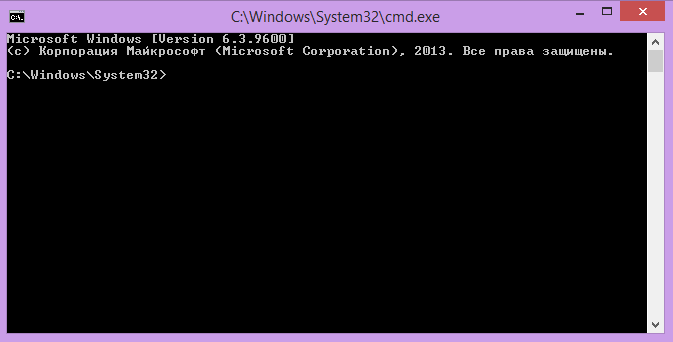
“Приглашение” заканчивается символом >, который означает, что оболочка ожидает вашего ввода. Стоит сразу запомнить неочевидный момент - если что-то не получается, необходимо попробовать перезапустить оболочку. Это справедливо и для других операционных систем и за свою карьеру авторы наблюдали “магическое действие” этого трюка на уже, казалось бы, очень опытных программистах. Выйти из оболочки можно словом exit или просто нажав на крестик вверху окна.
В ОС Linux и Mac терминал обычно доступен по-умолчанию среди программ и можно запустить его щелкнув по невзрачной иконке, скорее всего в виде прямоугольника. В этих операционных системах приглашение командной строки принято обозначать символом доллара $. Это не всегда правда, но на будущее стоит запомнить - если вы видите знак доллара где-нибудь в документации и после этого знака идет команда (например $ ls), то знак доллара обычно вводить не надо. Это просто индикатор того, что команду надо выполнять в оболочке bash (или частично совместимой с ней zsh).
Неважно, в какой оболочке вы сейчас находитесь, введите команду ruby и нажмите Enter. В случае с Linux и MacOS ошибки не будет, команда запустится и тихо будет ожидать окончания ввода программы. В Windows должна быть ошибка, ведь язык руби по-умолчанию не установлен, а это значит, что нам надо его установить.
Тут следует сделать отступление. Сейчас и в будущем - если вы не знаете, что делать, задайте вопрос гуглу. Например, в нашем случае - “how to run ruby program on windows”. Умение задавать вопрос и искать ответ - половина дела. Если честно, то только благодаря этому умению можно научиться программировать. Главное - мыслить последовательно и логически. Если не получается, всегда можно обратиться за помощью в чат (https://t.me/rubyschool).
Для запуска программ на руби из ОС Windows нужно запустить Ruby Installer https://rubyinstaller.org/. После того, как программа установлена, можно вводить команду `ruby` в терминале (не запускается? Может, попробовать перезапустить терминал?). TODO про пути. Ruby запустится “тихо”, и будет ожидать вашего ввода. Введите `puts 1+1`, затем нажмите Enter, а потом Ctrl+D (иногда Ctrl+D приходится нажимать два раза):
```
$ ruby
puts 1+1 (нажмите Ctrl+D в этом месте)
2
$
```
Что мы видим на экране выше? Приглашение командной строки ($), вводим ruby, потом “puts 1+1”, потом Enter, который переводит нас на следующую строку, на которой мы нажимаем Ctrl+D. После этого “сама появляется” цифра 2. Что же тут произошло?
Во-первых, вы запустили программу для запуска программ. Ruby - это программа (интерпретатор), которая позволяет запускать ваши, человечески написанные, программы. Компьютер говорит на языке нулей и единиц, и чтобы вас понять, ему надо считать человеческий язык - “puts 1+1”.
Комбинация Ctrl+D (обозначается также ^D) пригодится вам во всей вашей дальнейшей жизни, она передает сигнал о том, что “ввод закончен” (конец ввода, end of input, end of file, EOF). Это байт (его значение равно 4 - это запоминать не надо), который говорит о том, что наступил конец текстового потока данных, данных больше не будет. Интерпретатору ruby ничего больше не остается - только запустить то, что вы написали, что и было сделано.
Набранная вами команда “puts 1+1” - это ваша первая программа. Но мы не сохраняли ее в файле, мы ввели эту программу с клавиатуры и она “пропала” после того, как была выполнена. Сожалеем, что вы не сохранили свою первую программу. Но ничего страшного, она занимала всего лишь 8 байт, и восстановить ее - небольшая проблема.
Что же такое “puts 1+1”? Прежде чем ответить на этот вопрос, выполните задание. Запустите программу “1+1” (без puts). Мы увидим, что ничего не происходит. На самом деле результат был посчитан, но просто не выведен на экран. Возможен вариант, когда вы зададите компьютеру какую-нибудь сложную задачу и он будет считать ее очень долго. Но если вы не написали puts, то результат мы не узнаем.
Другими словами, puts выводит результат. Это сокращение от двух английских слов: put string (вывести строку). В других языках были приняты другие сокращения для вывода строки, например в языке Бейсик это “print”.
Так почему же надо писать puts вначале, а не в конце? Ведь сначала надо посчитать, а потом уже выводить. Почему puts стоит вначале? Все просто, в этом случае говорят: “метод (функция) принимает параметр”. Т.е. сначала мы говорим, что мы будем делать - выводить, а потом - что именно мы хотим выводить. Нашу программу можно также записать как “puts(1+1)”. В этом случае видно, что в скобках - параметр. Ведь в математике мы сначала считаем то, что в скобках, а потом уже выполняем остальные действия.
Кстати,
наши поздравления! Вы написали свою
первую программу.
Задание:
остановитесь тут и попробуйте написать
программу, которая считает количество
миллисекунд в сутках. Следующий абзац
содержит ответ:
```
$ ruby
puts 60 * 60 * 24 * 1000
(нажмите Ctrl + D)
```
Задача чисто математическая, количество секунд в минуте умножаем на количество минут в часе, умножаем на количество часов в сутках. И, чтобы получились миллисекунды, а не секунды, умножаем на 1000.
Далее, попробуйте запустить следующую программу:
|
puts 5**5 * 4**4 * 3**3 * 2**2 * 1**1 |
Запись ** означает возведение в степень. Например, 3 ** 2 = 3 * 3 = 9. Удивительно, но результат работы программы (5 в пятой степени умноженное на 4 в четвертой и т.д.) выше будет равен количеству миллисекунд в сутках! Этому нет какого-то объяснения. Совпадение? Может быть. Если вы знаете объяснение, напишите нам на email.
В качестве упражнения попробуйте написать такую конструкцию (подумайте, что произойдет):
|
puts 60 * 60 * 24 * 1000 == 5**5 * 4**4 * 3**3 * 2**2 * 1**1 |
В случае с “1+1” выше наш интерпретатор выполняет два действия: read (прочитать), evaluate (выполнить). Так как не было третьего действия “print” (puts в нашем случае), то не было и результата на экране. То есть, чтобы мы видели результат, надо выполнить read (R), evaluate (E), print (P). Хорошо бы еще и не запускать ruby каждый раз, чтобы программа в бесконечном цикле (loop - L) спрашивала нас “что хотите выполнить?”, т.е. сразу принимала бы ввод без лишних разговоров.
Из начальных букв у нас получилось REPL - read evaluate print loop. То есть REPL это такая программа, которая сначала читает, потом исполняет, потом печатает результат, и потом начинает все сначала. Это понятие широко известно и используется не только в ruby. А в руби REPL-программа называется irb (interactive ruby).
Попробуйте ввести irb и посмотрите что произойдет:
$ irb
2.5.1 :001 >
Непонятные цифры вначале - это версия руби. В нашем случае 2.5.1 (то же самое покажет команда ruby -v). 001 это номер строки - первая строка. То есть если REPL уже содержит “P” (print), то можно вводить “1+1” без puts.
Задание: посчитайте количество секунд в сутках, не выводя результат на экран с помощью puts.
Принцип наименьшего сюрприза говорит нам о том, что выход из REPL должен быть командой exit. Вводим exit - получилось!
Тут хочется заметить, что авторы редко используют именно irb в роли REPL. Существуют более удобные инструменты (pry - http://pryrepl.org/), которые выполняют ту же самую функцию, но имеют больше настроек. Этот инструмент рассматривается дальше в этой книге.
Запуск программы из файла ненамного сложнее. Достаточно передать аргумент интерпретатору руби с именем файла:
$ ruby app.rb
В этом случае интерпретатор считает программу из файла app.rb и запустит ее так же, как если бы вы ввели эту программу и нажали ^D.
Но возникает вопрос - как и где сохранить эту программу, в чем ее набрать, какой редактор кода использовать? Для начала ответим на первый вопрос — “где” сохранить программу, так как этот вопрос подразумевает знакомство с файловой системой и в нем есть некоторые подводные камни.
Для Windows, операционной системы, с которой вам нужно как можно скорее уходить на Linux, необходимо создать директорию (каталог, папку) в разделе C: и назвать ее, например, projects. После этого нужно перейти в директорию, создать там файл и запустить его.
Другими словами, нужно уже уметь делать как минимум четыре вещи:
Создавать директорию
Переходить в директорию
Создавать файл в директории и сохранять что-то в этот файл
Запускать файл (это мы уже умеем: ruby app.rb)
Тут можно было бы дать основные команды ОС Linux для этих целей и не завязываться на ОС Windows. Однако, рынок диктует свои условия - большинство пользователей сейчас работают на Windows, а значит с большой долей вероятности и у вас установлена эта операционная система. Но не стоит отчаиваться, мы исправим этот досадный факт, а пока постараемся как можно быстрее настроить нашу среду исполнения, чтобы мы могли писать и запускать программы, а исправлением займемся потом.
Умение ориентироваться в файловой системе - ключевой навык любого программиста. Как библиотекарь должен знать, где какая книга лежит, так и программист должен знать (или уметь разобраться, найти), где лежит тот или иной файл. Нужно всегда иметь в голове примерную “картинку” файловой системы.
Но из практики обучения студентов этому, казалось бы, простому делу выяснилось, что не все представляют себе, что такое файловая система и как эффективно работать с файлами (создавать, находить, переносить, переименовывать). Можно было бы написать список команд и дать задание запомнить эти команды. Но мы пойдем более гуманным и проверенным путем - мы познакомимся с файловым менеджером.
Если вы занимаетесь программированием более 20 лет, то вряд ли существует много инструментов, которые были актуальны тогда и сейчас. Именно поэтому мы изучаем руби, т.к. знаем, что знания, полученные 10 лет назад, до сих пор не теряют свою ценность. Но существуют также и другие инструменты, которые используются и сейчас, и пережили при этом не одно поколение операционных систем.
Один из таких инструментов - файловый менеджер:
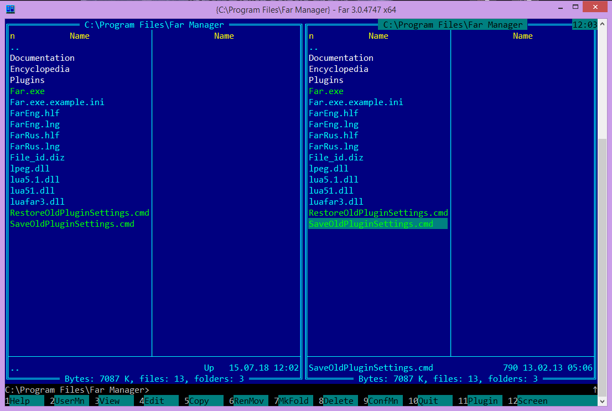
Как было уже замечено ранее, работа с файлами - это ключевой навык программиста, системного администратора или даже любого эникейщика. В большинстве книг по программированию (и не только) работа с файлами не освещается достаточно хорошо. Дается набор шелл-команд, но никто не говорит, как работать с файлами эффективно, быстро и просто. Последнее - немаловажно для любого начинающего, ведь наша задача - как можно эффективнее потратить наше время на наиболее значимые вопросы программирования, получить работу, а потом уже “дотачивать” навык.
Поэтому запоминать команды оболочки, приведенные ниже, не стоит, они запомнятся сами. Более того, команды будут даны для ОС Linux (точнее, для оболочки, совместимой со стандартной bash). А комбинации клавиш для ОС Windows, т.к. Far работает только в Windows.
Подождите, - скажет внимательный читатель, - мы хотим уйти от Windows, но также хотим научиться работать в Far? Дело в том, что файловый менеджер - вещь универсальная. Еще во времена DOS (уже малоизвестная операционная система от Microsoft) появился один из самых первых (самый первый?) файловых менеджеров - Norton Commander. Под операционной системой Linux (а также и MacOS) существует Midnight Commander:
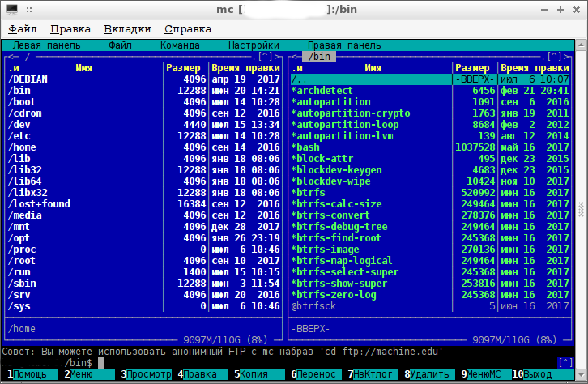
Да и кроме “синих экранов” существуют различные варианты файловых менеджеров на любой вкус и цвет. Однако, популярность Far’a настолько высока (из-за удобства прежде всего), что некоторые программисты нашли способ запустить его на Linux и Mac без использования эмулятора. Способ установки Far на Linux и MacOS описан по ссылке https://github.com/elfmz/far2l. Начинающие программисты могут столкнуться с трудностями, следуя инструкциям по этой ссылке, но если у вас есть опыт или время, мы настоятельно рекомендуем установить Far на Linux/MacOS. На MacOS этот файловый менеджер устанавливается одной командой:
```
$ brew install yurikoles/yurikoles/far2l
```
Если на вашей MacOS не установлен HomeBrew, то потребуется установить сначала эту программу. Подробности см. по ссылке https://brew.sh/. После установки вы сможете запустить файловый менеджер командой `far2l`.
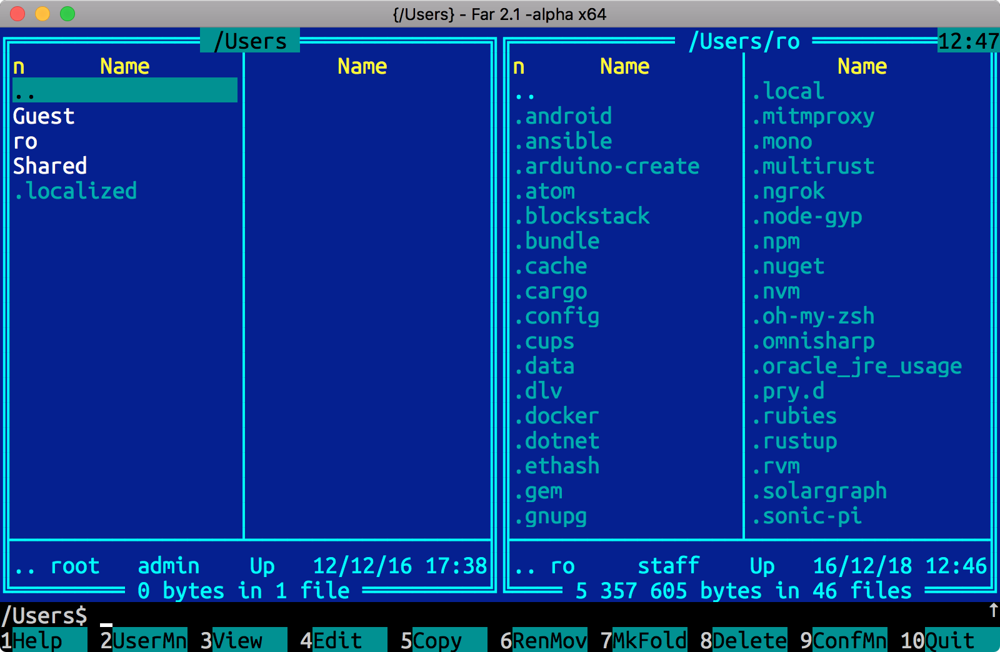
Рис. Far Manager запущен на MacOS
Задание: если вы используете MacOS или Linux, найдите и установите файловый менеджер. Пример запроса в гугле: “file manager for mac os”. Для Linux семейства Ubuntu установка обычно сводится к двум командам в терминале:
$ sudo apt-get update
$ sudo apt-get install mc
(после этого можно вводить “mc”, чтобы запустился Midnight Commander).
Не отчаивайтесь, если у вас ничего не получилось. Имейте в виду, что если что-то не работает локально, можно всегда воспользоваться облаком. Например, сайт https://repl.it/ предлагает на выбор множество языков программирования, которые можно запустить прямо в вашем браузере. Среди этих языков есть и Руби. Конечно, это не путь настоящего джедая, но как бэкап-план -- отличное решение!
Основы работы с файловой системой
Говорят, что файловая система “древовидная”, то есть её можно представить в виде дерева. Каждая ветвь - это директория, в которой может быть одна или несколько других директорий (ветвей) или файлов (листьев). Также директория может быть пустой. Самую главную директорию называют “корневой” (root directory - не надо путать с root home directory - это директория пользователя с именем root).
Уже тут начинаются разногласия. Почему структура древовидная, а главная директория корневая, а не стволовая? Ведь ветви растут от главного ствола! Также, когда мы представляем дерево - мы подразумеваем, что дерево растет вверх. Хотя во всех файловых менеджерах “корни” растут вниз - надо нажать кнопку вниз, чтобы поставить курсор на 1 директорию ниже. Может тогда лучше говорить, что структура не древовидная, а корневидная?
Рис. Детское творчество в одном из детских садов в Кремниевой Долине. Любопытный программист задаст вопрос - а где корень у этого дерева? Дело в том, что корневой, самый главный, узел (обычно обозначается как root - корень) находится в самом верху. Или мы все-таки говорим про ветви, которые растут снизу вверх? В этом вопросе есть неопределенность, пусть она вас не пугает.
В любом случае, корневидная она или древовидная, у дерева вверху намного меньше ветвей, а внизу намного больше. В файловой системе такого нет, все директории и файлы по-умолчанию отсортированы в алфавитном порядке. Наверное, у человека не нашлось более точной аналогии и было принято называть файловую структуру “древовидной”.
Кстати, одна из моих любимых сортировок файлов и директорий в любом файловом менеджере - по дате обновления в убывающем порядке. Такой порядок позволяет в самом верху видеть файлы, которые были обновлены недавно. А человек обычно всегда работает с самыми “свежими” файлами. Как только вы прочувствуете это преимущество, вам не захочется сортировать по-другому.
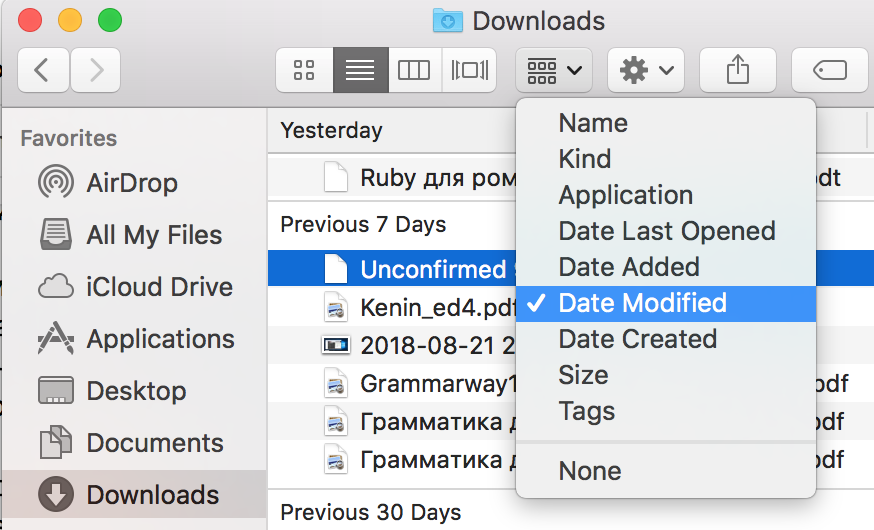
Рис. Сортировка по дате обновления в убывающем порядке в Finder (MacOS)
Те программисты, которые постоянно используют консоль (не пользуются файловыми менеджерами) упускают это очевидное преимущество. Нам достаточно скачать проект любой сложности и мы уже будем видеть, какие директории и файлы были изменены недавно - над чем идет работа, в курсе чего нужно быть. Так что, пока не узнав ни одной команды, вы уже получили знание, которое будет полезно и которое также приобретается и осознается не сразу даже опытными программистами - озарение может наступить через несколько лет.
Навигация в файловой системе - это просто переход из одного каталога в другой, чтобы посмотреть, что там находится, какие файлы. В Far для навигации используются кнопки вверх, вниз, Enter (войти в директорию), tab (для перехода на соседнюю панель).
В bash для навигации существуют следующие команды (cd работает в Windows, а вот ls уже не работает):
$ cd my_dir # войти в директорию my_dir
$ cd .. # подняться на уровень выше
$ ls # листинг (список файлов)
С cd вроде бы все понятно, но листинг обычно не выдает полный список файлов. Оказывается, что есть еще скрытые файлы (в Linux и MacOS они начинаются с точки)! Поэтому команду нужно изменить на `ls -a` чтобы вывести все файлы. В Far’е тоже есть такая настройка (в верхнем меню Options-Panel Settings-Show hidden and system files).
Авторы редко используют `ls` или `ls -a`. Наиболее удобная команда консоли для вывода всех файлов это `ls -lah`:
Флаг `l` указывает на то, что нам нужен вывод в виде расширенного списка (который содержит права на доступ к файлу, имя владельца, размер в байтах, дату обновления).
Флаг `a` говорит о том, что надо выводить информацию обо всех файлах (all), в т.ч. скрытых.
Флаг `h` говорит о том, что нужно выводить размера файла не в байтах, а в human-readable формате, т.е. в формате, который понятен человеку (килобайты, мегабайты, гигабайты и т.д.)
Кстати, флаг `h` очень полезный и часто используется для других команд. Например, `df -h` (disk filesystem in human-readable format) выводит статистику свободного места на разделах вашего диска в гигабайтах.
А в Far’e нужно для этого нажать Ctrl+L (^L). Чтобы скрыть нужно еще раз нажать ^L. Вообще программисты довольно ленивые люди, поэтому чтобы что-то включить, а потом выключить (toggle), иногда нужно нажать одну и ту же комбинацию клавиш. Например, просмотр файла в Far и Midnight commander это клавиша F3, а выход из просмотра тоже F3 (кто не знает - тот обычно использует Escape и тянется в конец клавиатуры).
Мы изучили пару шелл-команд (на самом деле их не надо запоминать, просто сделайте пометку в книге), но в файл-менеджере это всего лишь несколько правильных кнопок, которые позволяют не только легче понять, как выглядит ваш проект или файловая система целиком, но и дают более наглядный результат.
Авторы книги, несмотря на большой опыт программирования и привычку делать все из “черного экрана” - консоли, время от времени все-таки запускают файловый менеджер. Особенно это полезно делать на новом проекте, который содержит много файлов.
Задание: “походите” по вашей файловой системе и посмотрите, какие файлы и директории в ней существуют. Директории из корневого каталога (== “директории из корневой директории”) будут часто встречаться в будущем.
Один программист из нашей компании написал самый маленький в мире вирус, он занимал 0 байт и даже его создатель не знал, что он делает (шутка).
Комбинация для создания файла в Far и MC (Midnight Commander) - Shift+F4. Разница между двумя менеджерами в том, что первый спросит имя файла вначале (перед созданием) а второй - в конце (перед сохранением). В ОС Linux и MacOS (далее мы будем говорить “линукс-совместимые”, хотя это и не всегда правда и говорят “юникс-совместимые”, или просто *nix) существует команда для создания пустого файла:
$ touch app.rb
Команда выше создает пустой файл app.rb (если файл уже есть, команда меняет время обновления файла на текущее).
По-умолчанию файловый менеджер откроет встроенный редактор, где вам будет предложено ввести любой текст. Команда touch редактор не открывает, и, если вы выполняете свои действия из консоли, то вам потребуется запустить текстовый редактор самостоятельно. Пока тему текстовых редакторов кода опустим, ведь для простейших программ мощный инструмент не нужен.
В текстовом редакторе введите `puts “hello”` и нажмите Esc. Вам будет предложено сохранить файл. Сохранить можно также с помощью F2 (в редакторах кода это почти всегда ^S).
У вас появилась программа в текущем каталоге среди остальных файлов, но мы забыли создать директорию! Тут можно сделать две вещи - удалить файл F8, создать директорию F7 и повторить то же самое там. Или создать директорию и скопировать, нажав клавишу F5, туда наш файл. Копирование производится с одной панели на другую, поэтому на одной панели нужно создать директорию, потом переключиться на соседнюю (Tab) и оттуда уже скопировать. Можно было переместить файл, нажав клавишу F6, чтобы скопированный файл потом не удалять.
Задание: разберитесь с созданием, копированием, переносом файлов и директорий. Попробуйте скопировать несколько файлов, предварительно выделив их (Ins). Ведь это потребуется нам в дальнейшем, а команды для копирования файлов и директорий из консоли не такие очевидные.
Новичку на первых порах лучше всего хорошо разобраться с файловым менеджером. Мы бы могли дать курс по консольным командам, но сколько человек бы мы потеряли в бою, если бы нужно было овладеть искусством манипулирования файлов в консоли, прежде чем написать первую программу? Ниже мы разберем основные команды. Не все программисты с опытом с ними знакомы, поэтому запоминать их не стоит, но сделать пометку в книге нужно обязательно. Эти команды могут вам потребоваться через год, два и более лет.
Создать директорию (make directory) “one”:
$ mkdir one
Создать одну директорию “one”, в ней другую “two”, и и в ней третью “three”. Без флага `p` (path) не обойдешься:
$ mkdir -p one/two/three
Вывести файл на экран:
$ cat file.txt
Трюк: существует альтернатива команде `cat` (кошка), которая называется `bat` (летучая мышь). На официальном сайте https://github.com/sharkdp/bat говорится, что летучая мышь это кошка с крыльями “A cat with wings”. Требуется установить bat перед использованием. Из коробки команда позволяет выводить файлы с подсветкой синтаксиса и номерами строк.
Обычно вывод файла осуществляется другой командой, ведь файл может быть большой. Вывести первые 10 строк на экран:
$ head -10 file.txt
Вывести последние 10 строк на экран:
$ tail -10 file.txt
Иногда существует какой-то большой текстовый файл, в который постоянно добавляются данные. И вы хотите выводить на экран обновления без перезапуска команды tail. В этом случае поможет флаг `f` (follow - следовать):
$ tail -f file.txt
Выход из этой команды осуществляется стандартной комбинацией Ctrl+C.
Для переименования файла используется команда `mv` (в файл-менеджере F6), от слова `move`. Для компьютера переименовать и переместить файл это одно и то же. Дело в том, что в таблице размещения файлов (практически в любой стандартной файловой системе), содержатся только структуры с метаданными о файле (имя, размер, атрибуты и т.д.). Содержимое размещено на диске. При переносе или переименовании мы изменяем только таблицу, хотя содержимое остается на том же месте. Именно поэтому перенос больших файлов (гигабайты) занимает доли секунды, если операция выполняется на том же диске. И минуты и часы, когда операция выполняется на разных дисках - ведь нужно “перенести” (на самом деле скопировать и удалить) содержимое:
$ mv file1.txt file2.txt # переименовать первый файл во второй
Скопировать файл (copy):
$ cp file1.txt file2.txt
Скопировать файл в директорию (попробуйте самостоятельно перенести, move, файл в директорию):
$ cp file1.txt my_directory
Скопировать файл в директорию на 1 уровень выше:
$ cp file1.txt ..
Скопировать файл в директорию на 2 уровня выше (то же самое можно сделать и в файл-менеджере, если указать в качестве назначения директорию `../..`):
$ cp file1.txt ../..
Скопировать несколько файлов в директорию. К слову, тут уже у многих т.н. высокомерных программистов, которые любят давать советы, наступает клин. Можете использовать этот вопрос “для проверки” - “а знаешь ли ты какой командой можно скопировать несколько файлов в директорию?”:
$ cp {file1.txt,file2.txt} my_dir
В
Far
Manager
для копирования нескольких файлов
необходимо их сначала выбрать. Это можно
сделать с помощью клавиши Insert
(Ins).
Если клавиши Insert
на вашем компьютере нет (существует
только на расширенных клавиатурах), то
выбрать можно с помощью Shift
+ “стрелка вверх” или Shift
+ “стрелка вниз”. После этого для
копирования с одной панели на другую
нажать F5.
Стоит заметить, что если вы установили “Oh My Zsh” вместо bash, то у вас доступна клавиша Tab, которая очень помогает набирать имена файлов. Например, вводите `cp {f`, а потом Tab и оболочка предложит вам список файлов, которые можно включить в команду. Ничего вводить с клавиатуры не нужно. Очень полезно, когда имена файлов длинные.
Поиск файла по имени (команда найдет все файлы и директории с расширением `rb`):
$ find . -name '*.rb'
Поиск всех файлов в текущей директории, в имени которых содержится строка `bla`:
$ find . -name '*bla*'
Поиск файлов (без директорий) с расширением `rb`:
$ find . -name '*.rb' -type f
Как вы могли заметить, существует разные способы поиска файлов в текущей директории. Текущая директория обозначается точкой. Двумя точками обозначается директория уровнем выше. Директория двумя уровнями выше обозначается как `../..`. Небольшая справка по разным обозначениям и примеры использования find:
. - текущая директория. Пример команды (ищет все файлы с расширением log в текущей директории): find . -name '*.log'
.. - директория уровнем выше. Пример команды (ищет все файлы с расширением log в директории уровнем выше): find .. -name '*.log'
../.. - директория двумя уровнями выше. Пример команды (ищет все файлы с расширением log в директории уровнем выше): find ../.. -name '*.log'
~ - домашняя (home) директория, т.е. личная директория текущего пользователя. Пример команды (ищет все файлы с расширением log в домашней директории): find ~ -name '*.log'
/ - корневая (root) директория. Пример команды (ищет все файлы с расширением log в корневой директории): find / -name '*.log'
В Far Manager можно искать файлы с помощью специального диалога, который можно вызвать комбинацией Alt+F7. Визуально этот диалог более наглядный и с ним проще работать. По-умолчанию маска файла задана как *.* (все файлы, по аналогии с *.log - файлы с расширением log). В этом диалоге можно также искать файлы с определенной строкой (например, когда требуется найти все файлы, в которых встречается ваше имя).
Поиск по всем файлам определенной строки (в нашем случае something):
$ find . -name '*.rb' -type f | xargs grep something
Команда выше делает поиск, а потом перенаправляет результат в команду xargs, которая для каждой полученной строки запускает программу grep с аргументами: `grep something file1.rb`. Не стоит переживать, если эта конструкция непонятна - со временем все встанет на свои места.
Иногда полезно что-то быстро сохранить в файл прямо из консоли. Когда ввод окончен, нужно нажать Ctrl+D. Будьте осторожны, эта команда затрёт предыдущее содержимое файла:
$ cat > file.txt
Добавить в конец файла:
$ cat >> file.txt
Немного про саму файловую систему. Корневой каталог обозначается как `/`. Есть также такое понятие как “домашний каталог” - это личный каталог текущего пользователя. Узнать имя текущего пользователя можно с помощью команды “кто я”:
$ whoami
ninja
Любопытно, что в pry (отладчик/дебаггер и REPL, рассматривается ниже) есть команда `whereami` (где я). Она показывает, где вы находитесь в текущем коде (разбирается далее в книге).
Вывести текущую директорию на экран (PWD - Print Working Directory - напечатать рабочую директорию):
$ pwd
/home/ninja
Домашний каталог обозначается тильдой `~`. Можно вывести его на экран:
$ echo ~
/home/ninja
Или совершить другие манипуляции:
$ mkdir ~/tmp # создать директорию tmp в домашнем каталоге
$ cp file.txt ~/tmp # скопировать файл в созданную директорию
Кстати, создайте директорию ~/tmp - это удобно для хранения временных файлов. Существует системная директория /tmp, но все данные оттуда удаляются после перезапуска компьютера (по-умолчанию).
Удаление файла, будьте осторожны (remove):
$ rm file.txt
Удаление директории:
$ rm -r my_dir
Надо заметить, что параметр `r` универсальный для многих команд - он указывает на то, что работа будет производиться с директорией, рекурсивно (recursive).
ВНИМАНИЕ! Будьте осторожны с командой “rf”. Существует самая опасная команда, которую вы можете ввести: `rm -rf /`. Эта команда удалит содержимое корневой директории на вашем диске без какого-либо подтверждения. Иногда в сети существуют злые шутники, которые могут попросить вас что-нибудь ввести. Всегда проверяйте, что именно вы вводите.
Выше мы рассмотрели команду копирования, но есть еще одна, менее известная, команда копирования, которая вам может пригодиться: `scp`. Это команда копирует файлы с удаленного сервера на локальный компьютер и обратно. Например, на вашем сайте произошла какая-то ошибка и вы хотите скачать файл с описанием ошибок через SSH-доступ. Это можно сделать с помощью “scp”. Останавливаться подробно пока на этом не будем, при желании вы всегда можете найти справку в Интернете.
На этом тренировка для настоящих ниндзя окончена, время выпить чаю, да съесть ещё этих французских булок.
Существует много текстовых редакторов, но мы будем говорить только про редакторы кода. Они отличаются от текстовых редакторов тем, что редакторы типа Word сохраняют файлы не в plain (чистом) формате. Нам нужен текстовый редактор, который позволит сохранять файлы as is (так, как они есть, ну или почти): т.е. если мы вводим 1 символ и нажимаем “Сохранить”, то размер файла будет ровно 1 байт. Если редактор очень простой, то он может быть отнесен как к текстовым, так и к редакторам кода.
Все редакторы кода можно разделить на два вида: консольные и графические. Самый простой консольный редактор это nano:
$ nano
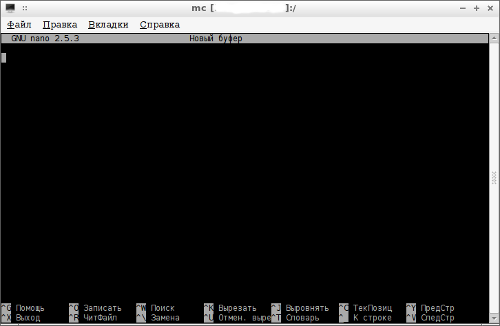
Подсказка внизу - это основные команды. Существуют и другие, более продвинутые редакторы (vim, emacs). К сожалению, для овладения консольными инструментами требуется больше времени. Существует множество холиваров (holy wars - святые войны) на тему редакторов кода. Авторы пришли к выводу, что не стоит придавать выбору редактора очень большое значение, т.к. редактор сам по себе не имеет смысла без наличия знаний по программированию.
Из графических редакторов для руби следует выделить четыре (в порядке преференций авторов):
VsCode (также известный как Visual Studio Code, не путайте со средой разработки Visual Studio)
RubyMine (платный)
Atom
Sublime Text (платный)
RubyMine относится не к редактору, а к IDE - Interactive Development Environment, это улучшенная версия редактора кода, которую называют “среда разработки”. Начинающему можно порекомендовать любой из вышеперечисленных. Возможно, кому-то понравится RubyMine, в котором наличие широких возможностей облегчает отладку и написание программ, особенно на первых порах. Однако, в этой книге работа с тем или иным редактором рассматриваться не будет. Вначале мы будем использовать редактор, встроенный в ваш файловый менеджер (Shift + F4), а в дальнейшем выбор редактора будет только за вами.
Обычно любой редактор при установке создает команду для запуска редактора из консоли. С помощью консольной команды можно открыть редактор для текущей директории:
$ code . # команда откроет редактор VsCode
Или Atom:
$ atom .
Если запустить команду без точки, то откроется каталог по-умолчанию. На практике редко приходится запускать редактор без параметра.
Задание: установить текстовый редактор. Попробовать создать несколько файлов в текстовом редакторе. В каждый файл запишите имя человека, которого вы знаете. Удалите файлы.
На самом деле нашей первой программой была программа сложения двух чисел: “puts 1+1”. Давайте создадим новый файл с именем app.rb и запишем в него следующий код:
puts "I would hug you, but I’m just a text"
Когда файл создан и сохранен, из терминала можно запустить программу:
$ ruby app.rb
I would hug you, but I’m just a text
В файл-менеджере тоже можно ввести “ruby app.rb”. Но что такое, если запустить программу через файл-менеджер, то все пропадёт! Тонкость в том, что программа запускается, “отрабатывает” и управление переходит обратно - в терминал или в нашем случае в файловый менеджер. Поэтому чтобы посмотреть “что же там было” после того, как мы нажали Enter, надо нажать ^O.
Ура! У нас получилась первая осмысленная программа. Давайте её немного улучшим:
puts "I would hug you, but I’m just a text"
gets
Теперь мы выводим на экран строку и вместо того, чтобы выходить из программы - ожидаем ввода. Но не просто ввода, а ввода строки. Инструкция “gets” это по сути “get string” - получить строку. Вот мы и пробуем получить строку. Заметьте, что строка может состоять из множества символов, поэтому руби понимает окончание строки только в том случае, если вы нажмете Enter. Разумеется, можно просто нажать Enter, тогда строка будет пустая (если честно, то не совсем, но будет “казаться”, что она пустая).
Запустите программу выше и попробуйте нажать Enter. Если вы запускаете программу из файл-менеджера, то результат не “пропадет” и программа будет ждать вашего ввода.
Давайте составим простейшую программу для изучения иностранного языка. Возьмем три слова: ball, door, peace. Представим, что нам нужно выучить эти слова. Мы напишем программу, которая будет спрашивать - “Как переводится слово peace?”. В этот момент подразумевается, что пользователь должен дать ответ вслух: мяч, дверь, мир. Т.к. с остальными операторами языка мы не знакомы, то обойдемся тем, что есть:
|
puts
"How
to translate ball?" |
Попробуем запустить - работает! Это не очень удобное, но рабочее и полезное приложение. Оно не выводит ответы, но уже задает вопросы. Другими словами, с помощью двух операторов puts и gets мы смогли написать что-то интересное. Что же будет дальше! Для играющих на гитаре предлагаем программу для изучения нот на первой струне:
|
puts
"Say
a note on a 0 fret?"
#
Подразумевается, что мы скажем
E |
И так далее, до 12 лада (E F F# G G# A A# B C C# D D# E). Напишите программу самостоятельно, если тема музыки вам не интересна, сделайте программу для изучения 10 слов.
По
поводу листинга выше можно сделать
несколько замечаний. Во-первых, вы
наверное уже заметили, что после строки
можно оставить любой комментарий,
достаточно ввести # (решётка, hash,
иногда говорят pound
sign).
Можно оставлять комментарий и на новой
строке. Можно оставлять сколько угодно
комментариев и пустых строк, на работу
программы это не влияет.
Задание:
попробуйте оставить комментарии к своей
программе и добавить пустые строки
после gets,
чтобы визуально программа выглядела
“легче”.
Второе замечание - поддержка русского языка, а точнее правильной кодировки. В ОС Windows скорее всего возникнут проблемы с русской кодировкой. Это одна из причин почему не стоит использовать Windows и нужно переходить на MacOS или Linux - на этих операционных системах проблем с кодировкой нет. К счастью, проблема кодировки очень просто исправляется, если в самое начало файла добавить:
|
# encoding: cp866 |
Разумеется, файл должен быть тоже сохранен в этой кодировке в текстовом редакторе. Другими словами, мы “дружим” руби и текстовый редактор. Интерпретатору руби говорим в какой кодировке будет этот файл, а в редакторе выбираем эту самую кодировку CP866 (также она может называться DOS кодировкой). После этого можно писать по-русски.
В “нормальных” операционных системах этих трюков проделывать не нужно. Если можете, переключайтесь на них как можно скорее. В дальнейшем таких сложных трюков быть не должно, но помните - если что-то не получается, то ошибка может заключаться в том, что вы используете неправильную операционную систему. Несмотря на то, что руби должен без проблем работать в Windows, для этой операционной системы он не предназначался. А авторы популярных библиотек не тестируют свои программы на Windows.
Задание: если у вас установлена ОС Windows, попробуйте скачать VMWare Workstation (платная программа) или VirtualBox (бесплатная). Это виртуальная машина - программа для запуска операционных систем внутри вашей ОС. Попробуйте запустить виртуальную машину и установить в ней Linux Mint Cinnamon edition. Попробуйте написать первую программу в Linux! Если не получится - ничего страшного, продолжайте обучение дальше, можно будет вернуться к этому позднее.
Переменная - это область памяти в компьютере, куда мы можем сохранить значение во время исполнения программы. Возникает вопрос - а зачем его сохранять? А как раз для того, чтобы его потом изменить. В этом и заключается суть переменных - это ячейки памяти, куда мы можем что-то записать и, при желании, изменить.
Но не обязательно менять значения переменных, можно создавать переменные для удобства. Правда, в этом случае переменные часто называют константами - ведь они не меняются! Поэтому в современном языке JavaScript для создания переменных есть два ключевых слова: let для создания переменной, и const для создания константы. Но в руби все проще.
Попробуем “объявить” (создать, define, declare, create, make) простую переменную:
|
puts
"Your
age?" |
В программе выше мы спрашиваем возраст. После того, как возраст указан, программа выведет на экран ответ:
|
Your
age? |
Возраст, который мы вводим сохраняется в переменную `age`. Мы бы могли назвать ее другим именем (например, `a`), но в этом случае и на четвертой строке пришлось бы писать "puts a". Существуют т.н. naming conventions - соглашения о наименовании - их достаточно просто найти: ввести в поисковой системе запрос “naming conventions variables ruby”.
В языках программирования Ruby и JavaScript мы столкнемся с тремя основными naming conventions:
Snake case (snake - змея), между словами ставится знак подчеркивания underscore (`_`). Переменные именуются следующим образом: client_age, user_password, user_password_expiration_date. Используется в руби, а также в базах данных.
Camel case (camel - верблюд), слово начинается с маленькой буквы, слова разделяются с помощью больших букв: clientAge, userPassword, userPasswordExpirationDate. Используется в JavaScript.
Kebab case (kebab - шашлык), слова разделяются дефисом: client-age, user-password, user-password-expiration-date. Иногда используется в HTML, в т.н. data-атрибутах. Например: `<input type="text" name="login" data-error-highlight-color="red">`.
Пока запомним только первый вариант, для Ruby. Если переменная имеет длинное название, то слова разделяем нижним подчеркиванием. Нужно заметить, что чем короче названия переменных, тем лучше. Всегда нужно стремиться писать код так, чтобы названия переменных не были слишком длинными. Однако, для начинающих эта задача не всегда по силам. Придумать хорошее название для переменной не всегда просто, среди программистов ходит даже такая шутка:
> There are only two hard things in Computer Science: cache invalidation and naming things.
> (Дословно: существуют две сложные проблемы в Компьютерной Науке: инвалидация кеша и именование вещей).
Если название переменной получается слишком длинным, не стоит его “искусственно” занижать (например, переименовав `client_password_expiration_date` в `cped`). Обычно это свидетельство того, что контекст решаемой проблемы слишком широкий, и пришла пора разбить функциональность на малозависимые друг от друга классы/объекты. Однако, это задача для другой книги. На данном этапе можете называть переменные так, как вам хочется.
Кроме naming conventions существуют правила: в руби переменные должны начинаться всегда с буквы, переменные могут содержать цифры и/или знак подчеркивания.
Задание: написать программу, которая подряд спрашивает год рождения, место рождения, номер телефона трех клиентов, после чего выводит полученную информацию полностью в виде “карточек” (в англ.языке это бы называлось baseball card, аналогия в русском языке - карточка из картотеки).
Так как придумать названия на первом этапе на английском языке может быть сложно (а для переменных желательно, но не обязательно использовать английский язык, а не траснлит), приведем перевод. Год рождения - year of birth, место рождения - place of birth, телефонный номер - phone number. На будущее при возникновении вопросов об именовании переменных, рекомендуется заглянуть в словарь:
https://www.multitran.ru/ - русско-английский и англо-русский словарь
http://context.reverso.net/ - альтернативный словарь с контекстом
http://www.thesaurus.com/ - поиск синонимов англ.языка
https://translate.google.com/ - переводчик на все случаи жизни
Давайте посмотрим на нашу программу, что мы можем в ней улучшить?
puts "Your age?"
age = gets
puts "Your age is"
puts age
Две последние строки можно сократить до одной:
puts "Your age?"
age = gets
puts "Your age is" + age
Результат работы программы:
Your age?
30
Your age is30
Чего-то не хватает? Правильно, пробела после слова “is”. Как вы уже увидели из примера выше, мы можем складывать строки. С точки зрения математики это не имеет никакого смысла, зато строки в памяти компьютера объединяются. Запустите такой код в REPL или в виде программы:
"My name is " + "Roman" + " and my age is " + "30"
Результат:
"My name is Roman and my age is 30"
Попробуйте теперь сложить два числа в виде строк следующим образом, постарайтесь понять каким будет ответ:
"100" + "500"
Спойлер: ответ будет “100500”. Другими словами, если число представлено в виде строки (взято в кавычки), Руби будет понимать это число как строку. Если бы напишем `100 + 500` (не берем в двойные кавычки каждое число), то результат будет 600.
Оказывается, что строки можно не только складывать, но и умножать. Только строку нужно умножать на число, в примере ниже нельзя взять второе число в кавычки:
"10" * 5
=> "1010101010"
Получили число 10 повторенное 5 раз. Если мы поставим после 10 пробел, результат будет более наглядным:
"10 " * 5
=> "10 10 10 10 10 "
Как было уже замечено, `10 ` это всего лишь строка, можно подставить любую строку:
"Я молодец! " * 10
=> "Я молодец! Я молодец! Я молодец! Я молодец! Я молодец! Я молодец! Я молодец! Я молодец! Я молодец! Я молодец! "
На практике приходится часто умножать `=` или `-` на 80 (стандартная ширина экрана в символах, принятая за стандарт), чтобы визуально отличить одну часть от другой. Например:
puts "Your age?"
age = gets
puts "=" * 80
puts "Your age is " + age
Результат:
Your age?
30
======================================================================
Your age is 30
Мы уже разобрались, что две строки можно складывать с помощью `+`. Также мы знаем, что строку можно умножить на число. С помощью этих экспериментов мы выяснили, что существует как минимум два типа данных: строка и число. Причем, само число, взятое в кавычки это строка. Давайте посмотрим на то, как руби понимает что такое число, а что такое строка:
$ irb
> "blabla".class
=> String
> "123".class
=> String
> 123.class
=> Integer
Говорят, что все в руби - объект (Object). В результате любой операции получается объект. Каждый объект “реализует метод” `class`. Выражение “реализует метод” означает, что какой-то программист, разработчик языка руби, сделал специальную небольшую подпрограмму, которую мы с вами можем запускать, если знаем имя этой подпрограммы. Чтобы вызвать подпрограмму для какого-либо объекта, нужно ввести точку и написать имя этой подпрограммы.
В нашем случае имя этой подпрограммы (говорят “имя метода” или “имя функции”, метод и функция - синонимы) это `class`. Кстати, не надо путать имя метода `class` с ключевым словом `class`, которое определяет т.н. класс - мы будем проходить это позднее. Если бы в реальной жизни у объектов были методы, то мы бы с вами могли увидеть следующее:
Яблоко.разрезать
Яблоко.количество_семян
Яблоко.количество_червей
Река.температура_воды
Река.количество_рыбы
И так далее. Так вот, в каждом объекте определен метод `class`:
Object.class
В нашем случае `123` (без кавычек) и `"blabla"` это объекты. Тип объекта `123` - Integer (целое число). Тип объекта `"blabla"` - String (строка). Тип любого объекта можно получить добавив в конце `.class`.
Конечно, для каждого объекта существует документация о том, какие методы поддерживаются. Настоятельно рекомендуется смотреть документацию для каждого типа с которым вы работаете. Пример документации для разных типов:
https://ruby-doc.org/core-2.5.1/Object.html - тип Object
https://ruby-doc.org/core-2.5.1/String.html - тип String
https://ruby-doc.org/core-2.5.1/Integer.html - тип Integer
Документацию легко найти по поисковому запросу, например “ruby object docs” или “ruby string docs”. В документации описано все, что мы можем делать с объектом. Это настоящая кладезь информации, документация должна стать вашим лучшим другом. Программист, который не поглядывает в официальную документацию по мере разработки и обучения, вряд ли добьется успеха. В документации указаны все возможные операции, которые можно выполнять с тем или иным объектом.
Пример документации к `Object.class`: https://ruby-doc.org/core-2.5.1/Object.html#method-i-class
А вот про пример умножения строки на число: https://ruby-doc.org/core-2.5.1/String.html#method-i-2A - в документации дан любопытный пример умножения строки на ноль (возвращается пустая строка).
Существуют и другие типы данных, мы рассмотрим их в этой книге в следующих главах.
Задание: Узнайте какой тип данных у `""`. А какой тип данных у `0` (ноль)? Какой тип данных у минус единицы? Какой тип данных у округленного числа “Пи” `3.14`?
Задание: Известно, что метод `.class` для любого объекта возвращает результат. REPL читает (read), выполняет (evaluate) и печатает (print) этот результат на экран. Но если все в руби объект, то какого типа возвращается сам результат, когда мы пишем `.class`? Вот этот метод `.class` - результат какого типа он возвращает? Видно ли это из документации? Проверьте. Попробуйте написать `123.class.class` - первое выражение `123.class` вернет результат, а следующий `.class` вычислит тип этого результата.
Докажем, что все в руби - объект
Известно, что `123.class` возвращает Integer, `"blabla".class` возвращает String. Но у объекта (Object) существует также метод `is_a?`, который возвращает истину или ложь, если передать определенный параметр в этот метод:
$ irb
> 123.is_a?(Integer)
=> true
В примере выше для объекта `123` мы вызвали метод `is_a?` с параметром Integer. Метод вернул результат true (истина). Т.е. 123 является типом Integer (целое число). Если мы проверим, является ли `123` строкой, то ответ будет “ложь”:
$ irb
> 123.is_a?(String)
=> false
Но для строки ответ будет “истина”:
$ irb
> "blabla".is_a?(String)
=> true
Кстати, “is_a?” не какое-то магическое выражение, а “калька” с английского языка. Мы как бы спрашиваем “Is this object a string?” (является ли этот объект строкой?).
Выше мы убедились, что 123 это число, а “blabla” это строка. Но является ли число и строка объектом? Давайте проверим:
$ irb
> 123.is_a?(Object)
=> true
> "blabla".is_a?(Object)
=> true
Оказывается, что да! Число и строка являются объектами. 123 это одновременно число и объект. “blabla” это одновременно строка и объект.
Что такое объект - мы разберем дальше. На этом этапе нет необходимости запоминать метод “is_a?”, принцип его работы, как правильно его вызывать и что он возвращает (говорят - “сигнатуру” или “API”). Наверное, стоит в уме держать только `.class` - возможность проверить, какого типа результат выполнения того или иного действия может пригодится в будущем.
(англ: converting types или type casting)
Давайте попробуем написать программу, которая считает, сколько вам месяцев. Мы будем вводить возраст человека, а программа будет считать этот возраст в месяцах. Учитывая то, что мы прошли в предыдущих главах, вырисовывается такой код:
puts "Your age?"
age = gets
age_months = age * 12
puts "Your age is " + age_months
Выше мы объявили переменную age_months, в которую записываем значение переменной age, умноженное на 12. Сможете ли вы заметить, что в этой программе не так?
Результат работы программы:
Your age?
30
Your age is 30
30
30
30
30
30
30
30
30
30
30
30
О-оу! В программу закралась ошибка. Оказывается, что мы умножаем строку на число. Попробуйте запустить программу еще раз и ввести blabla:
Your age?
blabla
Your age is blabla
blabla
blabla
blabla
blabla
blabla
blabla
blabla
blabla
blabla
blabla
blabla
Переменная age имеет тип String. И когда мы умножаем String на Integer, мы получаем длинную строку, которую мы повторили с помощью нашей программы 12 раз. Чтобы программа работала правильно, нам нужно умножать Integer на Integer (число на число). Мы уже делали это, когда считали количество миллисекунд в сутках - тогда у нас все работало правильно. Чтобы программа работала правильно в этот раз, нужно чтобы вместо String был тип Integer.
Что мы можем тут сделать? Если посмотреть документацию к функции (или методу, не забыли что функция и метод это синонимы?) gets, то мы увидим, что gets возвращает тип String. Оно и понятно, gets это сокращение от “get string”. Все что нам нужно - это функция “get integer”, если мы верим в принцип наименьшего сюрприза и предсказуемость языка руби, то это будет “geti”:
$ irb
geti
NameError (undefined local variable or method `geti' for main:Object
Did you mean? gets)
Упс! Не получилось. Но у нас была честная попытка. Такого метода не существует, но что-то нам подсказывает, что он может появиться в будущем. Будем думать дальше, как же нам исправить нашу программу?
В языке JavaScript (про который каждый руби-программист должен немного думать) существует способ “превратить” строку в число путем умножения строки на единицу (node ниже это интерпретатор JavaScript, работает если у вас установлен Node.js):
$ node
> "123" * 1
123
Получится ли это проделать в руби?
> "123" * 1
=> "123"
> ("123" * 1).class
=> String
Не получилось. Значит должны быть другие способы. Открываем документацию класса String и видим целую серию методов, которые начинаются со слова “to” (от англ. convert to - конвертировать в...). Среди этих методов есть прекрасный метод “to_i”, который означает “to Integer”, “в число”. Если бы мы записывали методы по-русски, то название было бы “в_ч”. Не очень очевидно, но видимо программистам хотелось дать короткое название, ведь функция конвертации строки в число встречается довольно часто, и теперь мы имеем `to_i` вместо `to_integer`.
Т.е. для преобразования строки в число будем использовать функцию to_i:
> "123".to_i
=> 123
> "123".to_i.class
=> Integer
Кстати, существует аналогичная функция у класса Integer для преобразования числа (и других типов) в строку: to_s (to string).
Попробуем переписать нашу программу для подсчета возраста в месяцах:
puts "Your age?"
age = gets
age_months = age.to_i * 12
puts "Your age is " + age_months
Снова получаем ошибку, да что же это такое!
app.rb:4:in `+': no implicit conversion of Integer into String (TypeError)
В этот раз ошибка на четвертой строке. Но ошибка уже нам понятна - не можем преобразовать число в строку. Т.е. в четвертой строке мы складываем строку и число. Умножать строку на число можно, а складывать почему-то нельзя. Ну ничего страшного, попробуем сделать “приведение типов” еще раз:
puts "Your age?"
age = gets
age_months = age.to_i * 12
puts "Your age is " + age_months.to_s
Попробуем запустить:
Your age?
30
Your age is 360
Заработало! Существует несколько других способов написать эту программу и все они правильные. Например, можно “привести к типу Integer” на второй строке (третью оставить без изменений):
puts "Your age?"
age = gets.to_i
age_months = age * 12
puts "Your age is " + age_months.to_s
Или можно переопределить значение переменной age, добавив одну строку:
puts "Your age?"
age = gets
age = age.to_i
age_months = age * 12
puts "Your age is " + age_months.to_s
Или можно вообще обойтись без переменной age_months. Попробуйте написать такую программу самостоятельно.
Рассмотрим некоторые популярные приведения типов, с которыми мы уже столкнулись. Тот или иной объект может реализовывать один или несколько следующих методов:
`.to_i` - перевод чего-либо в число (например, строки)
`.to_s` - перевод чего-либо в строку (например, числа)
`.to_f` - перевод чего-либо в дробь (например, перевод строки в дробь)
Запустим REPL чтобы посмотреть что такое дробь:
$ irb
> 3.14.class
=> Float
Мы ввели число 3,14 (обратите внимание - через точку). А тип, который представляет дробь, называется Float. Мы также “имеем право” представить любое целое число не только в виде Integer, но и в виде Float:
$ irb
> 123.class
=> Integer
> 123.0.class
=> Float
Так зачем нужен тип Float? Затем же, зачем нужна и сама дробь - в основном для приблизительных математических расчетов (для более точных есть тип BigDecimal, альтернативное “более точное” представление дроби, которое работает несколько медленнее, но точнее, чем Float). Посчитаем 30% налог на вводимую зарплату:
```
puts "Your salary?"
salary = gets.to_i
tax_rate = 0.3
puts "Tax:"
puts salary * tax_rate
```
Запустите эту программу и проверьте как она работает.
Читаемость программы можно значительно улучшить, добавив интерполяцию строк:
puts "Your age?"
age = gets.to_i
age_months = age * 12
puts "Your age is #{age_months}"
В последней строке нам не пришлось заниматься приведением типов. Каждый объект в руби может быть преобразован в строку (см.метод to_s у класса Object). Поэтому существует универсальный синтаксис для любого типа - интерполяция.
Хитрость интерполяции в том, что вычисляется выражение внутри фигурных скобок и результат вычисления приводится к строке. Мы попробовали одно выражение `age_months`, результат этого выражения - значение переменной. Но мы можем изменить нашу программу и попробовать интерполяцию поинтереснее:
puts "Your age?"
age = gets.to_i
puts "Your age is #{age * 12}"
Нет необходимости в создании еще одной переменной, мы можем посчитать выражение прямо внутри фигурных скобок. Результат работы программы будет одинаковым.
На первый взгляд может показаться, что интерполяция - незначительное улучшение. Даже в старых версиях языка JavaScript можно было пользоваться простым знаком плюс:
$ node
> "Your age is " + 30 * 12
'Your age is 360'
Но в новой версии JavaScript (ES 6 и выше) тоже появилась интерполяция строк, несмотря на то, что она в общем-то и не нужна. Просто эта функциональность значительно облегчает работу программиста:
$ node
> `Your age is ${30 * 12}`
'Your age is 360'
>
Обратите внимание, что в JavaScript для интерполяции используются обратные кавычки (backticks), а в руби - двойные.
Интерполяция строк полезна, когда нам приходится иметь дело с несколькими переменными. Рассмотрим программу:
```
puts "Your name?"
name = gets
puts "Your age?"
age = gets.to_i
puts "Your city?"
city = gets
puts "=" * 80
puts "You are #{name}, your age in months is #{age * 12}, and you are from #{city}"
```
Результат работы программы:
```
Your name?
Roman
Your age?
30
Your city?
San Francisco
======================================================================
You are Roman
, your age in months is 360, and you are from San Francisco
```
Почти получилось. Мы использовали интерполяцию строк и после визуального разделителя вывели все с помощью одной строки. Однако, что-то пошло не так. Мы видим, что после слова “Roman” идет перенос строки. В чем же дело? Дело в том, что функция gets возвращает строку с символом “\n”. На самом деле это один символ с порядковым номером 10 в стандартной таблице всех символов. Была договоренность, что если этот символ выводится на консоль, то последующий вывод будет начинаться с новой строки.
Давайте докажем, что gets возвращает не просто строку. Выполним в REPL:
```
$ irb
> x = gets
Hi
=> "Hi\n"
> x.class
=> String
> x.size
=> 3
```
Мы
попробовали присвоить переменной x
значение gets.
Т.к. REPL
печатает результат выражения, то мы
видим “Hi\n”.
Т.е. REPL
уже нам говорит о том, что в конце стоит
управляющий символ. Далее мы проверили
тип с помощью `.class`
- строка. И потом обратились к методу
`.size`,
который возвращает длину строки. Несмотря
на то, что мы ввели строку из двух
символов, размер строки равен трем.
Потому что оператор gets
“записал” в строку еще управляющий
символ перевода строки.
Когда мы делали интерполяцию выше, этот перевод никуда не делся и добавился в результат вычисления строки. Поэтому в нас произошел переход на следующую строку и вывод получился неаккуратным. Исправим это недоразумение:
```
puts "Your name?"
name = gets.chomp
puts "Your age?"
age = gets.to_i
puts "Your city?"
city = gets.chomp
puts "=" * 80
puts "You are #{name}, your age in months is #{age * 12}, and you are from #{city}"
```
Проверим работу программы:
```
$
ruby
app.rb
Your name?
Roman
Your age?
30
Your city?
San Francisco
======================================================================
You are Roman, your age in months is 360, and you are from San Francisco
```
Заработало! Метод `chomp` класса String отрезает ненужный нам перевод строки. Важно отметить, что интерполяция строк работает только с двойными кавычками. Одинарные кавычки могут использоваться наравне с двойными за тем исключением, что интерполяция строк в них намеренно не поддерживается. Более того, инструменты статического анализа кода (например, Rubocop) выводят предупреждение, если вы используете двойные кавычки и не используете интерполяцию. В дальнейшем мы будем использовать одинарные кавычки, если интерполяция строк не нужна.
Задание 1: посмотрите документацию к методу “chomp” и “size” класса String.
Задание 2: напишите программу для подсчета годовой зарплаты. Пользователь вводит размер заработной платы в месяц, а программа выводит размер заработной платы в год. Допустим, что пользователь каждый месяц хочет откладывать 15% своей зарплаты. Измените программу, чтобы она выводила не только размер заработной платы, но и размер отложенных за год средств. Измените программу, чтобы она выводила размер отложенных средств за 5 лет.
Есть одна любопытная деталь в языке руби на которой стоит остановиться отдельно, это bang, exclamation mark, восклицательный знак или просто `!` в конце какого-либо метода. Рассмотрим программу (некоторые фразы в программе могут быть на русском языке, который по-умолчанию плохо поддерживается в Windows, мы еще раз рекомендуем вам переходить на Linux Mint Cinnamon или MacOS):
```
x = 'Я МОЛОДЕЦ'
x = x.downcase
puts x
```
Вывод программы:
$ ruby app.rb
я молодец
Мы объявили переменную и присвоили ей значение “Я МОЛОДЕЦ”, заглавными буквами. На второй строчке мы переопределили переменную, присвоив ей значение “x.downcase”. Т.к. переменная “x” имеет тип String (тип “строка”, этот тип приобретают все переменные, когда мы присваиваем им значение в кавычках), то мы имеем право вызвать метод “downcase” для типа String (документация https://ruby-doc.org/core-2.5.1/String.html#method-i-downcase). Этот метод преобразует заглавные буквы в строчные, и мы видим на экране вывод маленькими буквами.
Больше всего нас интересует вторая строка “x = x.downcase”. В языке руби было принято соглашение для удобства, если требуется изменить значение самой переменной, не обязательно ее “переопределять” вот таким образом. Можно написать “x.downcase!” и руби будет знать, что операцию downcase нужно проделать не “просто так” и вернуть результат, а проделать заменить значение самой переменной.
Не для каждого метода существует эта функциональность, в каждом отдельном случае требуется смотреть документацию. В руби вызов метода с восклицательным знаком считается “опасным”, т.к. меняется состояние (значение) объекта. Что же тут опасного - скажет читатель, ведь мы просто меняем значение! Но не все так просто.
Рассмотрим такую программу (без каких-либо хитрых трюков, просто попробуйте догадаться, что будет на экране):
```
a = 'HI'
b = a
a = 'xxx'
puts b
```
У нас две переменных: a и b. На второй строке переменной b присваиваем значение a. Т.е. переменная b приобретает значение “HI”. Далее мы “забиваем” значение переменной a иксами (потому что можем, далее будет понятно почему). Что будет на экране? Да ничего необычного, переменную b мы не трогали и мы увидим “HI”.
Теперь перепишем программу немного иначе:
```
a = 'HI'
b = a
a.downcase!
puts b
```
Почти то же самое, отличается только третья строка. С переменной b мы ничего не делали. Но зато сделали с переменной a “опасную операцию”. Что будет выведено на экран? Оказывается, что “опасная операция” поменяет значение b. Попробуйте сами, вы увидите “hi”.
Объяснение этому кроется в том, как именно работает язык руби. Для начинающего вряд ли есть большой смысл вдаваться в эти детали. Вкратце лишь заметим, что каждая переменная - это просто адрес (число от 1 до какого-то большого значения, например 123456789). А вот само значение находится где-то далеко в памяти по этому адресу.
Аналогия может быть с квартирным домом. В многоквартирном доме висит несколько звонков, у каждого звонка свой номер. Когда мы создаем новую переменную, то мы создаем новый звонок, который ведет к какой-то новой квартире. Когда присваиваем “b = a”, то новый звонок b ведет к той же самой квартире и все работает. Но когда мы выполняем “опасную операцию”, то мы меняем не звонки, а содержимое самой квартиры.
В методе с восклицательным знаком нет ничего магического. Когда мы научимся создавать свои классы и объекты, вы сами сможете написать свой bang-метод. В некоторых популярных фреймворках эти методы также присутствуют. Например, в rails (веб-фреймворк, который мы будем изучать) существует популярный метод “save!”, который сохраняет объект. Восклицательный знак “намекает” на то, что 1) операция опасная, меняется внутреннее состояние объекта 2) если что-то пойдет не так, то может возникнуть исключение (об исключениях мы еще поговорим ниже).
Задание: посмотрите какие еще существуют bang-методы у класса String.
В руби существует свое собственное понятие блока кода. Обычно, когда мы видим какой-либо код, то мы можем визуально разделить его на блоки или участки. Например: первые три строки отвечают за ввод информации, следующие пять строк за вывод и так далее. Несмотря на то, что мы можем называть эти участки кода блоками кода с чисто визуальной точки зрения, понятие “блок кода” в руби имеет свое собственное значение.
Блок кода (block, code block) в руби это какая-то часть программы, которую мы куда-то передаем для последующего исполнения. Возникает вопрос - а зачем передавать, когда блок может исполниться вот тут сразу? На самом деле передача блока кода может иметь смысл в следующих случаях:
Код должен исполниться какое-то определенное количество раз. Скажем, мы хотим вывести “Спартак- чемпион!” 10 раз подряд. Вместо того, чтобы 10 раз писать puts, мы можем написать puts в одном блоке и передать этот блок для исполнения (далее вы узнаете как это делать). В этом случае программа может занимать одну строку вместо десяти.
Код может исполниться, а может и не исполниться при каких-либо обстоятельствах. Причем, решение об этом часто принимаем не мы, а “кто-нибудь еще”. Другими словами, если мы видим блок, то это еще не означает, что он будет обязательно исполнен.
Записать блок в руби можно двумя способами:
В несколько строк, между ключевыми словами `do` и `end`
В одну строку, между фигурными скобками: `{` и `}`
Результат выполнения блока не зависит от того, как вы записали блок. Фигурные скобки предназначены для записи простых конструкций. Между `do` и `end` мы можем записать подпрограммы (блоки кода) в несколько строк. На самом деле размер блока в строках кода неограничен. Но обычно 1 файл в языках ruby и JavaScript не должен быть более 250 строк. Если больше, то это индикатор того, что вы что-то делаете не так.
Попробуем записать простой блок и посмотрим на результат выполнения:
```
$ irb
> 10.times { puts 'Спартак - чемпион!' }
Спартак - чемпион!
Спартак - чемпион!
Спартак - чемпион!
Спартак - чемпион!
Спартак - чемпион!
Спартак - чемпион!
Спартак - чемпион!
Спартак - чемпион!
Спартак - чемпион!
Спартак - чемпион!
```
Давайте разберемся, что же тут произошло. Что такое 10? С каким классом мы имеем дело? Правильно, Integer. Смотрим документацию по Integer (запрос в гугле “ruby Integer docs”). Далее ищем метод “times” https://ruby-doc.org/core-2.5.1/Integer.html#method-i-times. Из документации видно, что метод “принимает блок”. На самом деле блок можно передать любому методу, даже тому, который “не принимает блок”. Вопрос лишь в том, будет ли этот блок запущен. Метод times запускает блок.
Что же мы имеем? Мы имеем объект “10”, который знает о том, что он 10. Существует метод times, который написал какой-то программист (разработчик языка), и этот метод запускает переданный ему блок 10 раз.
Запомните, что блок можно передать любому методу. Вопрос лишь в том, что будет делать этот метод с блоком. А что он будет делать - нужно смотреть в документации. Например, следующая конструкция полностью валидна:
```
$
irb
gets { puts 'OK' }
```
Ошибки не будет, но программа не имеет смысла. “gets” не знает что делать с блоком и просто его проигнорирует.
Попробуем записать блок в несколько строк:
```
10.times do
puts "Спартак - чемпион!"
puts "(и Динамо тоже)"
end
```
Запустите программу и посмотрите что будет. Что происходит в программе выше:
Есть объект “10” типа Integer.
Мы вызываем метод “times” у этого объекта.
Мы передаем методу “times” блок кода, который состоит из двух строк.
История от автора: когда мне было около 8 лет, на советском компьютере Корвет мой отец показал мне первую программу на языке Бейсик:
10 PRINT "Рома ";
20 GOTO 10
Эта программа в бесконечном цикле выводила мое имя. Но из-за того, что не происходило перехода на новую строку, возникал любопытный визуальный эффект - экран наполнялся словом “Рома” и “ехал вбок”. Можете попробовать сделать то же самое на языке руби:
loop do
print 'Рома '
end
Программа выше выполняет операцию в бесконечном цикле. Функция “print” отличается от “puts” тем, что не переводит курсор на следующую строку.
Тот объект (ниже это объект “24”, класс Integer), который запускает ваш блок, может передать в ваш блок параметр. Что делать с параметром - зависит уже от вас, т.е. от вашего блока. Параметр в блоке - это обычно какая-то полезная информация. Вы можете использовать этот параметр или игнорировать его. До сих пор мы игнорировали параметр. Это происходило неявно, параметр на самом деле передавался. Давайте теперь сделаем с параметром что-нибудь интересное.
Напишем программу “бабушка”. Бабушка каждый месяц будет принимать от нас определенную сумму денег и складывать в свой сундучок (надеемся, что бабушка потом отдаст нам накопленные средства). Программа должна выводить сколько денег бабушка накопит в течение следующих 24 месяцев.
```
sum = 0
24.times do |n|
sum = sum + 500
puts "Месяц #{n}, у бабушки в сундуке #{sum}"
end
```
Результат:
```
Месяц 0, у бабушки в сундуке 500
Месяц 1, у бабушки в сундуке 1000
Месяц 2, у бабушки в сундуке 1500
Месяц 3, у бабушки в сундуке 2000
...
Месяц
21, у бабушки в сундуке 11000
Месяц 22, у бабушки в сундуке 11500
Месяц 23, у бабушки в сундуке 12000
```
Мы получили не совсем предсказуемый результат, хотя в общем-то программа верна. По какой-то причине отсчет начался с нуля! На самом деле все в порядке, за исключением одного момента. То, что отсчет начинается с нуля - ожидаемо. Это описано в документации, и в этом нет ничего плохого. Однако то, как мы назвали переменную, может смутить некоторых опытных программистов.
Дело в том, что для натуральных чисел обычно используют переменные n, m и т.д. Если речь идет об индексе (а индекс начинается с нуля), используют переменные i, j и т.д. Нет большой ошибки если вы назвали переменную неправильно - ведь это не повлияет на результат. Однако, у кода есть два читателя - компьютер и человек. Человек - не только вы, но и кто-то другой, и он будет смотреть на ваш код (если вы пишете только для себя, то этот человек - вы в будущем). Поэтому нужно писать как можно более предсказуемый код. Тем более в языке руби, который исповедует принцип наименьшего сюрприза.
Мы можем переписать нашу программу следующим образом:
```
sum = 0
24.times do |i|
sum = sum + 500
puts "Месяц #{i}, у бабушки в сундуке #{sum}"
end
```
Т.е. просто переименовать переменную. Также с практической точки зрения, “нулевой месяц” не имеет смысла. Мы же не считаем количество яблок, начиная с нуля? Поэтому можно добавить “+1” и наш вывод примет более человеческий вид:
```
sum = 0
24.times do |i|
sum = sum + 500
puts "Месяц #{i + 1}, у бабушки в сундуке #{sum}"
end
```
Ради эксперимента давайте представим, что нам досталась не просто бабушка, а очень заботливая бабушка, которая все наши сбережения решила отнести в АО “МММ” (авторы книги настоятельно не рекомендуют относить туда свои сбережения). Посчитаем, сколько денег у нас будет через 24 месяца, если АО “МММ” будет начислять еще 10% ежемесячно:
```
sum = 0
24.times do |i|
sum = sum + 500 + sum * 0.1
puts "Месяц #{i + 1}, у бабушки в сундуке #{sum}"
end
```
В нашу программу мы добавили только `+ sum * 0.1`. Давайте посмотрим на результат:
```
Месяц 1, у бабушки в сундуке 500.0
Месяц 2, у бабушки в сундуке 1050.0
Месяц 3, у бабушки в сундуке 1655.0
...
Месяц 22, у бабушки в сундуке 35701.37469341988
Месяц 23, у бабушки в сундуке 39771.512162761865
Месяц 24, у бабушки в сундуке 44248.66337903805
```
Другими словами, если мы отдаем бабушке 500 рублей ежемесячно, а она кладет их под 10% ежемесячно в АО “МММ”, к концу 24 месяца мы будем иметь в сундуке чуть более 44 тысяч рублей.
Задание: известно, что стоимость дома - 500 тысяч долларов. Человек берет дом в рассрочку на 30 лет. Чтобы выплатить дом за 30 лет, нужно платить 16666 долларов в год (это легко посчитать, разделив 500 тысяч на 30). Написать программу, которая для каждого года выводит сумму, которую осталось выплатить.
Задание: измените программу из предыдущего задания со следующими условиями: человек берет дом не в рассрочку, а в кредит по ставке 4% годовых на оставшуюся сумму. Для каждого года посчитайте, сколько денег нужно заплатить за этот год за использование кредита.
Задание: посчитайте количество денег (total), которые мы заплатим только в виде процентов по кредиту за 30 лет.
Любопытные методы класса Integer
Методов для класса Integer не так много, и стоит посмотреть документацию, чтобы иметь понятие о том, что там вообще есть. На некоторых из них мы остановимся подробно.
`even?` и `odd?` - четный или нечетный
Мы можем проверить любое целое число на четность (делится ли оно на два без остатка) с помощью этих двух методов. Так как знак вопроса в конце метода встречается нам впервые, то остановимся на нем подробнее.
Знак вопроса в конце метода говорит лишь о том, что метод возвращает значение типа Boolean (в языке руби нет отдельного типа для Boolean, поэтому это либо TrueClass тип, либо FalseClass тип). Другими словами, значение либо true, либо false. Например, метод, который определяет, беременна ли девушка, можно записать только со знаком вопроса в конце, потому что результат или true (истина), или ложь (false). Часто такие методы начинаются со слова “is”:
girl.is_little_bit_pregnant?
Знак вопроса опционален и остается на совести программиста. Когда мы научимся объявлять свои собственные методы, вы сможете создать метод со знаком вопроса или без него. Но правила хорошего тона говорят о том, что если результат или true или false, надо ставить знак вопроса. Посмотрим, как это работает на числах:
```
$ irb
> 1.even?
false
> 1.odd?
true
> 2.even?
true
> 2.odd?
false
> 10 % 2 == 0 # наша собственная реализация even?
true
```
`upto` - вверх до, `downto` - вниз до
Эти методы принимают параметр, и вызывают блок определенное количество раз. До этого мы использовали times, который вел отсчет с нуля. Чтобы посчитать от нуля до 10 можно использовать или `times` или `upto`:
```
> 3.times { |i| puts "Я робот #{i}" }
Я робот 0
Я робот 1
Я робот 2
...
> 0.upto(2) { |i| puts "Я робот #{i}" }
Я робот 0
Я робот 1
Я
робот 2
```
Вывод идентичный, но конструкция “upto” более гибкая. Можно задавать интервал “от” и “до”. Например:
```
> 1000.upto(1002) { |i| puts "Я робот #{i}" }
Я робот 1000
Я робот 1001
Я робот 1002
```
Конструкция “downto” аналогичная, но отсчет ведется в обратную сторону:
```
puts "Запускаем ракеты..."
5.downto(1) { |i| puts "Осталось #{i} секунд" }
puts "Ба-бах!"
```
Результат работы программы:
```
$ ruby app.rb
Запускаем ракеты...
Осталось 5 секунд
Осталось 4 секунд
Осталось 3 секунд
Осталось 2 секунд
Осталось 1 секунд
Ба-бах!
```
Разумеется, блок можно написать с помощью do...end, результат от этого не изменится:
```
puts "Запускаем ракеты..."
5.downto(0) do |i|
puts "Осталось #{i} секунд"
end
puts "Ба-бах!"
```
Задание: вывести на экран числа от 50 до 100.
Задание: вывести на экран числа от 50 до 100, и если число четное - рядом с ним написать `true`, если нечетное - `false`.
Сравнение переменных и ветвление
Одна из основ программирования - сравнение переменных (или значений). В зависимости от результата сравнения мы можем выполнять ту или иную часть программы. Например: если возраст пользователя меньше 18, то ограничить доступ к этому интересному сайту и не показывать содержимое.
Когда сравнивают переменные, употребляют такие выражения как:
“Бранчинг”, “ветвление” - от англ.слова branch - ветвь. Подразумевается, что существует одна или более “ветвей” - участков кода, которые выполняются в зависимости от результата какого-либо сравнения. Примечание: в дальнейшем мы будем изучать работу с git, системой контроля версий, там тоже есть свои ветки, которые называют “бранчи”. Это немного другое.
“Ветка”, “блок”, “бранч” - участок кода, который, возможно, будет исполнен при соблюдении некоторого условия.
“Сравнение”,
“тест” - непосредственно сама процедура
сравнения. От программистов с опытом
можно услышать слово “тест”:
“тестирование” переменной на
определенное значение. В *nix-оболочках
можно ввести команду получения мануала
(руководства) по тестированию переменных
(это документация по тестированию
переменных непосредственно для вашей
оболочки, а не для языка руби):
$ man
test
…
test
- check
file
types
and
compare
values
Примечание:
в дальнейшем мы затронем тему тестирования
наших программ и написание тестов. Это
тоже будут тесты, но в другом смысле.
Отличить одни тесты от других очень
просто. Если речь идет об одной строке
- значит это тест в смысле “сравнение”,
“тестирование переменной на определенное
условие”. Если речь идет о файле с
тестом, значит это тестирование какой-то
функциональности большой программы.
Давайте напишем простейшее сравнение:
```
puts 'Your age?'
age = gets.to_i
if age > 18
puts 'Access granted'
end
```
Результат работы программы:
```
$ ruby app.rb
Your age?
20
Access granted
$
ruby app.rb
Your age?
10
```
Для сравнения мы использовали оператор “if” (если), после которого мы пишем выражение, в нашем случае “age > 18”. Если это выражение является истиной (true), то мы исполняем блок - все то, что следует до слова end. Если выражение является ложью (false), то блок внутри не исполняется. Блоки принято делать с отступами (indentation), 2 пробела для одного уровня вложенности являются стандартом в руби. Сами по себе отступы обычно не влияют на работу программы, однако инструменты статического анализа типа Rubocop могут выдавать предупреждения, если вы не соблюдаете правильный indentation.
Тут мы плавно подходим к следующему типу данных. Чтобы узнать какой это будет тип данных, давайте сделаем эксперимент в REPL:
```
$ irb
> true.class
=> TrueClass
> false.class
=> FalseClass
> true.is_a?(Boolean)
[ERROR]
```
У-у-упс! Оказывается, что нет единого типа данных Boolean! Есть тип TrueClass и есть FalseClass. Однако, полезно держать в голове мысль о том, что true и false это почти одно и то же. В языке программирования Си true и false это просто значения типа int.
Сравнивать переменные или значения можно по-разному. Существует несколько операторов сравнения:
`>` - больше
`<` - меньше
`==` - равно
`!=` - не равно
`>=` - больше или равно
`<=` - меньше или равно
`<=>` - (только руби) космический корабль (spaceship operator. Да, и такое бывает). Мы не будем рассматривать этот оператор, но он может вам пригодиться когда вы будете делать кастомную сортировку в руби. Например, создадите класс животных и захотите отсортировать их по количеству ушей.
`===` - (только javascript) точно равно
`!==` - (только javascript) точно не равно
JavaScript любопытен по своей природе. Не будем специально останавливаться, заметим лишь, что бывает точное сравнение, а бывает не точное. При обычном сравнении в JavaScript вы можете сравнивать “слонов и мух” (число в виде строки и просто число) и вы получите положительный результат:
$ node
> '5' == 5
true
В случае строгого сравнения в JavaScript мы получим “более предсказуемый” результат - “слонов и мух” сравнивать нельзя:
$ node
> '5' === 5
false
В руби трюк со “слонами и мухами” не сработает. Если вы сравниваете переменные разных типов, то результат всегда будет ложь:
$ irb
> '5' == 5
=> false
Кстати, в нашей программе вначале этой главы была допущена ошибка при сравнении возраста. Сможете ли вы ее увидеть? Наше условие было “age > 18”, когда на самом деле мы хотим проверить “age >= 18”, ведь восемнадцатилетие - это возраст совершеннолетия, после которого можно пускать пользователя на интересные сайты.
Если условие простое, из него можно также сделать one-liner (условие в 1 строку):
```
exit if age < 18
```
Т.е. если возраст пользователя менее 18 лет, то происходит выход из программы. Правда, в нашем случае мы не выдаем на экран никакого сообщения - ведь мы хотим написать все в 1 строку, поэтому используем только “exit” для выхода из программы. Если нужно выводить сообщение, то условие должно записываться в 2 строки:
```
if age < 18
puts 'Доступ запрещен'
exit
end
```
Иногда one-liner’ы облегчают читаемость программы и имеют смысл. Более того, они прекрасно читаются, ведь они очень точно повторяют речь человека: “выход если возраст меньше 18”. Что может быть проще?
Задание: попробуйте написать следующие сравнения в REPL и догадаться, каков будет результат для языка руби. Заполните таблицы:
|
Выражение: |
1 > 1 |
1 < 1 |
1 >= 2 |
1 == 1 |
1 != 1 |
|
Результат: |
|
|
|
|
|
|
Выражение: |
1 > 2 |
1 < 2 |
1 <= 2 |
1 == 2 |
1 != 2 |
|
Результат: |
|
|
|
|
|
|
Выражение: |
true > false |
false > true |
true == true |
false == false |
false != true |
|
Результат: |
|
|
|
|
|
Комбинирование условий
Условия после оператора if можно комбинировать. Иногда в одной строке необходимо делать несколько сравнений:
```
if есть_в_кармане_пачка_сигарет and билет_на_самолет_с_серебристым_крылом
puts 'Всё не так уж плохо на сегодняшний день'
end
```
(Минздрав
предупреждает - курение опасно для
вашего здоровья). Существуют два варианта
комбинации условий: И и ИЛИ. Каждый
вариант может выражаться или словом
(and
и or
соответственно) или в виде специальных
символов: && и ||. Последний символ
называется pipe
(труба) operator,
т.к. он двойной, то можно сказать double
pipe
operator.
Пример в REPL:
```
$ irb
> 1 == 1 && 2 == 2
=> true
> 1 == 5 && 2 == 2
=> false
> 1 == 5 || 2 == 2
=> true
```
Существует также возможность использовать `and` вместо `&&` и `or` вместо `||`. Несмотря на то, что при этом читаемость программы улучшается, утилита статического анализа кода Rubocop “ругается” на такой синтаксис. Мы рекомендуем использовать общепринятые `&&` и `||`. См. https://github.com/rubocop-hq/ruby-style-guide#no-and-or-or
Первый пример понятен: мы проверяем “1 == 1 И 2 == 2”. Единица равна единице, а двойка равна двойке. Во втором примере мы проверяем “1 == 5 И 2 == 2”. Двойка равна двойке как и в предыдущем примере, но единица пяти не равна. Т.к. мы комбинируем условие с помощью “И”, то мы и получаем результат “ложь”. Если бы мы комбинировали результат с помощью “ИЛИ”, то это была бы правда - должно выполняться только одно из условий (что и демонстрирует третий пример).
Рассмотрим комбинирование условий на практике:
```
puts 'Сколько вам лет?'
age = gets.to_i
puts 'Являетесь ли вы членом партии Единая Россия? (y/n)'
answer = gets.chomp.downcase
if age >= 18 && answer == 'y'
puts 'Вход на сайт разрешен'
end
```
Запустим программу:
```
$ ruby app.rb
Сколько вам лет?
19
Являетесь ли вы членом партии Единая Россия? (y/n)
n
$ ruby app.rb
Сколько вам лет?
19
Являетесь ли вы членом партии Единая Россия? (y/n)
y
Вход на сайт разрешен
```
Т.е. для посещения (воображаемого) сайта пользователь должен ввести свой возраст. Далее мы выполняем проверку: если возраст больше или равен 18 и если пользователь - член партии Единая Россия, то разрешить доступ. Заметьте, что “больше или равен” мы указываем с помощью “>=”. Мы также могли бы написать:
```
...
if
(age > 18 || age == 18) && answer == 'y'
...
```
Задание: попробуйте написать следующие сравнения в REPL и догадаться, каков будет результат для языка руби. Заполните таблицы:
|
Выражение: |
0 == 0 && 2 + 2 == 4 |
1 == 2 && 2 == 1 |
1 == 2 || 2 == 1 |
|
Результат: |
|
|
|
Задание: напишите программу, которая спрашивает логин и пароль пользователя в консоли. Если имя “admin” и пароль “12345”, программа должна выводить на экран “Доступ к банковской ячейке разрешен”.
Задание: известно, что на Луне продают участки. Любой участок менее 50 квадратных метров стоит 1000 долларов. Участок площадью от 50 до 100 квадратных метров стоит 1500 долларов. От 100 и выше - по 25 долларов за квадратный метр. Напишите программу, которая запрашивает длину и ширину участка и выводит на экран его стоимость.
Задание: напишите программу “иммигрант”. Программа должна задавать следующие вопросы: “У вас есть высшее образование? (y/n)”, “У вас есть опыт работы программистом? (y/n)”, “У вас более трех лет опыта? (y/n)”. За каждый положительный ответ начисляется 1 балл (переменную можно назвать score). Если набралось 2 или более баллов программа должна выводить на экран “Добро пожаловать в США”.
Некоторые полезные функции языка руби
В предыдущих главах мы рассматривали программу:
```
puts "Запускаем ракеты..."
5.downto(0) do |i|
puts "Осталось #{i} секунд"
end
puts "Ба-бах!"
```
Однако, эта программа исполняется моментально, вывод на экран происходит мгновенно. Давайте исправим программу, чтобы в ней была настоящая задержка:
```
puts "Запускаем ракеты..."
5.downto(1) do |i|
puts "Осталось #{i} секунд"
sleep 1
end
puts "Ба-бах!"
```
Т.е. “sleep” принимает параметр - количество секунд, которые программа должна “спать”. Можно также задавать дробное значение. Например `0.5` для половины секунды (500 мсек).
В реальных программах “sleep” используется не часто - ведь программы должны исполняться как можно быстрее. Но иногда эта конструкция может использоваться при тестировании веб-приложений. Например “ввести логин, пароль, нажать на кнопку и подождать 10 секунд”. Но и тут существует много мнений. Некоторые программисты утверждают, что если в тестах нужен “sleep”, то тест написан неправильно. Но за многолетнюю практику автора, от “sleep” абсолютно во всех местах избавиться не удалось.
Любопытная деталь заключается в том, что в JavaScript не существует “sleep”, т.к. этот язык является асинхронным по своей природе. Другими словами, нельзя приостановить программу. Несмотря на то, что для этого есть решение, это добавляет определенной сложности.
Если программа в JavaScript не может прерываться, то это справедливо не только для “sleep”, а вообще для всего. Например, нужно прочитать в память большой файл. Но прерываться нельзя. На практике понятно, что чтение больших файлов занимает время. Поэтому в JavaScript было введено понятие callback’ов (обратных вызовов) и потом уже Promises.
Пример неправильной программы на JavaScript:
```
console.log('Запуск ракеты!');
setTimeout(function() {
console.log('Прошла одна секунда, запускаем');
}, 1000);
console.log('Ба-бах!');
```
Вывод:
```
Запуск
ракеты!
Ба-бах!
Прошла одна секунда, запускаем
```
Т.е. предупреждаем о запуске, ракета уже взорвалась, а через секунду мы ее хотим запустить. Непорядок! Поэтому в JavaScript следует мыслить асинхронно. Это несложно, и этот концепт понимается легко. Например, для правильного запуска ракеты нужно перенести последнюю строку внутрь setTimeout. Тогда все будет работать верно. Но в этом случае весь остальной код нам нужно будет писать с отступами и внутри setTimeout, ведь мы хотим сначала подождать, а потом делать все остальное. Если подождать 2 раза, то будет двойной уровень вложенности.
На помощь пришло ключевое слово “await”, которое частично решает проблему. Но и в этом случае необходимо иметь в голове представление о том, как работает асинхронный код. JavaScript неплохой язык с декларативным уклоном. Если бы браузеры создавались сегодня, то этого языка бы не было. Но сейчас мы вынуждены работать с тем, что есть, история диктует свои правила.
Для руби-программиста язык JavaScript не является большой проблемой. Освоить JS в минимальном варианте, который необходим для работы, можно за относительно короткое время. Хорошая новость в том, что вместе с руби JavaScript используется только на клиентской части (т.е. в браузере пользователя, а не на сервере). Поэтому клиентские скрипты обычно небольшие. А если большие, то для этого часто нанимают отдельного front-end разработчика.
Из практики разработки авторы книги пришли к выводу, что человеку проще создавать программы не на асинхронных языках типа JavaScript, а на языках “обычных”, синхронных: ruby, go, python и т.д. Несмотря на то, что ничего сложного в асинхронных языках нет, начинающим программистам бывает сложно понять асинхронные конструкции, не зная синхронных.
Про генерацию достоверно-случайных чисел написано много научных трудов. Ведь компьютер - это что-то математическое и точное, каким образом в нем может быть случайность? На более ранних компьютерах случайные числа генерировались совсем не случайно - после каждого перезапуска компьютер выдавал одну и ту же последовательность. Поэтому в игру “Морской бой” начинающие программисты научились выигрывать после нескольких попыток - было заранее известно, где компьютер расположит свои корабли.
Объяснение этому простое - нужно было где-то взять случайные данные, а взять их было негде. В современных операционных системах генератор случайных чисел учитывает множество параметров: паузы между нажатиями клавиш, движения мыши, сетевые события и так далее - вся эта информация, собранная из реального мира, помогает компьютеру генерировать случайные числа.
Но что, если этой информации недостаточно? Что, если мы только что включили компьютер, сделали несколько движений мышью и нажали несколько кнопок, и хотим получить комбинацию из миллиардов случайных чисел? Конечно, на основе полученной информации из реального мира алгоритм задает вектор, но какое количество векторов в этом случае возможно?
Кажется, что много, пока дело не доходит до реальных проблем программирования. История из жизни: на одном сайте был опубликован алгоритм перемешивания карт в игре “Онлайн Покер”. Алгоритм выглядел следующим образом:
```
for i := 1 to 52 do begin
r := random(51) + 1;
swap := card[r];
card[r] := card[i];
card[i] := swap;
end;
```
В общем-то ничего необычного на первый взгляд, но программа содержит четыре ошибки. Первая ошибка - значение индекса на второй строке никогда не будет равно нулю. Вторая ошибка - выбранный алгоритм не гарантирует равномерного распределения карт - эту ошибку сложнее всего заметить. Кстати, в руби имеется встроенный метод shuffle для массивов данных, который перемешивает правильным алгоритмом.
Но основная ошибка в том, что random() использует 32-битное посевное значение (seed), которое может гарантировать “всего” 2 в 32 степени (примерно 4 миллиарда) уникальных комбинаций. Тогда как настоящее количество комбинаций это факториал 52 (намного больше 2^32). Т.к. в качестве seed используется количество миллисекунд после полуночи, то мы имеем всего 86.4 миллиона возможных комбинаций. Получается, что после пяти карт и синхронизации времени с сервером можно предсказать все карты в реальной игре.
Пример выше лишь демонстрирует уязвимость алгоритмов для генерации случайных чисел. Если вы разрабатываете что-то важное, то стоит всерьез задуматься о “надежной” генерации случайных чисел (например, с помощью специальных устройств, которые можно подключить к компьютеру). Но для учебных целей нам подойдут встроенные функции руби -- эти функции используют ядро вашей операционной системы для генерации “достаточно” случайных чисел:
```
$
irb
> rand(1..5)
4
> rand(1..5)
1
```
В функцию rand можно “хитрым образом” передать параметр, который задает диапазон (range) значений - в нашем случае от одного до пяти. При каждом вызове мы получаем случайное число из этого диапазона.
Хитрость состоит в том, что мы передаем не два параметра, а один (хотя кажется, что два). Если передать два параметра, то будет ошибка:
```
$
irb
> rand(1, 5)
[ERROR - функция не принимает 2 значения]
```
Так что же такое `1..5` ? Давайте проверим:
```
$ irb
> (1..5).class
=> Range
```
Так вот оно что! Это определенный класс в языке руби, который отвечает за диапазон, и называется этот класс Range. На самом деле этот класс довольно полезный. Документация https://ruby-doc.org/core-2.2.0/Range.html по этому классу выдает много интересного, но давайте для начала убедимся, что это никакая не магия, и этот объект можно инициализировать, как и любую другую переменную:
```
$
irb
>
x
= 1..5
=> 1..5
> rand(x)
=> 4
```
Теперь понятно, что “rand” принимает один параметр. Попробуем скомбинировать rand и sleep:
```
$ irb
> sleep rand(1..5)
```
Программа будет ждать какое-то случайное количество секунд, от 1 до 5. Кстати, передать параметр в любой метод в языке руби можно как со скобками, так и без. Вот эти конструкции будут идентичны:
```
$ irb
> sleep rand(1..5)
> sleep rand 1..5
> sleep(rand(1..5))
```
Последняя строка наиболее наглядно демонстрирует, что желает получить программист от языка руби: 1) сначала выполняется конструкция `1..5`, с помощью которой создается объект Range; 2) затем вычисляется случайное значение в диапазоне `rand(...)`; 3) затем ожидаем определенное количество секунд - т.е. то количество секунд, которое вернула функция rand.
Использовать скобки или нет - личное предпочтение программиста. Чтобы не возникало путаницы, статические анализаторы кода (напр. Rubocop) выдают предупреждения, если ваш стиль сильно отличается от общепринятого стандарта.
Отдельно хочется отметить возможность вычислять случайные дробные значения:
```
$
irb
> rand(0.03..0.09)
=> 0.03920647825951599
> rand(0.03..0.09)
=> 0.06772359081051581
```
Задание: посмотрите документацию по классу Range https://ruby-doc.org/core-2.5.1/Range.html
Задание: напишите программу, которая будет выводить случайное число от 500 до 510.
Задание: напишите программу, которая будет выводить случайное число с дробью от 0 до 1. Например, 0.54321 или 0.123456
Задание: напишите программу, которая будет выводить случайное число с дробью от 2 до 4.
Давайте закрепим наши знания на практике и напишем что-нибудь интересное - например, программу “угадай число”. Компьютер загадывает число, а пользователю нужно это число угадать. В дальнейшем улучшим эту программу:
```
number = rand(1..10)
print 'Привет! Я загадал число от 1 до 10, попробуйте угадать: '
loop do
input = gets.to_i
if input == number
puts 'Правильно!'
exit
end
if input != number
print 'Неправильно, попробуйте еще раз: '
end
end
```
На этом этапе у вас должно быть достаточно знаний для того, чтобы понять что здесь происходит. Попробуйте догадаться, как работает эта программа. Результат работы программы:
```
Привет! Я загадал число от 1 до 10, попробуйте угадать: 2
Неправильно, попробуйте еще раз: 7
Неправильно, попробуйте еще раз: 8
Неправильно, попробуйте еще раз: 9
Неправильно, попробуйте еще раз: 10
Правильно!
```
Первая строка “загадывает” число и сохраняет значение в переменную `number`. Чуть ниже мы объявляем бесконечный цикл с помощью конструкции `loop do… end`. Сразу внутри “loop” мы объявляем переменную “input”, в которой мы сохраняем ввод пользователя.
Ввод пользователя имеет тип Integer, как и загаданное компьютером число. Поэтому в первом блоке мы “имеем право” произвести сравнение (в руби не будет ошибки, если вы будете сравнивать переменные разных типов, просто они никогда не будут равны). Несмотря на то, что цикл бесконечный - мы из него все равно выходим, но только при одном условии - когда угадали число. Это проверяется условием “input == number”.
Т.к. мы пока не умеем объявлять собственные методы (функции), то мы используем exit для того, чтобы выйти из программы. С более глубокими знаниями Руби мы бы могли, например, спросить пользователя - хочет ли он сыграть еще раз?
Следующий блок “if” содержит тест “если загаданное число НЕ равно вводу пользователя”. Обратите внимание, что мы используем “print”, а не “puts”, т.к. “puts” переводит строку, а нам этого не надо (если это непонятно, попробуйте заменить print на puts).
В этой простой программе можно кое-что улучшить:
```
number = rand(1..10)
print 'Привет! Я загадал число от 1 до 10, попробуйте угадать: '
loop do
input = gets.to_i
if input == number
puts 'Правильно!'
exit
else
print 'Неправильно, попробуйте еще раз: '
end
end
```
Мы объединили два блока “if” в один с помощью ключевого слова “else” (иначе). В самом деле - зачем делать дополнительную проверку, если у нас всего два возможных варианта развития: или угадал число, или (иначе) не угадал.
Задание: измените программу, чтобы она загадывала число от 1 до 1_000_000 (1 миллиона). Чтобы можно было угадать это число, программа должна сравнивать текущий ответ пользователя и искомое число: 1) если ответ пользователя больше, то программа должна выводить на экран “Искомое число меньше вашего ответа”; 2) иначе “Искомое число больше вашего ответа”. Может показаться, что угадать это число невозможно, однако математический расчет показывает, что угадать число в этом случае можно не более, чем за 20 попыток.
Тернарный оператор (ternary operator) встречается довольно часто и обычно является однострочной альтернативой (иногда говорят "one-liner") конструкции "if...else". Многие программисты успешно применяют этот оператор, но не знают как он называется. Мы рекомендуем запомнить это название, потому что всегда приятнее сказать коллеге: "уважаемый коллега, давайте заменим это прекрасное ветвление на тернарный оператор!".
Несмотря на страшное название, синтаксис у тернарного оператора очень простой:
```
something_is_truthy ? do_this() : else_this()
```
Например:
```
is_it_raining? ? stay_home() : go_party()
```
Что аналогично такой же записи, но с использованием "if...else":
```
if is_it_raining?
stay_home()
else
go_party()
end
```
Пустые скобки в том и другом случае можно опустить. Обратите внимание на двойной знак вопроса. Он появился из-за того, что авторы предполагают, что "is_it_raining?" это метод, который возвращает тип Boolean (TrueClass или FalseClass). А правило хорошего тона говорит о том, что все методы, возвращающие этот тип должны заканчиваться знаком вопроса. Если бы результат зависел от какой-либо переменной, то запись имела бы более "понятный" вид:
```
x ? stay_home() : go_party()
```
Или:
```
x ? stay_home : go_party
```
Как видно из примера, тернарный оператор имеет более компактный вид и позволяет сэкономить несколько строк на экране. Недостаток (и одновременно преимущество) тернарного оператора в том, что он выглядит хорошо только тогда, когда нужно выполнить только одну инструкцию. Для нескольких методов подряд лучше использовать конструкцию "if...else".
Результат выражения с тернарным оператором можно также записать в переменную. Например:
```
x = is_it_raining?
result = x ? stay_home : go_party
```
`result` будет содержать результат выполнения операции `stay_home` или `go_party`. Это также справедливо и для конструкции "if...else":
```
x = is_it_raining?
result = if x
stay_home
else
go_party
end
```
В примерах выше результат выполнения метода `stay_home` или `go_party` будет записан в переменную `result`.
Задание: запишите следующие примеры при помощи тернарного оператора:
Пример 1:
```
if friends_are_also_coming?
go_party
else
stay_home
end
```
Пример 2:
```
if friends_are_also_coming? && !is_it_raining
go_party
else
stay_home
end
```
Индикатор загрузки (который также называют “Progress bar”) это просто один из самых простых визуальных способов показать пользователю, что выполняется какое-то действие. Например, скачивание файла или форматирование жесткого диска занимает определенное время, но для того, чтобы пользователь знал, что компьютер не завис используют Progress Bar.
Для закрепления полученных знаний напишем программу, которая будет выводить на экран сообщение о форматировании диска (не переживайте, самого форматирования диска не будет - только визуальная часть):
```
print 'Formatting hard drive'
100_000.times do
print '.'
sleep rand(0.05..0.5)
end
```
Из-за случайной задержки от 0,05 до 0,5 секунд визуальный эффект выглядит довольно правдоподобно. Как было замечено ранее, функция “print” в отличие от “puts” не переводит курсор на следующую строку. А теперь загадка: что напечатает программа ниже:
```
print "one\rtwo"
```
(заметьте, что используются двойные кавычки). Правильный ответ: “two”. Что же тут произошло? Все просто: сначала компьютер вывел на экран слово “one”, потом курсор переместился в начало строки, и потом на экране появилось слово “two”. Говорят, что “\r” (от слова return - возврат) -- управляющий символ.
Задание: с помощью символов “/”, “-”, “\”, “|” сделайте анимацию - индикатор загрузки. Если выводить эти символы по-очереди на одном и том же месте, возникает ощущение вращающегося символа.
Методы (или функции, реже - подпрограммы) - это небольшие участки программы, которые можно использовать повторно. До сих пор мы не использовали написанный код повторно (за исключением случаев, когда код находился внутри, например, loop), но методы позволяют существенно упростить вашу программу, разбив ее на несколько логических блоков.
Методы не обязательно “должны” сделать программу меньше в размере. Основная задача - выделить какие-то логические блоки и сделать программу более читаемой для человека. Часто такой процесс называется рефакторингом (а эту технику рефакторинга - “extract method”, выделить метод): есть большая программа и вот эта часть делает определенную функциональность, которую можно выделить отдельно, давайте ее выделим. В результате рефакторинга большой участок программы разбивается на два маленьких.
Но методы можно писать и просто для удобства. Чуть выше мы использовали такую конструкцию:
```
age = gets.to_i
```
Назначение этого кода в том, чтобы считать ввод пользователя и сконвертировать String в Integer (с помощью “to_i”). Конструкция не очень понятна тем, кто смотрит на код впервые. Чтобы она стала более понятной, сделаем рефакторинг и выделим метод:
```
def get_number
gets.to_i
end
age = get_number
```
С помощью “def...end” мы “объявили” метод. Теперь мы можем смело писать “age = get_number”, с точки зрения программиста это выглядит более понятно, особенно когда речь идет про несколько переменных:
```
age = get_number
salary = get_number
rockets = get_number
```
Методы в руби всегда возвращают значение, даже если кажется, что они его не возвращают. Результат выполнения последней строки метода (в примере выше она же и первая) это и есть возвращаемое значение. Если мы по какой-то причине хотим вернуть значение в середине метода (и прекратить дальнейшее выполнение), мы можем использовать ключевое слово return:
```
def check_if_world_is_crazy?
if 2 + 2 == 4
return false
end
puts "Jesus, I can't believe that"
true
end
```
Последнюю строку можно записать как “return true”, но это необязательно. Метод, как и любой блок, может содержать несколько строк подряд. Также метод может принимать параметры:
```
def get_number(what)
print "Введите #{what}: "
gets.to_i
end
age = get_number('возраст')
salary = get_number('зарплату')
rockets = get_number('количество ракет для запуска')
```
Результат работы программы:
```
Введите возраст: 10
Введите зарплату: 3000
Введите количество ракет для запуска: 5
```
Согласитесь, что программа выше выглядит намного проще, чем она могла бы выглядеть без метода get_number:
```
print 'Введите возраст:'
age = gets.to_i
print 'Введите зарплату:'
salary = gets.to_i
print 'Введите количество ракет для запуска:'
rockets = gets.to_i
```
Более того, представьте, что мы решили задать вопрос немного иначе: "Введите, пожалуйста" вместо "Введите". В случае с методом нам нужно сделать исправление только в одном месте. А если программа не разделена на логические блоки и "идет сплошной простынёй", исправления надо сделать сразу в трех местах.
Начинающему может показаться что это совсем незначительные улучшения. Однако, на практике следует выполнять рефакторинг постоянно. Когда код хорошо организован, писать программы одно удовольствие! К сожалению, организация кода не такая простая задача, как может показаться на первый взгляд. Существует много техник рефакторинга, шаблонов проектирования и так далее. Но главное, конечно - желание программиста поддерживать порядок.
Задание: напишите метод, который выводит на экран пароль, но в виде звездочек. Например, если пароль “secret”, метод должен вывести “Ваш пароль: ******”.
Для закрепления знаний давайте напишем эмулятор судного дня. Машины захватили мир, идет борьба за выживание. Кто выживет человечество или машины - покажет судьба. Точнее, генератор случайных чисел.
Программа будет выводить на экран поток случайных сообщений, которые будут представлять какие-либо события в мире. Если бы это была графическая программа, было бы интереснее. Но в текстовом виде степень интересности зависит лишь от воображения зрителя. Возможно, кому-то понравится наша программа и пользователи поставят ее как screen saver.
Важное примечание: написать программу можно и проще, и лучше. Но не весь язык руби мы пока изучили. Поэтому ограничимся тем, что есть.
Для начала условимся, что людей и машин осталось поровну: по 10000 с каждой стороны. В каждом цикле программы будет происходить одно случайное событие. И с одинаковой долей вероятности число людей или машин будет убавляться. Победа наступает в том случае, когда или людей, или машин не осталось. Приступим.
Во-первых, сформулируем правило победы. У нас будет главный цикл и две переменных:
```
humans = 10_000
machines = 10_000
loop do
if check_victory?
exit
end
...
end
```
Две переменные `humans` и `machines` будут хранить значение о количестве выживших.
Метод `check_victory?` будет возвращать значение типа Boolean и если наступила победа одной из сторон (не важно какой), то производится выход из программы. Если победы не наступило, борьба продолжается. Пусть этот метод также выводит сообщение о том, кто в итоге выиграл.
Теперь нужно определить несколько событий, которые могут случится. Назовем их `event1`, `event2` и `event3`. В зависимости от случайного значения будет вызываться тот или иной метод. Будем подбрасывать игральную кость (dice), которая пока будет принимать значение от 1 до 3:
```
def event1
# ...
end
def event2
# ...
end
def event3
# ...
end
# ...
dice = rand(1..3)
if dice == 1
event1
elsif dice == 2
event2
elsif dice == 3
event3
end
```
Мы применили новое ключевое слово "elsif" (слово else нам уже знакомо). Elsif это, пожалуй, самое неочевидное сокращение в языке руби, которое означает "else if" (иначе если...).
Ну и завершим цикл конструкцией sleep, которая будет ждать случайное количество секунд (от 0.3 до 1.5):
```
sleep rand(0.3..1.5)
```
Готовая программа:
```
########################################
# ОПРЕДЕЛЯЕМ ПЕРЕМЕННЫЕ
########################################
@humans = 10_000
@machines = 10_000
########################################
# ВСПОМОГАТЕЛЬНЫЕ МЕТОДЫ
########################################
# Метод возвращает случайное значение: true или false
def luck?
rand(0..1) == 1
end
def boom
diff = rand(1..5)
if luck?
@machines -= diff
puts "#{diff} машин уничтожено"
else
@humans -= diff
puts "#{diff} людей погибло"
end
end
# Метод возвращает случайное название города
def random_city
dice = rand(1..5)
if dice == 1
'Москва'
elsif dice == 2
'Лос-Анджелес'
elsif dice == 3
'Пекин'
elsif dice == 4
'Лондон'
else
'Сеул'
end
end
def random_sleep
sleep rand(0.3..1.5)
end
def stats
puts "Осталось #{@humans} людей и #{@machines} машин"
end
########################################
# СОБЫТИЯ
########################################
def event1
puts "Запущена ракета по городу #{random_city}"
random_sleep
boom
end
def event2
puts "Применено радиоактивное оружие в городе #{random_city}"
random_sleep
boom
end
def event3
puts "Группа солдат прорывает оборону противника в городе #{random_city}"
random_sleep
boom
end
########################################
# ПРОВЕРКА ПОБЕДЫ
########################################
def check_victory?
false
end
########################################
# ГЛАВНЫЙ ЦИКЛ
########################################
loop do
if check_victory?
exit
end
dice = rand(1..3)
if dice == 1
event1
elsif dice == 2
event2
elsif dice == 3
event3
end
stats
random_sleep
end
```
Результат работы:
```
Запущена ракета по городу Сеул
1 машин уничтожено
Осталось 10000 людей и 9999 машин
Применено радиоактивное оружие в городе Пекин
4 людей погибло
Осталось 9996 людей и 9999 машин
Применено радиоактивное оружие в городе Лос-Анджелес
4 машин уничтожено
Осталось 9996 людей и 9995 машин
Группа солдат прорывает оборону противника в городе Лондон
...
```
Задание: реализуйте метод “check_victory?” (сейчас он просто возвращает значение false). В случае победы или поражения необходимо выводить полученный результат на экран. Измените 10_000 на 10 чтобы легче было отлаживать программу.
Задание: посмотрите документацию к "ruby case statements" и замените конструкцию "if...elsif" на "case...when".
Задание: сделать так, чтобы цикл был теоретически бесконечным. Т.е. чтобы равновероятно на свет появлялись люди и машины. Количество появившихся людей или машин должно равняться количеству погибших людей или машин. Несмотря на то, что теоретически борьба может быть бесконечной, на практике может наступить ситуация, в которой та или иная сторона выигрывает. Проверьте программу на практике, попробуйте разные значения `humans` и `machines` (1000, 100, 10).
Задание: улучшите программу, добавьте как минимум еще 3 события, которые могут влиять на результат судного дня.
Переменные экземпляра и локальные переменные
Внимательный читатель уже обратил внимание на странный префикс `@` перед именем переменной. В языке руби нельзя получить доступ к переменным, объявленным вне метода. Исключение составляют лишь переменные экземпляра класса (что такое “экземпляр” рассказывается позднее, пока можете представлять их как “почти глобальные”). Например, следующий код не будет исполнен и интерпретатор руби выдаст ошибку:
```
x = 123
def print_x
puts x
end
print_x
```
Текст
ошибки “undefined local variable or method `x' for
main:Object (NameError)”. Но
что же такое main?
Оказывается, любая программа в руби
“оборачивается” в класс “main”.
Это легко доказать, достаточно запустить
вот такую программу:
```
puts self
puts self.class
```
Вывод:
```
main
Object
```
Другими словами, это top-level scope в языке руби. Не стоит особо волноваться на этот счет до тех пор, пока вы не начнете изучать внутренние особенности языка. Но зная об этой особенности, становится проще понять почему метод не имеет доступ к переменной. Эта переменная не является локальной (local) для метода. Локальная - это любая переменная, объявленная внутри метода. К локальным переменным можно обратиться обычным способом:
```
def calc_something
x = 2 + 2
puts x
end
```
Но для доступа к переменным экземпляра, они должны быть объявлены специальным образом: с помощью префикса `@`. Другими словами, мы можем переписать наш код с учетом этой особенности:
```
@x = 123
def print_x
puts @x
end
print_x
```
Теперь метод `print_x` может получить доступ к этой переменной.
В JavaScript все немного иначе. Метод может “видеть” переменную, объявленную в своем “родительском” методе. Такая конструкция называется замыканием (closure):
```
x = 123
function printX() {
console.log(x);
}
printX();
```
Как вы уже могли заметить, в разных языках есть разные особенности. Эти особенности определены чаще всего природой языка программирования: для какой цели был создан тот или иной язык. JavaScript это событийный асинхронный язык и замыкания - простые функции, имеющие доступ к переменным, объявленным вне себя - очень удобны, когда возникают какие-либо события (например, пользователь щелкает на каком-либо элементе).
Однорукий бандит (слот-машина)
Для закрепления материала напишем на этот раз игру попроще: “Однорукий бандит”. Положим деньги в банк, дернем виртуальную ручку и посмотрим на результат.
Прикинем наш план. За деньги в банке будет отвечать отдельная переменная “balance”. В игре будут три места под игровые символы. Традиционными символами для слот-машин являются изображения фруктов, вишни, колокола и цифры “7”. В нашем случае это будут просто цифры от 0 до 5. Пусть переменные “x”, “y” и “z” будут представлять игровые символы. Значение этих переменных будет задаваться через генератор случайных чисел.
Определимся с понятием выигрыша и проигрыша. Пусть совпадение всех трех переменных что-то означает. Например:
Если все переменные равны нулю, баланс обнуляется
Если все переменные равны 1, на счет добавляется 10 долларов
Если все переменные равны 2, на счет добавляется 20 долларов
Иначе со счета списывается 50 центов
Программа должна работать до тех пор, пока на балансе есть деньги. Начнем с элементарной проверки возраста игрока:
```
print 'Ваш возраст: '
age = gets.to_i
if age < 18
puts 'Сожалеем, но вам нет 18'
exit
end
```
Переменная balance будет хранить баланс в 20 долларов, плюс определим бесконечный цикл:
```
balance = 20
loop do
# ..
end
```
Внутри цикла стандартным способом ожидаем нажатия Enter:
```
puts 'Нажмите Enter, чтобы дернуть ручку...'
gets
```
Зададим значения переменных “x”, “y” и “z”:
```
x = rand(0..5)
y = rand(0..5)
z = rand(0..5)
```
Выводим результат розыгрыша:
```
puts "Результат: #{x} #{y} #{z}"
```
Проверим первое условие “Если все переменные равны нулю, баланс обнуляется”:
```
if x == 0 && y == 0 && z == 0
balance = 0
puts 'Ваш баланс обнулен'
end
```
Проверим второе условие “Если все переменные равны 1, на счет добавляется 10 долларов” и объединим несколько условий в один блок if с помощью “elsif”:
```
elsif x == 1 && y == 1 && z == 1
balance += 10
puts 'Баланс увеличился на 10 долларов'
end
```
Добавим третье “Если все переменные равны 2, на счет добавляется 20 долларов” и четвертое “Иначе со счета списывается 50 центов” условия. Вот как выглядит участок кода со всеми условиями:
```
if x == 0 && y == 0 && z == 0
balance = 0
puts 'Ваш баланс обнулен'
elsif x == 1 && y == 1 && z == 1
balance += 10
puts 'Баланс увеличился на 10 долларов'
elsif x == 2 && y == 2 && z == 2
balance += 20
puts 'Баланс увеличился на 20 долларов'
else
balance -= 0.5
puts 'Баланс уменьшился на 50 центов'
end
```
Под конец выведем результат на экран:
```
puts "Ваш баланс: #{balance} долларов"
```
Код программы целиком:
```
print 'Ваш возраст: '
age = gets.to_i
if age < 18
puts 'Сожалеем, но вам нет 18'
exit
end
balance = 20
loop do
puts 'Нажмите Enter, чтобы дернуть ручку...'
gets
x = rand(0..5)
y = rand(0..5)
z = rand(0..5)
puts "Результат: #{x} #{y} #{z}"
if x == 0 && y == 0 && z == 0
balance = 0
puts 'Ваш баланс обнулен'
elsif x == 1 && y == 1 && z == 1
balance += 10
puts 'Баланс увеличился на 10 долларов'
elsif x == 2 && y == 2 && z == 2
balance += 20
puts 'Баланс увеличился на 20 долларов'
else
balance -= 0.5
puts 'Баланс уменьшился на 50 центов'
end
puts "Ваш баланс: #{balance} долларов"
end
```
Результат работы программы:
```
Ваш возраст: 20
Нажмите Enter, чтобы дернуть ручку...
Результат: 1 2 4
Баланс уменьшился на 50 центов
Ваш баланс: 19.5 долларов
Нажмите Enter, чтобы дернуть ручку...
…
Результат: 1 1 1
Баланс увеличился на 10 долларов
Ваш баланс: 15.5 долларов
Нажмите Enter, чтобы дернуть ручку...
```
Программа работает, согласитесь, что в ней нет ничего сложного? С помощью полученных знаний мы можем составлять простейшие игры, расчеты, делать другие полезные приложения. Программы на руби получаются небольшими, элегантными и самое главное - понятными. Ведь это именно то, что делает программирование нескучным.
Когда мы изучим некоторые популярные структуры данных, узнаем, что такое классы и объекты, освоим работу с некоторыми инструментами - у нас будет минимальная теоретическая база, с помощью которой можно делать удивительные вещи.
Задание: определите метод, который будет вычислять случайный номер с анимацией (используйте sleep со случайной задержкой). Примените анимацию к переменным “x”, “y”, “z”.
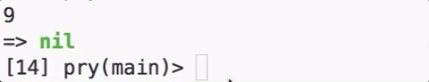
Рис. Пример анимации https://goo.gl/hpk49x
Задание: добавьте больше условий в игру “Однорукий бандит”, используйте свое воображение.
Задание: (если вы используете MacOS) вместо цифр в консоли используйте эмодзи. Пусть каждой цифре соответствует определенная картинка. Вы можете найти эмодзи на сайте https://emojipedia.org/.
Массив (array) - это просто какой-то набор данных. Например, массив имен жильцов, проживающих в подъезде. Или массив чисел, где каждое число может иметь какое-то значение (например, зарплата сотрудника). Или массив объектов - работники предприятия, где у каждого работника может быть указана зарплата, возраст, имя.
Причем, в руби данные в массиве не обязательно должны быть одного типа. Т.е. массив это такая корзина, куда мы можем запихать яблоки, груши, какие-то цифровые записи, и парочку пароходов. Но обычно массивы однородны, т.е. все item’ы (предметы, элементы) имеют одинаковый тип.
Возникает вопрос - а зачем нам использовать массивы? Зачем нам может потребоваться помещать что-то в массив? Ответ довольно простой - массивы удобны тем, что они представляют какой-то набор данных и с этими данными можно производить какие-то действия. Допустим, у нас есть массив посещенных городов:
```
arr = ['Сан-Франциско', 'Москва', 'Лондон', 'Нью-Йорк']
```
Мы объявили массив, одновременно поместив в него 4 элемента типа String. Руби знает, что это массив, потому что мы использовали квадратные скобки для его объявления. С этим массивом мы можем проделать большое количество различных полезных операций. Например, получить количество элементов (посещенных городов):
```
$ irb
...
> arr.size
=> 4
```
Или отсортировать массив в алфавитном порядке:
```
$ irb
...
> arr.sort
=> ["Лондон", "Москва", "Нью-Йорк", "Сан-Франциско"]
```
Можем сделать итерацию (проход) по каждому элементу массива:
```
arr = ['Сан-Франциско', 'Москва', 'Лондон', 'Нью-Йорк']
arr.each do |word|
puts "В слове #{word} #{word.size} букв"
end
```
Результат работы программы:
```
В слове Сан-Франциско 13 букв
В слове Москва 6 букв
В слове Лондон 6 букв
В слове Нью-Йорк 8 букв
```
Конечно, ничто не мешает нам объявить пустой массив:
```
arr = []
```
Но зачем он нужен? Затем же, зачем нужна пустая корзина - что-нибудь туда положить. Положить объект (все в руби - объект) в массив можно несколькими способами, обычно используется два основных:
`arr.push(123)` - метод push также реализован в языке JavaScript, поэтому многие веб-программисты предпочитают использовать его
`arr << 123` - с помощью “двойной стрелки”, которая как бы говорит “положить туда”
Например, простейшая программа “записная книжка” могла бы выглядеть так:
```
arr = []
loop do
print 'Введите имя и телефон человека (Enter для окончания ввода): '
entry = gets.chomp
break if entry.empty?
arr << entry
end
puts 'Ваша записная книжка:'
arr.each do |element|
puts element
end
```
Результат работы программы:
```
Введите имя и телефон человека (Enter для окончания ввода): Геннадий 12345
Введите имя и телефон человека (Enter для окончания ввода): Мама (555) 111-22-33
Введите имя и телефон человека (Enter для окончания ввода): Любимая (555) 12345
Введите имя и телефон человека (Enter для окончания ввода): Любимая 2 (555) 98765
Введите имя и телефон человека (Enter для окончания ввода):
Ваша записная книжка:
Геннадий 12345
Мама (555) 111-22-33
Любимая (555) 12345
Любимая 2 (555) 98765
```
Конечно, наша записная книжка пока имеет минимальный функционал. Когда программа завершается, данные не сохраняются на диск. Нет поиска по имени и номеру телефона. Но зато мы уже умеем кое-что делать с массивами. Мы можем отсортировать записи и поиск в записной книжке будет удобнее!
Массив представлен типом Array https://ruby-doc.org/core-2.2.0/Array.html - и в этом типе реализован метод each (каждый). Вы уже познакомились с этим методом, когда для каждого элемента массива мы выполняли какое-то действие. Технически метод “each” принимает блок. Как уже было сказано ранее, мы можем передать блок в любой метод, дальнейшее поведение программы зависит от того, что “под капотом” у этого метода.
Так вот, метод each запускает то, что внутри блока для каждого элемента массива. Другими словами, маленькую подпрограмму для каждого элемента (element, item):
```
arr.each do |item|
# внутри блока идет подпрограмма
# может занимать несколько строк
end
```
Или в одну строку:
```
arr.each { |item| ...или одну строку... }
```
В блок последовательно передается параметр - очередной элемент массива. Т.е. то, что вы написали внутри “each” между “do” и “end” это и есть блок. Таким образом в руби реализован обход массива (иногда говорят “итерация массива”, “итерация через массив”, “array iteration”, “iteration over array”, реже - “array traversal”).
Имя параметра мы можем задать любое. В примере из предыдущей главы мы задавали имя “word”, когда считали количество букв в слове. В записной книжке у нас был “element”. Мы можем указать любое имя, желательно только чтобы оно было понятно программисту. Работа each (и любого другого метода, который работает с блоками) похожа на запуск вашего собственного метода:
```
def my_method(word)
puts "В слове #{word} #{word.size} букв"
end
```
Только с блоком это выглядит немного иначе:
```
arr.each do |word|
puts "В слове #{word} #{word.size} букв"
end
```
Жаль, что в руби нельзя передать название метода для запуска:
```
arr.each my_method
```
Было бы более понятно. Примечание: на самом деле можно записать эту конструкцию похожим образом, но 1) не совсем так 2) с ограничениями 3) никто так все равно не делает.
Метод “each” реализован также в некоторых других типах. Обход чего-либо в общем и целом является довольно популярной операцией в программировании, поэтому “each” можно увидеть даже там, где его, казалось бы, быть не может. Вариация “each” для типа String:
```
$ irb
> 'hello'.each_char { |x| puts x }
h
e
l
l
o
```
Метод “each” для типа Range:
```
(1001..1005).each do |x|
puts "Я робот #{x}"
end
```
Результат:
```
Я робот 1001
Я робот 1002
Я робот 1003
Я робот 1004
Я робот 1005
```
Мы уже попробовали инициализировать массив с помощью такой конструкции:
```
arr = []
```
Если мы предварительно хотим что-то поместить в массив, то конструкция выглядит немного иначе:
```
arr = ['one', 'two', 'three']
```
Можно также получить размер массива с помощью “arr.size”. Обратите внимание, что названия методов в руби повторяются. У класса String есть метод size, который возвращает длину строки, а у массива метод size возвращает размер массива, т.е. количество элементов. У класса String метод “each_char” используется для итерации по каждому символу в строке, и у массива метод “each” используется для итерации по каждому элементу. Другими словами, часто работает принцип наименьшего сюрприза и о некоторых методах можно догадаться. В будущем, когда нам встретятся новые типы, попробуйте догадаться о том, какое значение может возвращать метод “size”.
К сожалению или к счастью, инициализировать массив в руби можно разными способами, которые являются совершенно идентичными:
```
arr = []
```
Или альтернативная запись:
```
arr = Array.new
```
На наш взгляд это недоработка языка, ведь начинающему придется знакомиться сразу с двумя идентичными конструкциями, но не бывает единого мнения! Кто-то считает что это правильно, кто-то нет, и это абсолютно нормально. У вас, как у начинающего, может быть свое собственное мнение.
Преимущество полной записи в том, что методу new (на самом деле это метод initialize, но мы поговорим об этом позже) можно передать параметр - размер массива:
```
$
irb
> arr = Array.new(10)
=> [nil, nil, nil, nil, nil, nil, nil, nil, nil, nil]
```
По-умолчанию он заполняются пустым значением (nil). Но мы также можем инициализировать массив каким-либо значением. Представим, что в компьютерной игре ноль представляет пустое место, а единица - одного солдата. Мы хотим создать взвод солдат, мы можем сделать это с помощью следующей конструкции (попробуйте самостоятельно в REPL):
```
Array.new(10, 1)
```
Конструкция создаст массив размером 10, где каждый элемент будет равен единице:
```
[1, 1, 1, 1, 1, 1, 1, 1, 1, 1]
```
До сих пор мы рассматривали итерацию по массиву. Но давайте посмотрим, как мы можем обратиться к определенному элементу массива. Обратиться, т.е. получить доступ - для чтения или записи - можно с помощью индекса. Индекс довольно хитрая штука, но в то же время очень простая. Это порядковый номер минус один, элементы массива считаются, начиная с нулевого, а не с первого. Т.е. если мы хотим обратиться к пятому элементу, нам нужен четвертый индекс. Попробуем создать массив строк на пять элементов в REPL:
```
> arr = %w(one two three four five)
=> ["one", "two", "three", "four", "five"]
```
Попробуем получить размер:
```
> arr.size
=> 5
```
Размер массива - 5. Т.е. в массиве пять элементов. Попробуем получить пятый элемент. Для того, чтобы его получить, нужно использовать четвертый индекс:
```
> arr[4]
=> "five"
```
Другими словами:
`arr[0]` вернет “one”
`arr[1]` вернет “two”
`arr[2]` вернет “three”
`arr[3]` вернет “four”
`arr[4]` вернет “five”
Разумеется, когда мы умеем вычислять это выражение, мы можем его использовать совместно с другими функциями:
```
puts arr[4]
```
Передавать в наш собственный метод:
```
my_own_method(arr[4])
```
И так далее. Т.е. делать все то же самое, что мы уже умеем делать с переменной. Например, можно присвоить какому-нибудь элементу массива другое значение:
```
arr[1] = 'двундель'
```
Например, программа:
```
arr = %w(one two three four five)
arr[1] = 'двундель'
arr.each do |word|
puts word
end
```
Выведет на экран:
```
one
двундель
three
four
five
```
Мы могли бы записать эту программу иначе, это не было бы ошибкой (для небольшого числа элементов):
```
arr = %w(one two three four five)
arr[1] = 'двундель'
puts arr[0]
puts arr[1]
puts arr[2]
puts arr[3]
puts arr[4]
```
Для закрепления материала давайте напишем простейшую игру “битва роботов”. Возьмем 20 роботов и разделим их на 2 команды, в каждой команде по 10. Каждую команду будет представлять отдельный массив размером 10. Ячейка массива может принимать два значения:
Ноль - когда робот уничтожен
Единица - когда робот еще жив
Объявим два массива. Единица говорит о том, что мы объявляем массивы с живыми роботами:
```
arr1 = Array.new(10, 1)
arr2 = Array.new(10, 1)
```
Каждые команды будут стрелять по-очереди. Определимся с термином “стрелять”, что это значит? Если ноль в массиве это уничтоженный робот, а единица - живой, то стрелять значит “изменить значение с единицы на ноль для определенной ячейки массива”. Но как мы будем определять какую ячейку менять? Тут есть два варианта:
Менять ячейку подряд. Т.е. сначала уничтожаем первого робота во второй команде (первая команда делает ход), потом первого робота в первой и т.д. Побеждает всегда тот, кто первый начал. Это не интересно.
Намного интереснее выбирать индекс от 0 до 9 каждый раз случайно. Случайность не гарантирует того, что индекс не повторится. Поэтому одна команда может “стрельнуть” по одному и тому же месту. Например, через пять ходов вторая команда бьет в пятую ячейку, а выстрел по ней уже был до этого. Следовательно, выстрел не попал в цель, ячейка уже равна нулю, и количество убитых роботов не изменилось. Т.е. результат сражения заранее не гарантирован и зависит от везения.
Выберем второй вариант. Определять случайный индекс от 0 до 9 мы уже умеем:
```
i = rand(0..9)
```
Далее осталось только обратиться к ячейке массива и, если она равна единице, то присвоить ей значение ноль. А если ячейка уже равна нулю, значит выстрел по этому месту уже был:
```
if arr[i] == 1
arr[i] = 0
puts "Робот по индексу #{i} убит"
else
puts 'Промазали!'
end
```
Выигрывает та команда, в которой остался хотя бы один робот. Также было бы полезно узнать, сколько именно роботов осталось. Как же нам это сделать? Представим, что у нас есть массив:
```
arr = [1, 0, 1, 0, 1, 1]
```
Как определить количество элементов, равных единице? Мы можем использовать уже знакомый нам метод “each”, делать сравнение и записывать результат в переменную:
```
arr = [1, 0, 1, 0, 1, 1]
x = 0
arr.each do |element|
if element == 1
x += 1
end
end
puts "В массиве #{x} единиц"
```
Программа работает, но есть способ проще. Метод “count” класса Array (обязательно посмотрите документацию) делает то же самое, но выглядит намного проще:
```
arr = [1, 0, 1, 0, 1, 1]
x = arr.count do |x|
x == 1
end
puts "В массиве #{x} единиц"
```
Или более короткий способ записи:
```
arr = [1, 0, 1, 0, 1, 1]
x = arr.count { |x| x == 1 }
puts "В массиве #{x} единиц"
```
На данном этапе у нас есть все, что нужно. Две команды роботов, стрелять будут по очереди, индекс выбирается случайно, проигрывает тот, у кого не осталось ни одного робота. Можно писать эту игру. Т.к. игра не требует ввода пользователя, мы будем на нее только смотреть.
Задание: напишите эту игру самостоятельно. Сравните свой результат с программой ниже. Внимание: есть вероятность, что у вас что-то не получится, в данном случае неважно, сможете ли вы написать эту программу или нет, важен процесс и работа над ошибками.
Код программы:
```
###############################
# ОБЪЯВЛЯЕМ МАССИВЫ
###############################
# массив для первой команды
@arr1 = Array.new(10, 1)
# массив для второй команды
@arr2 = Array.new(10, 1)
###############################
# АТАКА
###############################
# Метод принимает массив для атаки
def attack(arr)
sleep 1 # добавим sleep для красоты
i = rand(0..9)
if arr[i] == 1
arr[i] = 0
puts "Робот по индексу #{i} уничтожен"
else
puts "Промазали по индексу #{i}"
end
sleep 1 # еще один sleep для красоты вывода
end
###############################
# ПРОВЕРКА ПОБЕДЫ
###############################
def victory?
robots_left1 = @arr1.count { |x| x == 1 }
robots_left2 = @arr2.count { |x| x == 1 }
if robots_left1 == 0
puts "Команда 2 победила, в команде осталось #{robots_left2} роботов"
return true
end
if robots_left2 == 0
puts "Команда 1 победила, в команде осталось #{robots_left1} роботов"
return false
end
false
end
###############################
# СТАТИСТИКА
###############################
def stats
# количество живых роботов для первой и второй команды
cnt1 = @arr1.count { |x| x == 1 }
cnt2 = @arr2.count { |x| x == 1 }
puts "1-ая команда: #{cnt1} роботов в строю"
puts "2-ая команда: #{cnt2} роботов в строю"
end
###############################
# ГЛАВНЫЙ ЦИКЛ
###############################
loop do
puts 'Первая команда наносит удар...'
attack(@arr2)
exit if victory?
stats
sleep 3
puts # пустая строка
puts 'Вторая команда наносит удар...'
attack(@arr1)
exit if victory?
stats
sleep 3
puts # пустая строка
end
```
Результат работы программы:
```
Первая команда наносит удар...
Робот по индексу 2 уничтожен
1-ая команда: 10 роботов в строю
2-ая команда: 9 роботов в строю
Вторая команда наносит удар...
Робот по индексу 8 уничтожен
1-ая команда: 9 роботов в строю
2-ая команда: 9 роботов в строю
…
Первая команда наносит удар...
Робот по индексу 7 уничтожен
1-ая команда: 1 роботов в строю
2-ая команда: 2 роботов в строю
Вторая команда наносит удар...
Робот по индексу 2 уничтожен
Команда 2 победила, в команде осталось 2 роботов
```
Задание: чтобы статистика была более наглядной, добавьте в программу выше вывод двух массивов.
Задание: вместо бинарного значения ноль или единица пусть каждый робот имеет уровень жизни, который выражается целым числом от 1 до 100 (в самом начале это значение должно быть установлено в 100). Пусть каждая атака отнимает случайную величину жизни у робота от 30 до 100. Если уровень жизни ниже или равен нулю, робот считается уничтоженным.
Массивы массивов (двумерные массивы)
При объявлении массива мы можем указать любой тип. Например, String:
```
$ irb
> Array.new(10, 'hello')
=> ["hello", "hello", "hello", "hello", "hello", "hello", "hello", "hello", "hello", "hello"]
```
Или Boolean (несуществующий тип, созданный нами намеренно. Этот тип представлен двумя типами TrueClass и FalseClass):
```
$ irb
> Array.new(10, true)
=> [true, true, true, true, true, true, true, true, true, true]
```
Или Integer:
```
$ irb
> Array.new(10, 123)
=> [123, 123, 123, 123, 123, 123, 123, 123, 123, 123]
```
Другими словами, элемент массива это любой объект. Если элемент массива любой объект и сам по себе массив это объект, значит мы можем объявить массив массивов:
```
$ irb
> Array.new(10, [])
=> [[], [], [], [], [], [], [], [], [], []]
```
Если мы обратимся по какому-либо индексу, то мы получим массив внутри массива. Например, индекс 4 выбирает пятый по счету элемент. Давайте попробуем обратиться к элементу по индексу 4:
```
$ irb
> arr = Array.new(10, [])
=> [[], [], [], [], [], [], [], [], [], []]
> element = arr[4]
=> []
> element.class
=> Array
```
Мы видим, что этот элемент - массив, тип Array. Массив этот пустой. Когда мы ввели `element = arr[4]`, REPL посчитал нам это выражение и ответил `[]` (к слову, если бы это была последняя строка метода, то метод вернул бы `[]`). Что мы можем сделать с пустым массивом? Добавить туда что-нибудь. Давайте это сделаем:
```
element.push('something')
```
Вот такой результат мы ожидаем в переменной `arr` - массив массивов, где четвертый по индексу (и пятый по порядковому номеру) элемент что-то содержит наше значение:
```
[[], [], [], [], ['something'], [], [], [], [], []]
```
Проверим в REPL:
```
> arr
=> [["something"], ["something"], ["something"], ["something"], ["something"], ["something"], ["something"], ["something"], ["something"], ["something"]]
```
Ой-ой-ой! Что-то пошло не так! Посмотрим на текст программы целиком, что же в ней неправильно:
```
arr = Array.new(10, [])
element = arr[4]
element.push('something')
puts arr.inspect # способ вывести информацию на экран так же, как ее выводит REPL
```
Где ошибка? Слово знатокам, время пошло! Это, кстати, может быть хитрым вопросом на интервью. Вопрос не самый простой и подразумевает знакомство и понимание принципов работы языка руби, что такое объект, что такое ссылка. Помните, мы с вами немного говорили про ссылки? Когда есть подъезд и каждый звонок ведет в собственную квартиру? Мы можем повторить такой же фокус с классом String:
```
arr = Array.new(10, 'something')
element = arr[4]
element.upcase!
puts arr.inspect # способ вывести информацию на экран также, как ее выводит REPL
```
Ожидаемый результат:
```
["something", "something", "something", "something", "SOMETHING", "something", "something", "something", "something", "something"]
```
Реальный результат:
```
["SOMETHING", "SOMETHING", "SOMETHING", "SOMETHING", "SOMETHING", "SOMETHING", "SOMETHING", "SOMETHING", "SOMETHING", "SOMETHING"]
```
Что же тут происходит? А дело в том, что при инициализации массива мы передаем ссылку (reference) на один объект. Т.к. мы передаем параметр один раз, то и объект в массиве всегда “размножается по ссылке”. Т.е. на самом деле при такой инициализации массива, ячейки содержат не сам объект, а ссылку на объект. Чтобы этого не происходило, нужно чтобы ссылки на объекты были разные. При этом, конечно, и сами объекты будут разные - они будут располагаться в разных областях памяти, и если мы что-то изменим, то это не изменит состояние (state) других объектов.
Если проводить аналогию с подъездом и жильцами дальше, то можно представить следующее. Мы принесли большую распределительную коробку (массив) и хотим поместить туда 10 звонков. Звонки поместили, но все провода идут к одной квартире. Поэтому, когда мы звоним в любой звонок, нам отвечают одни и те же жильцы. Нам просто нужны ссылки на разные квартиры и тогда все будет работать. Поэтому конструкция с массивом массивов неправильная, никогда так не делайте:
```
arr = Array.new(10, [])
```
Просто потому, что массив внутри массива предназначен для того, чтобы меняться. Зачем нам пустой массив? Ведь мы захотим когда-нибудь туда что-то записать. В случае со строками все немного проще, такая конструкция допустима:
```
arr = Array.new(10, 'something')
```
Но при одной оговорке - что мы не будем использовать опасные (danger) методы. Т.е. методы класса String с восклицательным знаком на конце, которые меняют состояние объекта. Теперь вы понимаете почему они опасные? В случае с числами все еще проще:
```
arr = Array.new(10, 123)
```
В классе Integer нет опасных методов, поэтому, даже если у вас есть доступ к объекту, вы не сможете его изменить (но сможете заменить). Если вы напишите `arr[4] = 124`, то вы замените ссылку в массиве на новый объект, который будет представлять число “124”. Ссылки на один и тот же объект “123” в других частях массива сохранятся. Т.е. мы и получим то, что ожидаем:
```
$ irb
> arr = Array.new(10, 123)
=> [123, 123, 123, 123, 123, 123, 123, 123, 123, 123]
> arr[4] = 124
=> 124
> arr
=> [123, 123, 123, 123, 124, 123, 123, 123, 123, 123]
```
Ничего страшного, если эти детали вам покажутся сложными. На практике редко приходится работать с очень сложными вещами, обычно требуется понимание этих принципов, способность разобраться или найти решение в Интернет. Некоторым опытным программистам это высказывание может не понравиться, но авторы книги рекомендуют не обращать внимание на чье-либо мнение, скорее находить удаленную работу и учиться уже на практике. Опыт учеников “руби школы” показывает, что этот путь верный.
Но как же нам все-таки объявить двумерный массив? Представим, что нам нужно сделать игру “Морской бой”, где каждую строку на поле битвы представляет отдельный массив (ну а столбец - это индекс в этом отдельном массиве). Если бы у нас была одна строка на 10 клеток, то можно было бы обойтись одним массивом, но нам нужно 10 строк по 10 клеток. Как объявить такой массив, чтобы каждый элемент массива представлял собой ссылку на другой, совершенно отдельный элемент?
Для объявления двумерного массива в языке C# используется довольно простая конструкция:
```
var arr = new int[10, 10];
```
Для типа “string”:
```
var arr = new string[10, 10];
arr[9, 9] = "something";
```
Но в Ruby и JavaScript это, на удивление, делается немного сложнее. Правильный синтаксис для объявления двумерного массива 10 на 10 в руби (массив будет заполнен nil - объектом, представляющим пустое значение):
```
arr = Array.new(10) { Array.new(10) }
```
Вау! Но почему так? Давайте разберемся. Метод “new” (на самом деле это метод “initialize”, но это пока не важно) принимает один параметр и один блок. Первый параметр - фиксированный, это количество элементов массива. А второй параметр - блок, который надо исполнить для каждого элемента. Результат выполнения этого блока и будет новым элементом. Блок будет запускаться 10 раз (в нашем случае). Ничто не мешает написать нам блок таким образом:
```
arr = Array.new(10) { 'something' }
```
Результат будет аналогичен уже известному нам коду:
```
arr = Array.new(10, 'something')
```
В REPL и тот, и другой вариант выглядят одинаково:
```
$ irb
> arr1 = Array.new(10) { 'something' }
=> ["something", "something", "something", "something", "something", "something", "something", "something", "something", "something"]
> arr2 = Array.new(10, 'something')
=> ["something", "something", "something", "something", "something", "something", "something", "something", "something", "something"]
```
Но есть одна существенная разница. Первая конструкция при инициализации вызывает блок. В результате вызова блока каждый раз создается новое значение “something” в новой области памяти. А во втором случае (когда мы создаем `arr2`) берется “something”, который мы передали через параметр. Он создается в области памяти перед тем, как параметр будет передан в метод new, и используется для всех ячеек массива, всегда один и тот же.
Это очень просто доказать. Для людей, недостаточно знакомых с языком руби, это кажется волшебным трюком. Модифицируем элемент по индексу 0 в первом массиве, где каждый элемент это всегда ссылка на отдельную строку, для каждого элемента массива ссылка разная.
```
arr1[0].upcase!
```
Выведем результат вычисления `arr1` на экран:
```
> arr1
=> ["SOMETHING", "something", "something", "something", "something", "something", "something", "something", "something", "something"]
```
Изменилось только первое значение, что доказывает, что ссылка везде разная. Если же проделать точно такой же трюк со вторым массивом, то поменяется массив целиком, потому что ссылка на элемент во всех ячейках массива одинаковая:
```
> arr2[0].upcase!
=> "SOMETHING"
> arr2
=> ["SOMETHING", "SOMETHING", "SOMETHING", "SOMETHING", "SOMETHING", "SOMETHING", "SOMETHING", "SOMETHING", "SOMETHING", "SOMETHING"]
```
Если бы мы перед “upcase!” переинициализировали какой-либо элемент, то этот элемент не был бы затронут:
```
> arr2[4] = 'something'
=> "something"
> arr2[0].upcase!
=> "SOMETHING"
> arr2
=> ["SOMETHING", "SOMETHING", "SOMETHING", "SOMETHING", "something", "SOMETHING", "SOMETHING", "SOMETHING", "SOMETHING", "SOMETHING"]
```
Обратите внимание, что в примере выше элемент с индексом 4 не был затронут операцией “upcase!”, т.к. это совершенно другой объект, хотя при выводе на экран нам кажется что все одинаково. Поэтому правильная инициализация массива массивов выглядит так:
```
arr = Array.new(10) { Array.new(10) }
```
Если нужно заполнить массив значением, отличным от nil, передаем его во второй конструктор:
```
arr = Array.new(10) { Array.new(10, 123) }
```
Заполнить двумерный массив значением “0”:
```
arr = Array.new(10) { Array.new(10, 0) }
```
Создать массив в 4 строки и 10 столбцов и заполнить его значением “0”:
```
arr = Array.new(4) { Array.new(10, 0) }
```
Создать массив в 2 строки и 3 столбца и заполнить каждую строку одинаковым объектом “something”:
```
arr = Array.new(2) { Array.new(3, 'something') }
```
Создать массив в 3 строки и 2 столбца и заполнить каждую строку одинаковым объектом “something”:
```
arr = Array.new(3) { Array.new(2, 'something') }
```
Надеемся, что с созданием двумерных массивов проблем не будет. Когда у нас есть понимание того, что такое массив, что такое двумерный массив, есть смысл остановиться на способе записи двумерного массива с какими либо pre-defined (предопределенными) значениями. Одномерный массив записать просто, это массив каких-либо объектов:
```
arr = [1, 2, 3]
```
Или:
```
arr = ['one', 'two', 'three']
```
Т.е. массив содержит объекты. Двумерный массив это тот же самый массив, который содержит объекты, с той лишь разницей, что все эти объекты типа Array, а не Integer или String. Чтобы создать массив из трех строк, нам нужно написать:
```
arr = [..., ..., ...]
```
Но если необходимо создать массив пустых массивов, вместо троеточия нужно просто написать определение пустого массива:
```
arr = [[], [], []]
```
Давайте определим массив 3 на 3 для игры в крестики нолики, где ноль это нолик, единица - крестик, а пустая клетка это nil. Для такой матрицы:
|
O |
O |
X |
|
|
O |
|
|
X |
|
X |
Массив будет выглядеть следующим образом:
```
arr = [[0, 0, 1], [nil, 0, nil], [1, nil, 1]]
```
Запись в одну строку можно превратить в более читаемый вид с сохранением функциональности:
```
arr = [
[0, 0, 1],
[nil, 0, nil],
[1, nil, 1]
]
```
При желании можно добавить сколько угодно пробелов.
Задание: если вы не попробовали в REPL все написанное выше, то перечитайте и попробуйте.
Задание: Создайте массив в 5 строк и 4 столбца, заполните каждую строку случайным значением от 1 до 5 (только одно случайное значение для каждой строки). Пример для массива 2 на 3:
```
[
[2, 2, 2],
[5, 5, 5]
]
```
Задание: создайте массив в 4 строки и 5 столбцов, заполните каждую строку случайным значением от 1 до 5 (только одно случайное значение для каждой строки).
Задание: создайте массив 5 на 4 и заполните весь массив абсолютно случайными значениями от 0 до 9.
Все наши операции в REPL до текущего момента были не самыми сложными. Однако, в случае с двумерными массивами мы уже могли наблюдать потерю наглядности. Например, создание массива для игры в “Морской бой” выглядит следующим образом:
```
$ irb
> Array.new(10) { Array.new(10) }
=> [[nil, nil, nil, nil, nil, nil, nil, nil, nil, nil], [nil, nil, nil, nil, nil, nil, nil, nil, nil, nil], [nil, nil, nil, nil, nil, nil, nil, nil, nil, nil], [nil, nil, nil, nil, nil, nil, nil, nil, nil, nil], [nil, nil, nil, nil, nil, nil, nil, nil, nil, nil], [nil, nil, nil, nil, nil, nil, nil, nil, nil, nil], [nil, nil, nil, nil, nil, nil, nil, nil, nil, nil], [nil, nil, nil, nil, nil, nil, nil, nil, nil, nil], [nil, nil, nil, nil, nil, nil, nil, nil, nil, nil], [nil, nil, nil, nil, nil, nil, nil, nil, nil, nil]]
```
Синтаксис верный, но как понять где пятая строка и второй столбец? Приходится вглядываться в “простыню” этих значений. Разработчики языка руби знали, что нельзя написать инструмент, который понравится всем. И вместо того, чтобы завязывать разработчика на фиксированный набор инструментов, было решено добавить возможность расширять экосистему языка таким образом, чтобы каждый человек мог написать (или дописать) что-то свое.
Разработчики со всего мира воспользовались этой возможностью и для языка руби было создано множество gem’ов (gem, читается как “джем” - драгоценный камень, жемчужина, что перекликается с названием “руби” - рубин). В других языках gem’ы называются библиотеками (library) или пакетами (packets). Например, альтернатива команде “gem” в Node.js команда “npm” - сокращение от Node Packet Manager (менеджер пакетов Node).
Слово “gem” звучит поинтереснее, чем просто “пакет”. Но смысл один и тот же - просто какая-то программа, или программный код, который очень просто скачать или использовать, если знаешь имя gem’a. Для установки gem’а используется команда “gem”, которая является частью пакета языка руби (также как и “irb” и “ruby”).
Давайте попробуем установить какой-нибудь gem:
```
$ gem install cowsay
```
“Cowsay” это “cow say” (“корова скажи”). Это не очень популярный gem, который был создан обычным энтузиастом. Этот gem добавляет в ваш shell команду “cowsay”, которая принимает аргумент и выводит на экран корову, которая что-то говорит:
```
$ cowsay 'Привет, Вася!'
_______________
| Привет, Вася! |
---------------
\ ^__^
\ (oo)\_______
(__)\ )\/\
||----w |
|| ||
```
Существует огромное количество gem’ов на все случаи жизни. К слову, этим и славится язык руби (а также JavaScript). Для любой задачи, которая придет вам в голову наверняка существует какой-то gem (или пакет для JavaScript).
Не обязательно gem должен добавлять какую-то команду. Часто бывает так, что gem предоставляет только определенный код, который вы можете использовать в своей программе, применив ключевое слово `require` (с параметром - обычно именем gem’а).
Для дальнейшего обучения нам потребуется установить наш первый (уже второй) gem, который является довольно популярным и практически стал стандартом в экосистеме руби (такое часто случается, независимые разработчики создают инструмент, который всем нравится и этот инструмент становится стандартом). Название gem’а, который мы будем устанавливать - “pry” (читается как “прай”). Страница gem’a на GitHub: https://github.com/pry/pry (зайдите, чтобы взглянуть на документацию). Что же такое pry?
Вот что говорит нам GitHub: “An IRB alternative and runtime developer console”. Другими словами, альтернатива уже известному нам REPL - IRB. Если раньше мы вводили команду “irb”, то теперь будем вводить команду “pry”. Давайте же поскорее установим этот gem и посмотрим, чем он лучше:
```
$ gem install pry
...
$
pry
>
```
Во-первых, если мы введем определение нашего массива в pry, то значения будут подкрашены (чего нет в “irb”):
```
$
pry
> arr = [[0, 0, 1], [nil, 0, nil], [1, nil, 1]]
...
```
Цифры подкрашиваются синим цветом, а nil - голубым. Казалось бы - ну и что? Это кажется незаметной деталью, но при работе с большим объемом данных визуальное облегчение информации - большое подспорье! Представьте количество дней, которое вы в будущем проведете за компьютером и представьте, что теперь они будут немного лучше.
Второй важный момент в pry - конфигурация. Причем, получается довольно любопытно. Gem это, грубо говоря, плагин для языка (или экосистемы - как будет угодно) руби. Но и для “плагина” pry существует свое множество плагинов, один из которых мы собираемся установить. Это плагин для “улучшенного” (более понятного) вывода информации на экран.
Gem называется “awesome print”. Gem содержит в себе библиотеку кода, плагин для pry, плагин для irb (нам не потребуется, т.к. в будущем будем использовать только pry). Страница gem’a на GitHub: https://github.com/awesome-print/awesome_print. Пройдите по ссылке, чтобы ознакомиться с документацией и понять, что делает awesome print. Если ничего непонятно, то ничего страшного, сейчас разберемся. Давайте установим awesome print:
```
gem install awesome_print
```
Сам по себе gem не создает никаких команд. Поэтому давайте подключим его к pry. Как это сделать описано в документации. Мы сделаем это вместе:
```
$ cat > ~/.pryrc
require 'awesome_print'
AwesomePrint.pry!
^D
```
Т.е. запускаем в терминале команду “cat”, которая считывает из стандартного ввода следующие две строки (мы должны их ввести с клавиатуры). В конце мы нажимаем Ctrl+D - комбинацию, которая говорит о том, что ввод закончен (в листинге выше это обозначается как “^D”). Возникает вопрос - а откуда взялись эти две строки и что они означают? Эти две строки взялись из документации, а именно из раздела «PRY Integration» readme репозитория гитхаба. Строки означают что-то, но на самом деле пока это неважно, читайте их как “подключение awesome print к pry”.
Гем “awesome_print” подключается к “pry” только один раз на вашем компьютере.
Теперь запустим pry и введем массив, который мы использовали для крестиков-ноликов:
```
$ pry
> arr = [[0, 0, 1], [nil, 0, nil], [1, nil, 1]]
[
[0] [
[0] 0,
[1] 0,
[2] 1
],
[1] [
[0] nil,
[1] 0,
[2] nil
],
[2] [
[0] 1,
[1] nil,
[2] 1
]
]
```
Должно получиться вот так:
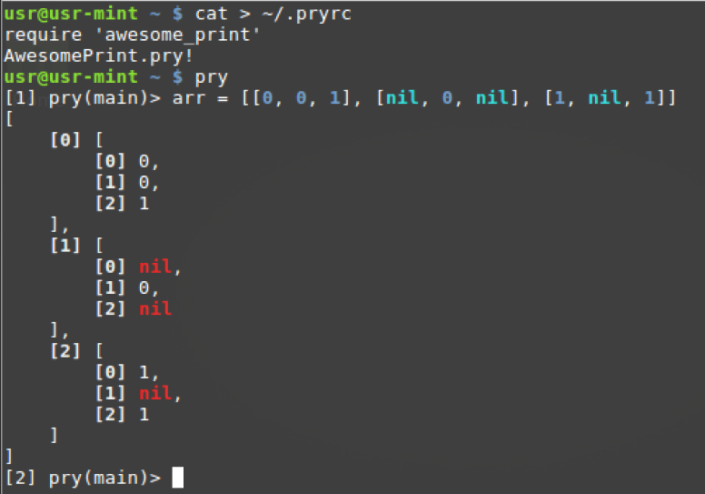
Вау! Вывод не только лучше, но и раскрашен в разные цвета! Наша связка “pry” с “awesome print” подкрашивает вывод, улучшает визуальную структуру и даже показывает нам индексы, чтобы мы легче могли добраться до нужного элемента! Сравните этот вывод со стандартным выводом IRB:
```
$ irb
> arr = [[0, 0, 1], [nil, 0, nil], [1, nil, 1]]
=> [[0, 0, 1], [nil, 0, nil], [1, nil, 1]]
```
Примечание: одна из основных функциональностей “pry” это отладка программ. Мы займемся этим позже.
Задание: попробуйте в “pry” вывести поле 10 на 10 для игры в “Морской бой”.
Существует небольшая хитрость для обращения к массиву массивов (также говорят “к двумерному массиву”, к “2D array”). Хитрость заключается в том, что сначала нужно обратиться к строке (row), а потом к столбцу (column). Способ обращения к обычному массиву мы уже знаем. Для вывода значения используется следующая конструкция:
```
puts arr[4]
```
Для присваивания мы просто используем оператор `=`:
```
arr[4] = 123
```
Где 4 - это индекс массива. В случае с двумерным массивом обычно используются двойные квадратные скобки. Например, следующий код обновит в 5-ой строке 9-ый столбец:
```
arr[4][8] = 123
```
Такой способ обращения может показаться непривычным для обычного человека, потому что человек привык сначала указывать столбец, потом строку; сначала X, потом Y. Но тем не менее, для доступа к массиву нам нужно сначала указывать индекс строки, а потом уже индекс столбца. Причем, ничто не мешает записать нам конструкцию присваивания иначе, она будет намного понятнее (правда, длиннее):
```
row = arr[4]
row[8] = 123
```
А вот так можно вывести значение девятого столбца в пятой строке (альтернативный способ):
```
row = arr[4] # на этом этапе row уже будет одномерный (обычный) массив
column = row[8]
puts column
```
Конечно, альтернативным способом редко кто пользуется, ведь общепринятый `arr[4][8]` проще и короче.
В зависимости от типа задачи и от приложения с которым вы работаете, может использоваться разная терминология, обозначающая строку и столбец. Рассмотрим наиболее часто встречающиеся:
`row` - строка, `column` - столбец. Обращение к массиву: `arr[row][column]`.
`y` - строка, `x` - столбец. Обращение к массиву: `arr[y][x]`
`j` - строка, `i` - столбец. Обращение к массиву: `arr[j][i]`
Обратите внимание, что название переменной для индекса - `i` (от слова `index`). Если у нас есть более одной переменной для индекса, берется следующая буква в алфавите (`j`, а если массив трехмерный, то `k`). Впрочем, эти правила не являются каким-то стандартом, а всего-лишь наблюдением авторов.
Попробуем создать двумерный массив и обойти (to traverse) его. Это элементарная задача, которая вам может встретиться на интервью: 2D array traversal:
```
arr = [
%w(a b c),
%w(d e f),
%w(g h i)
]
0.upto(2) do |j|
0.upto(2) do |i|
print arr[j][i]
end
end
```
Вывод программы:
```
abcdefghi
```
Вверху мы видим двойной цикл (иногда его называют “вложенный цикл”, “double loop”, если имеют в виду цикл по `i` - то “inner loop”, “внутренний цикл”). Как же он работает? Мы уже знаем, что “цикл j” просто “проходит” по массиву. Он “не знает”, что у нас массив массивов, поэтому это обычная итерация по элементам массива:
```
%w(a b c)
%w(d e f)
%w(g h i)
```
Просто каждый элемент - еще один массив. Поэтому мы имеем право по нему пройти обычным образом, как мы это уже делали. Можно также записать нашу программу немного иначе, помощью “each”:
```
arr = [
%w(a b c),
%w(d e f),
%w(g h i)
]
arr.each do |row|
row.each do |value|
print value
end
end
```
Разумеется, что сам массив можно записать без помощи “%w” (согласитесь, что читаемость этого подхода немного ниже?):
```
arr = [
['a', 'b', 'c'],
['d', 'e', 'f'],
['g', 'h', 'i']
]
```
Задание: обойдите массив выше “вручную”, без помощи циклов, крест-накрест, таким образом, чтобы вывести на экран строку “aeiceg” (подпрограмма займет 6 строк - по 1 строке для каждого элемента).
Задание: создайте 2D массив размером 3 на 3. Каждый элемент будет иметь одинаковое значение (например, “something”). Сделайте так, чтобы каждый элемент массива был защищен от “upcase!”. Например, если мы вызовем `arr[2][2].upcase!`, этот вызов не изменит содержимое других ячеек массива. Проверьте свое задание в pry.
Задание: к вам обратился предприниматель Джон Смит. Джон говорит, что его бизнес специализируется на создании телефонных номеров для рекламы. Они хотят подписать с вами контракт, но прежде хотелось бы убедиться, что вы хороший программист, можете работать с их требованиями, и доставлять качественное программное обеспечение.
Они
говорят: у нас есть номера телефонов с
буквами. Например, для бизнеса по продаже
матрасов существует номер “555-MATRESS”,
который транслируется в “555-628-7377”.
Когда наши клиенты набирают буквенный
номер на клавиатуре телефона (см.картинку
ниже), он транслируется в цифровой.
Напишите программу, которая будет
переводить (транслировать) слово без
дефисов в телефонный номер.
Сигнатура
метода будет следующей:
```
def phone_to_number(phone)
# ваш код тут...
end
puts phone_to_number('555MATRESS') # должно напечатать 5556287377
```
Иллюстрация телефонной клавиатуры:
Существуют также многомерные массивы. Если 2D массив это “массив массивов”, то 3D массив это “массив массивов массивов”. Иногда такие массивы называют “тензор”. Пример трехмерного массива:
```
arr = [
[
%w(a b c),
%w(d e f),
%w(g h i)
],
[
%w(aa bb cc),
%w(dd ee ff),
%w(gg hh ii)
]
]
```
Это массив 2 на 3 на 3: два блока, в каждом блоке 3 строки, в каждой строке 3 столбца.
Размерность (dimension) массива это просто его свойство. Не обязательно знать размерность каждого массива, важно лишь знать как правильно к нему обратиться. Для обращения к элементу “f” нам нужно написать ` `.
На практике многомерные массивы встречаются очень часто, но обычно в таких массивах также присутствует также другая структура данных - хеш (рассматривается далее). В случае с многомерными массивами нам нужно точно знать индексы определенных элементов. Если добавляется строка или столбец где-нибудь вначале, то индексы смещаются. Поэтому на практике доступ по индексу встречается лишь в простых случаях.
Если массив “миксуется” с хешем, то такую структуру обычно называют JSON (JavaScript Object Notation), хотя в руби это название выглядит немного необычно - причем тут JavaScript, ведь это руби! Доступ к значениями хеша осуществляется по ключу (а не по индексу), где ключ обычно какая-нибудь строка.
Задание: попробуйте создать массив, объявленный выше в pry, и обратиться к элементу “ee”.
Задание: посмотрите официальную документацию к классу Array: http://ruby-doc.org/core-2.5.1/Array.html
Наиболее часто встречающиеся методы класса Array
Стоит подробнее остановиться на наиболее часто встречающихся методах класса Array, т.к. эти методы широко используются не только в руби, но и в rails. Даже не имея опыта с фреймворком Ruby on Rails, понимая принципы работы рассмотренных методов для массивов, легко догадаться о том, что делает программа.
Знак вопроса на конце метода означает, что метод будет возвращать значение типа Boolean (true или false). Метод “empty?” используется для того, чтобы убедиться в том, что массив не пустой (или пустой). Если массив пустой (empty), то “empty?” возвращает “true”:
```
$ pry
> [].empty?
=> true
```
Важный момент заключается в том, что объект “nil” не реализует метод “empty?”. Т.е. если вы не уверены, что какой-то метод возвращает массив, необходимо сделать проверку на nil:
```
arr = some_method
if !arr.nil? && !arr.empty?
puts arr.inspect
end
```
Существует одна важная деталь. Т.к. любой руби-программист почти со 100% вероятностью будет работать с rails, нужно знать, что проверка коллекции (в т.ч.массива) в rails выполняется иначе. Т.е. если вы оставите этот синтаксис, то ошибки не будет, просто есть более эффективный способ:
```
if !arr.blank?
puts arr.inspect
end
```
Или используя прямо противоположный метод “present?”:
```
if arr.present?
puts arr.inspect
end
```
Другими словами, когда фреймворка rails нет, используем “empty?”, а когда работаем над rails-приложением, всегда используем “blank?” и “present?”. Эти методы реализованы для многих типов, и при наличии вопросов, в будущем рекомендуется обращаться к этой таблице:
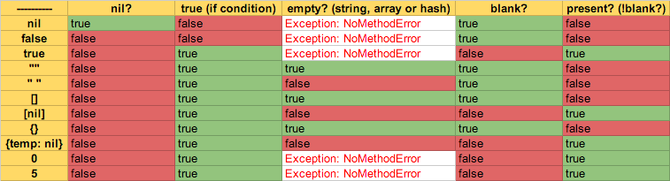
Источник:
https://stackoverflow.com/a/20663389/337085
TODO:
сделать свою таблицу
Таблица выше очень важная, стоит сделать особую заметку в книге. Как видно, методы “blank?” и “present?” совершенно противоположные (последний и предпоследний столбец). А из второго столбца следует, что только nil и false вычисляются в false. Другими словами, все конструкции ниже вычисляются в true и нет необходимости делать проверку (с помощью `==`, если мы хотим получить тип Boolean):
```
if true
# будет выполнено
end
if ''
# будет выполнено
end
if ' '
# будет выполнено
end
if []
# будет выполнено
end
# ...
```
И так далее.
Также из таблицы видно, что метод “empty?” реализован для типов String, Array, Hash.
Методы length и size идентичны и реализованы для классов Array, String, Hash:
```
[11, 22, 33].size # => 3
[11, 22, 33].length # => 3
str = 'something'
str.size # => 9
str.length # => 9
hh = { a: 1, b: 2 }
hh.size # => 2
hh.length # => 2
```
Метод count выполняет ту же функцию, что и length/size, но только для классов Array и Hash (не реализован в String). Однако, метод count может принимать блок, можно использовать его для каких-либо вычислений. Например, посчитать количество нулей в массиве:
```
$ pry
> [0, 0, 1, 1, 0, 0, 1, 0].count { |x| x == 0 }
5
```
Удобно использовать метод count вместе с указателем на функцию. Если метод “zero?” реализован у всех элементов массива, можно записать конструкцию выше иначе:
```
[0, 0, 1, 1, 0, 0, 1, 0].count(&:zero?)
```
Важно заметить, что count с блоком обычно проходит по всему массиву. Если вы используете метод “count” в Rails, необходимо убедиться, чтобы запрос был эффективным (rails и SQL будут рассмотрены во второй части книги).
Задание: с помощью указателя на функцию посчитайте количество четных элементов в массиве [11, 22, 33, 44, 55].
Метод “include?” проверяет массив на наличие определенного элемента и возвращает значение типа Boolean. Например:
```
$ pry
> [1, 2, 3, 5, 8].include?(3)
true
```
Любопытная особенность в том, что “include” переводится на русский как “включать” (в смысле “содержать”), тогда как правильнее было бы написать “includes” - “включает” (с “s” в конце). В языке JavaScript версии ES6 и выше проверка на наличие элемента в массиве реализована как раз с помощью правильного слова “includes”:
```
$ node
> [1, 2, 3, 5, 8].includes(3);
true
```
Добавление элементов в массив реализовано с помощью уже знакомых нам методов “push” и “pop”. Эти методы производят операции с хвостом массива: добавить элемент в конец, извлечь последний. К слову, массив в руби реализует также структуру данных “стек”. Представьте себе “стек” тарелок, когда одна тарелка стоит на другой. Мы кладем одну наверх и берем также сверху.
Но есть операции “unshift” и “shift”, которые делают то же самое, что и “push”, “pop”, но только с началом массива. Нередко у программистов возникает путаница при использовании unshift и shift, но важно помнить (или уметь посмотреть в документации) следующее:
unshift почти то же самое, что и push
shift почти то же самое, что и pop
Полезная метафора тут может быть такая: shift сдвигает элементы и возвращает тот элемент, которому не досталось места.
Выбор элементов по критерию (select)
Допустим, у нас есть список работников, у которых указан возраст. Нам нужно выбрать всех мужчин, которым в следующем году на пенсию. Для простоты предположим, что одного работника представляет какой-либо объект. Т.к. хеши мы еще не проходили, то пусть это будет массив. Первый элемент массива это будет возраст, второй - пол (1 для мужчины, 0 для женщины). Знакомьтесь, мужчина 30 лет:
```
[30, 1]
```
Женщина 25 лет:
```
[25, 0]
```
Таких объектов существует множество (массив объектов, в нашем случае двумерный массив):
```
[ [30, 1], [25, 0], [64, 1], [64, 0], [33, 1] ]
```
Выбираем (select) мужчин в возрасте 64 лет:
```
$ pry
> arr = [ [30, 1], [25, 0], [64, 1], [64, 0], [33, 1] ]
...
>
arr.select { |element| element[0] == 64 && element[1] == 1 }
(выбран 1 элемент)
```
Выбираем всех мужчин:
```
$ pry
> arr = [ [30, 1], [25, 0], [64, 1], [64, 0], [33, 1] ]
...
>
arr.select { |element| element[1] == 1 }
(выбрано 3 элемента)
```
Отсечение элементов по критерию (reject)
Метод “reject” класса Array работает аналогично “select”, но отсеивает элементы, удовлетворяющие критерию.
Отсеять всех мужчин старше 30 лет (и выслать остальным повестку в военкомат):
```
$ pry
> arr = [ [30, 1], [25, 0], [64, 1], [64, 0], [33, 1] ]
...
> arr.reject { |element| element[0] >= 30 }
(выбран 1 элемент двадцати пяти лет, который скоро пойдет в армию)
```
Метод “take” принимает параметр (число) и берет определенное количество элементов в начале массива:
```
$ pry
> [11, 22, 33, 44, 55].take(2)
=> [11, 22]
```
Есть ли хотя бы одно совпадение (any?)
Допустим, у нас есть массив результатов лотереи. Нам нужно проверить, есть ли хотя бы один выигрыш. Из определения метода (знак вопроса в конце) понятно, что метод возвращает значение типа Boolean. В блоке должна быть конструкция сравнения, т.к. внутри метод “any?” будет использовать то, что мы укажем в блоке:
```
$ pry
> [false, false, false, true, false].any? { |element| element == true }
true
```
Код выше показывает что среди 5 билетов есть 1 выигрыш. Этот метод только сообщает о том, что выигрыш имеется, он не говорит, какой именно билет выиграл. Т.е. метод не возвращает индекс. Чтобы найти индекс (какой билет выиграл), принцип наименьшего сюрприза подсказывает, что должен быть метод “find_index”. Проверим:
```
$ pry
> [false, false, false, true, false].find_index { |element| element == true }
3
```
Работает!
Все элементы должны удовлетворять критерию (all?)
Допустим, у нас массив возрастов пользователей, нам нужно убедиться, что все пользователи взрослые (18 лет или более). Как это сделать? Очень просто с помощью метода “all?”:
```
$ pry
> [20, 34, 65, 23, 18, 44, 32].all? { |element| element >= 18 }
true
```
Несколько слов о популярных методах класса Array
Мы рассмотрели некоторые методы класса “Array” (массив):
push, pop - добавить элемент, извлечь элемент
arr[i] - обратиться по индексу
empty? - проверка на пустоту
length, size, count - один и тот же метод с разными названиями для получения размера массива
include? - проверка на наличие элемента
select, reject - выбрать по какому-либо условию или отклонить
take - взять определенное количество элементов
any?, all? - проверка на соответствие условию одного или всех элементов
Запоминать их не нужно, но можно сделать пометку в книге для того, чтобы обратиться в будущем. Когда вы захотите реализовать какие-нибудь операции с массивом данных в своем проекте, эта информация вам обязательно пригодится. Более того, все эти методы также реализованы в веб-фреймворке Rails и вы сможете использовать их в разных ситуациях. Например:
Выбрать всех зарегистрированных пользователей
Исключить тех, кто не подтвердил емайл
Выбрать по определенному критерию (возраст, пол, метод оплаты и т.д)
Вывести в виде списка по 10 на каждой странице и т.д.
Символы (symbol) в руби - почти то же самое, что и строки. Символы являются экземпляром (instance) класса Symbol (а все строки являются экземплярами класса String). Другими словами, символы представляет класс Symbol, а строки класс String. Записать символ очень просто:
```
x = :something
```
Символы часто встречаются, когда одной и той же переменной в разных частях программы присваивается одинаковое по смыслу значение. Например:
```
order.status = :confirmed
order.status = :cancelled
```
Символ “:confirmed” может встречаться в других частях программы. Но почему же используют символы - спросит читатель, ведь вместо символа всегда можно записать строку:
```
order.status = 'confirmed'
order.status = 'cancelled'
```
Так и есть, можно было бы вообще обойтись без символов (и некоторые языки обходятся, например JavaScript). Но есть две причины по которым использование символов целесообразно.
Во-первых, символы являются неизменяемыми (immutable). Т.е. с ними нельзя выполнить “опасную” операцию, как например со строкой (типа upcase!). Другими словами, используя символ, вы показываете свое намерение: вот это значение всегда одинаково во всем приложении, и скорее всего существует ограниченный набор похожих значений.
Это примерно также, как и билет в театр. Можно каждой бумажке от руки написать “Сектор А”, а можно сделать печать “Сектор А” и на определенных билетах ее ставить. Ведь поставить печать - занятие значительно менее ресурсоемкое, чем писать что-то от руки. Тем более каждую надпись нужно еще суметь разобрать, а вот печать универсальна, точно знаешь что это такое.
Во-вторых, т.к. символы immutable, то целесообразно их использовать повторно (reuse), вместо того, чтобы выделять каждый раз на них память. Скажем, если у вас есть строка “something” (9 байт) и вы определяете ее в 1000 разных частях приложения, то это уже как минимум 9000 байт (на самом деле больше). Если это символ, то из-за того, что символы в памяти не повторяются, будет использовано только 9 байт памяти. Если, конечно, вы объявите новый символ “something_else”, то он тоже займет память, но только однажды.
Выражаясь более техническим языком, ссылки на одинаковые символы всегда одинаковы. Ссылки на строки не всегда одинаковы - могут быть одинаковы, но не всегда. Например, создадим массив строк “хитрым способом” - когда для каждой операции создания вызывается блок, и из блока возвращается новая строка:
```
arr = Array.new(100) { 'something' }
```
Будет создано 100 строк “something”, эти строки будут находиться в разных участках памяти, это будут разные объекты. В этом легко убедиться, идентификатор объектов будет разный:
```
> arr[0].__id__
70100682145140
> arr[1].__id__
70100682144840
```
Но если создать массив символов точно таким же способом, то идентификатор объектов будет всегда одинаковым:
```
$ pry
> arr = Array.new(100) { :something }
…
> arr[0].__id__
2893788
> arr[1].__id__
2893788
```
Другими словами, массив символов содержит ссылки на один и тот же объект.
Еще один положительный момент при использовании символов: символы сравниваются по ссылке. А ссылка это всего лишь значение вида 0xDEADBEEF, которое помещается в регистр компьютера (4-8 байт, в зависимости от архитектуры процессора и др.настроек).
Поэтому сравнить два символа - это операция сравнения двух указателей (ссылок). А операция сравнения двух строк реализована через побайтное сравнение, т.к. два разных объекта, находящихся в разных участках памяти (и следовательно с разными указателями на эти участки) могут быть равны, а могут и нет. Поэтому нужно сравнивать их до последнего байта.
Другими словами, сравнение двух символов занимает константное время (constant time, в компьютерной науке - computer science - обозначается как O(1)), а операция сравнения двух строк занимает линейное время (linear time, обозначается как O(N)).
Не будет большой ошибки, если вы всегда будете применять строки, программа будет работать. Но ради экономии памяти, ради небольшого выигрыша в быстродействии, и ради демонстрации другим программистам своих намерений стоит применять символы.
Задание: напишите игру “камень, ножницы, бумага” (`[:rock, :scissors, :paper]`). Пользователь делает свой выбор и играет с компьютером. Начало игры может быть таким:
```
print "(R)ock, (S)cissors, (P)aper?"
s = gets.strip.capitalize
if s == ...
```
Хеш (также говорят хеш-таблица, hashtable, hash, map, dictionary, в языке JavaScript часто называют “объект”) и массив - две основные структуры данных, которые часто используются вместе. Хеш и массивы - разные структуры данных, но они преследуют одну цель - хранение и извлечение данных. Различаются лишь способы сохранения и извлечения.
Что такое массив, как он хранит данные и как мы извлекаем данные из массива? Представьте, что у маленького ребенка много разных игрушек. Мама положила на полку все игрушки и каждому месту на полке присвоила порядковый номер. Чтобы найти игрушку в массиве, нам нужно просмотреть всю полку. Если полка с игрушками очень длинная, то это займет какое-то время. Но зато если мы точно знаем номер игрушки, мы можем найти ее моментально.
Хеш напоминает волшебную корзину. В ней нет никакого порядка и мы не знаем как она устроена (знаем конечно, но многие программисты даже об этом не задумываются). В эту корзину можно положить какой угодно объект и сказать ей название: “волшебная корзина, это мяч”. Потом можно извлечь из этой корзины любой объект по имени: “волшебная корзина, дай мне эту вещь, про которую я говорил, что она называется мяч”. Важно что мы складываем объекты, указывая имя и извлекаем по имени (имя объекта называется ключом). Причем, извлечение происходит моментально - таким образом работает волшебная корзина.
Как же работает волшебная корзина, почему в случае поиска элемента в массиве нужно просматривать весь массив, а в случае поиска какого-либо объекта в хеше поиск происходит моментально? Секрет в организации. На самом деле в большой корзине много маленьких корзин (они так и называются buckets). Если упростить, то все маленькие корзины внутри тоже пронумерованы, а объекты складываются туда по какому-либо признаку (скажем, по цвету). Если объектов много, то и маленьких корзин должно быть больше.
Если хеши так хороши, то почему бы их не использовать всегда?
Во-первых, эта структура данных не гарантирует порядок. Если мы добавляем данные в массив с помощью “push”, то мы точно знаем, какой элемент был добавлен сначала, какой после. В хеше нет никакого порядка, как только мы записали туда значение, нет возможности сказать когда именно оно туда попало: раньше или позже остальных.
Примечание: несмотря на то, что структура данных “хеш” не гарантирует порядок, в руби порядок гарантируется (однако, авторы бы не рекомендовали на него надеяться). Вот что говорит официальная документация https://ruby-doc.org/core-2.5.1/Hash.html:
> Hashes enumerate their values in the order that the corresponding keys were inserted.
Но т.к. любой веб-разработчик должен хотя бы на минимальном уровне знать JavaScript, то посмотрим что говорит по этому поводу документация по JS:
> An object is a member of the type Object. It is an unordered collection of properties each of which contains a primitive value, object, or function
Однако, в новой версии языка JavaScript (ES6 и выше) класс Map (альтернативная реализация хеша `{}`) будет возвращать значения из хеша в порядке добавления. Правило хорошего тона: при использовании хешей не надейтесь на порядок.
А во-вторых, для каждой структуры данных существует такое понятие как “худшее время исполнения операции”: при неблагоприятных обстоятельствах (скажем, все игрушки оказались одного цвета и попали в одну и ту же внутреннюю маленькую корзину) операции доступа, вставки и извлечения для хеша работают за линейное время (linear time, O(N)). Другими словами, в худшем случае код для извлечения какого-либо элемента из хеша будет перебирать все элементы. А код для извлечения элемента из массива по индексу в худшем случае всегда занимает константное время (constant time, O(1)) - т.е. грубо говоря - всегда одно обращение, без прохода по массиву.
Конечно, на практике худшие случаи встречаются не часто, и основная причина по которой программисты используют хеши - удобство для человека. Гораздо проще сказать “извлечь мяч”, чем “извлечь объект по индексу 148”.
Объявить хеш в вашей программе очень просто, достаточно использовать фигурные скобки (квадратные скобки используются для массива):
```
$ pry
> obj = {}
...
> obj.class
Hash < Object
```
Имейте в виду, что использовать переменную с названием “hash” нельзя, т.к. это зарезервированное ключевое слово языка (но вы можете ввести его в REPL и посмотреть что произойдет). Поэтому обычно авторы используют “obj” (от слова object) или “hh” (двойное hh говорит о том, что это что-то большее, чем просто переменная).
Говорят, что хеш это key-value storage (хранилище типа ключ-значение), где каждому ключу соответствует значение. Например, ключ - “мяч” (строка), а значение - сам физический объект “мяч”. Часто хеш называют словарем (dictionary). Что отчасти тоже верно, ведь словарь слов это прекрасный пример хеша. Каждому ключу (слово) соответствует значение (описание слова и/или перевод). В языке Java хеш раньше тоже назывался “словарем”, но с седьмой версии это понятие вышло из употребление и словарь начали называть “map” (https://docs.oracle.com/javase/7/docs/api/java/util/Dictionary.html).
Ключом и значением в хеше может быть любой объект, но чаще всего ключ это строка (или символ), а значение… Значение это действительно объект, сложно предсказать что это будет. Это может быть строка, символ, массив, число, другой хеш. Поэтому когда в руби определяют хеш (записывают его в программе), в уме обычно заранее знают какого типа значение (value) будет в нем содержаться.
Например, давайте условимся, что ключом в хеше будет какой-либо символ, а значением - число. Запишем в наш хеш вес различных мячей в граммах:
```
obj = {}
obj[:soccer_ball] = 410
obj[:tennis_ball] = 58
obj[:golf_ball] = 45
```
Если записать эту программу в REPL и вывести объект на экран (написав “obj”), то мы увидим следующую запись:
```
{
:soccer_ball => 410,
:tennis_ball => 58,
:golf_ball => 45
}
```
Эта запись полностью валидна с точки зрения языка Руби, и мы могли бы инициализировать наш хеш без записи значений (без использования операции присвоения):
```
obj = {
:soccer_ball => 410,
:tennis_ball => 58,
:golf_ball => 45
}
```
Оператор “=>” в руби называется “hash rocket” (в JavaScript “fat arrow”, но имеет другое значение). Однако, запись с помощью “hash rocket” считается устаревшей. Правильнее было бы записать так:
```
obj = {
soccer_ball: 410,
tennis_ball: 58,
golf_ball: 45
}
```
Обратите внимание, что несмотря на то, что запись выглядит иначе, если мы напишем в REPL “obj”, то мы получим тот же вывод, что и выше. Другими словами, ключи (:soccer_ball, :tennis_ball, :golf_ball) в этом случае являются типами Symbol.
Для извлечения значения (value) из хеша можно воспользоваться следующей конструкцией:
```
puts 'Вес мяча для гольфа:'
puts obj[:golf_ball]
```
Обращение к хешу очень похоже на обращение к массиву. В случае с массивом - мы обращаемся по индексу, в случае с хешем - по ключу.
Заметьте, что символы это не то же самое, что и строки. Если мы определяем хеш следующим образом:
```
obj = {}
obj[:golf_ball] = 45
obj['golf_ball'] = 45
```
То в хеш будет добавлено две пары ключ-значение (первый ключ типа Symbol, второй типа String:
```
{ :golf_ball => 45, "golf_ball" => 45 }
```
Задание: используя инициализированный хеш вида:
```
obj = {
soccer_ball: 410,
tennis_ball: 58,
golf_ball: 45
}
```
Напишите код, который адаптирует этот хеш для условий на Луне. Известно, что вес на луне в 6 раз меньше, чем вес на Земле.
Задание: “лунный магазин”. Используя хеш с новым весом из предыдущего задания напишите программу, которая для каждого типа спрашивает пользователя какое количество мячей пользователь хотел бы купить в магазине (ввод числа из консоли). В конце программа выдает общий вес всех товаров в корзине. Для сравнения программа должна также выдавать общий вес всех товаров, если бы они находились на Земле.
Другие объекты в качестве значений
Мы уже разобрались с тем, что хеш это набор key-value pairs (пара ключ-значение), где key это обычно Symbol или String, а value это объект. В нашем примере в качестве объекта всегда было число. Но мы также можем использовать объекты любого другого типа в качестве значений, включая строки, массивы и даже сами хеши.
То же самое и с массивами. В качестве элементов массива могут быть числа, строки, сами массивы (в этом случае получаются двумерные, многомерные массивы), а также и хеши. И эти хеши могут содержать в себе другие хеши или массивы массивов. Другими словами, при комбинации массивов и хешей получается уникальная структура данных, которую называют JSON (JavaScript Object Notation - мы уже говорили о том, что хеш в JavaScript часто называют “object”). Несмотря на то, что это название изначально появилось в JavaScript, в руби оно тоже широко используется.
Вот как может выглядеть простая комбинация массива и хеша:
```
obj = {
soccer_ball: { weight: 410, colors: [:red, :blue] },
tennis_ball: { weight: 58, colors: [:yellow, :white] },
golf_ball: { weight: 45, colors: [:white] }
}
```
Для каждого ключа выше мы определяем свой хеш, который в свою очередь представляет такие параметры как weight (вес, число, тип Integer) и доступные для этого товара цвета (colors, массив символов). Несмотря на то, что последнюю строку можно было записать как
```
golf_ball: { weight: 45, color: :white }
```
(т.к. мяч для гольфа доступен в одном цвете - в белом), мы намеренно записываем этот хеш универсальным образом, где ":white" это один элемент в массиве, который доступен по ключу ":colors". В этом случае говорят "сохранить схему [данных]". Схема данных - это просто определенная структура, которой мы решили придерживаться. Мы делаем это по двум причинам:
Чтобы не было путаницы. Каждая строка будет похожа на предыдущую.
Чтобы оставался массив "colors", в который в будущем можно будет добавить мяч для гольфа другого цвета.
Чтобы код, который работает с этой структурой данных оставался одним и тем же. Если добавить для какой-то строки отдельное свойство (color), то придется делать проверку с помощью конструкции "if" и иметь две ветки кода.
Другими словами, обычно JSON-объекты придерживаются какой-то определенной структуры. Но как же получить доступ к такому сложному объекту? Таким же образом, каким мы получаем доступ к массиву, с помощью нескольких операций доступа. Выведем все цвета мяча для тенниса:
```
arr = obj[:tennis_ball][:colors]
puts arr
```
Выведем вес мяча для гольфа:
```
weight = obj[:golf_ball][:weight]
puts weight
```
Добавим новый цвет ":green" в массив цветов мяча для тенниса:
```
obj[:tennis_ball][:colors].push(:green)
```
Структура, которую мы определили выше начинается с открывающейся фигурной скобки. Это означает, что JSON имеет тип Hash. Но структура JSON может также быть массивом. Все зависит от нужд нашего приложения. Если наша задача - вывод списка, а не обращение к хешу, как к источнику данных, то JSON может быть записан другим образом:
```
obj = [
{ type: :soccer_ball, weight: 410, colors: [:red, :blue] },
{ type: :tennis_ball, weight: 58, colors: [:yellow, :white] },
{ type: :golf_ball, weight: 45, colors: [:white] }
]
```
По сути эта структура ничто иное, как массив объектов с каким-то свойствами:
```
obj = [ {}, {}, {} ]
```
Другими словами, в зависимости от нашей задачи мы можем использовать ту или иную структуру данных, состоящую из массивов и хешей.
Задание: корзина пользователя в Интернет-магазине определена следующим массивом (qty - количество единиц товара, которое пользователь хочет купить, type - тип):
```
cart = [
{ type: :soccer_ball, qty: 2 },
{ type: :tennis_ball, qty: 3 }
]
```
А наличие на складе следующим хешем:
```
inventory = {
soccer_ball: { available: 2, price_per_item: 100 },
tennis_ball: { available: 1, price_per_item: 30 },
golf_ball: { available: 5, price_per_item: 5 }
}
```
Написать программу, которая выводит на экран цену всех товаров в корзине (total), а также сообщает - возможно ли удовлетворить запрос пользователя - набрать все единицы товара, которые есть на складе.
Пример JSON-структуры, описывающей приложение
Структура JSON является довольно универсальным способом записи практически любых данных. Например, следующая структура определяет состояние (state) интерфейса простейшего приложения “Задачи на сегодня” (также известным как “Список дел”, “TODOs”, “Купи батон” и т.д):
```
{
todos: [{
text: 'Покушать',
completed: true
}, {
text: 'Сходить в спортзал',
completed: false
}],
visibility_fiter: :show_completed
}
```
На экране пользователя это приложение может выглядеть следующим образом:
Если разобрать эту структуру данных, то получается следующая простая конструкция:
```
{
todos: [ { ... }, { ... }, ... ],
visibility_fiter: :show_completed
}
```
По ключу “todos” в хеше имеется значение - это массив. В массиве каждый элемент это отдельный хеш (объект), который имеет два свойства: текст и флаг завершенности какого-либо дела (тип Boolean - либо true - завершено, либо false - не завершено).
Также в главном хеше есть свойство “visibility_filter” (фильтр видимости), который принимает значение “show_completed” (показать завершенные). Мы сами придумали название этого символа. В какой-то части нашей программы участок кода должен отвечать за отображение только завершенных данных. Несмотря на то, что в массиве “todos” у нас два элемента, на экране отображается только один.
Если мы нажмем на переключатель, то экран будет иметь следующий вид:

И состояние программы в этом случае будет представлено немного измененным хешем. Например, таким:
```
{
todos: [{
text: 'Покушать',
completed: true
}, {
text: 'Сходить в спортзал',
completed: false
}],
visibility_fiter: :show_all
}
```
Когда добавляется какой-то элемент данных, то значение просто добавляется в массив:
```
{
todos: [{
text: 'Покушать',
completed: true
}, {
text: 'Сходить в спортзал',
completed: false
}, {
text: 'Позвонить Геннадию',
completed: false
}],
visibility_fiter: :show_all
}
```
А экран программы при этом будет выглядеть следующим образом:

Задание: напишите хеш, который бы отображал состояние следующего приложения:

Задание: напишите программу, которая будет принимать хеш, который вы определили в предыдущей задаче, и выводить результат на экран. Убедитесь, что переключатель работает и программа не выводит приход, если переключатель включен.
Для закрепления материала напишем простейшее приложение “англо-русский словарь”. Из самого названия приложения можно догадаться какую структуру данных мы будем использовать - хеш (который также называется dictionary - словарь).
Самое основное в словаре - база данных. Речь идет не о специализированной Системе Управления Базами Данных (СУБД) типа MySQL, Postgres, и т.д., а о базе данных в виде обычной структуры в памяти. Она может выглядеть следующим образом:
```
dict = {
'cat' => 'кошка',
'dog' => 'собака',
'girl' => 'девушка'
}
```
Авторы говорят “может выглядеть” из-за того, что они не настаивают на определенной точке зрения. Возможно, у вас будет какая-нибудь другая идея. Но в нашем случае подойдет простейшая структура данных ключ-значение (key-value), где ключом будет слово (тип String), а значением - перевод (тип String).
Эта структура данных позволяет легко искать вводимое пользователем слово в нашем словаре. Под словом “легко” подразумевается поиск с т.н. константным временем (constant time, O(1)). Другими словами, сколько бы слов мы не добавили в наш хеш, поиск всегда будет занимать одно и то же время.
Если бы мы воспользовались структурой данных “массив”, то задача тоже была бы решаема. Например, можно было бы определить нашу структуру данных следующим образом:
```
arr = [
{ word: 'cat', translation: 'кошка' },
{ word: 'dog', translation: 'собака' },
{ word: 'girl', translation: 'девушка' }
]
```
Но для поиска элемента нам необходимо перебрать весь массив (с помощью конструкции each). Если элементов будет много, то поиск будет занимать больше времени. Другими словами, с возрастанием размера массива возрастает и количество элементов, которое требуется просмотреть чтобы найти слово. В этом случае говорят, что поиск будет занимать линейное время (linear time, O(N)).
Для небольшого количества элементов нет разницы как именно мы будем реализовывать поиск. Более того, в новых версиях языка руби хеш, который содержит не более 7 элементов реализован через массив. Снаружи мы это никак не определим, т.к. программист всегда использует API языка и не лезет во внутренности. Но если посмотреть исходный код языка и реализацию на языке “Си”, то эти подробности видны.
В любом случае, хеш нам больше подходит, даже если количество элементов небольшое. Когда мы используем хеш (или другую структуру данных), мы также показываем свое намерение другим программистам: “эта структура данных вот такая, а следовательно я намереваюсь использовать ее правильным образом”.
Конечно, если бы для каждого слова мы точно знали индекс, то поиск в массиве занимал бы константное время. Но пользователь не вводит индекс, он вводит слово. Поэтому и нужна структура данных “хеш”. Поиск в хеше выполняется простой конструкцией:
```
dict[input]
```
Вся программа выглядит довольно просто:
```
dict = {
'cat' => 'кошка',
'dog' => 'собака',
'girl' => 'девушка'
}
print 'Введите слово: '
input = gets.chomp
puts "Перевод слова: #{dict[input]}"
```
Результат работы программы:
```
Введите слово: dog
Перевод слова: собака
```
Заметьте, что у нас получился англо-русский словарь. Этот словарь невозможно использовать как русско-английский, потому что доступ к хешу всегда осуществляется по ключу. Нет способа с помощью которого мы могли бы по значению (переводу) получить ключ (слово на английском языке). Единственный способ - создать еще один хеш, в этом случае ключом было бы русское слово, а значением английское - и получился бы русско-английский словарь.
Константное O(1) и линейное O(N) время это понятия о т.н. Big-O (большое O), понятие из Computer Science. Начинающему программисту нет необходимости знать абсолютно все структуры данных и сложные алгоритмы. Однако, полезно задавать себе вопросы о теоретической скорости работы той или иной операции. Все популярные структуры данных сведены в единую таблицу, которую можно найти по адресу https://github.com/ro31337/bigoposter/blob/master/bigoposter.pdf
Например, из таблицы видно, что в среднем (average) операция поиска в ма065ссиве занимает линейное O(N) время, а операция поиска в хеше константное O(1):
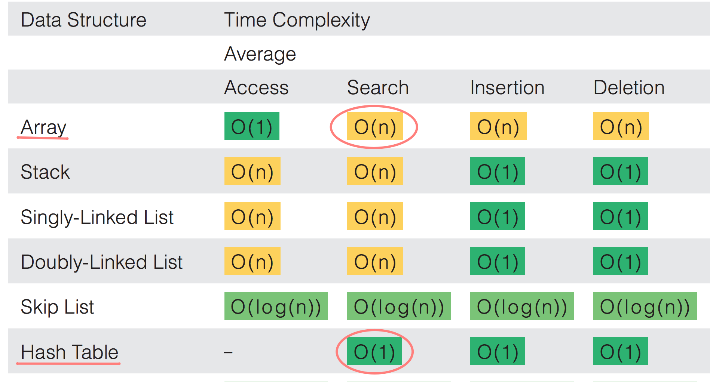
Задание: напишите “сложный” англо-русский словарь, где каждому английскому слову может соответствовать несколько переводов (например: cat это “кот”, “кошка”).
Задание: задайте базу данных (хеш) своих контактов. Для каждого контакта (фамилия) может быть задано три параметра: email, cell_phone (номер моб.телефона), work_phone (номер рабочего телефона). Напишите программу, которая будет спрашивать фамилию и выводить на экран контактную информацию.
Сравнительная таблица массивов и хешей
|
|
Массив |
Хеш |
|
Объявление |
arr = [] |
hh = {} |
|
Итерация |
arr.each do |element| ... end |
hh.each do |key, value| ... end
или
hh.each_key do |key| ... end |
|
Представление данных |
|
|
|
Обращение |
arr[0] |
hh[■] |
|
Смысл |
Для представления последовательности данных, списков, элементов идущих по-порядку |
Для хранения данных в общей куче, но с быстрым выбором по ключу. Для хранения настроек, опций, для передачи параметров в какой-либо метод |
|
Класс |
Array |
Hash |
Наиболее часто используемые методы класса Hash
В общем и целом, структура данных “хеш” довольно простая. В языке руби существуют некоторые методы, которые вам могут встретиться чаще, чем остальные. В остальных языках эти методы похожи. Скажем, обращение к хешу (объекту) в JavaScript выглядит следующим образом:
```
$ node
> hh = {};
{}
> hh['something'] = 'blabla';
'blabla'
> hh
{ something: 'blabla' }
```
Различие лишь в том, что в JavaScript не существует типа Symbol, и в качестве ключей в большинстве случаев используются строки.
Хеши также реализованы в некоторых других инструментах, например в базах данных. Довольно известная база данных Redis ничто иное как key-value storage (хранилище “ключ-значение”). В предыдущих примерах мы делали записную книжку. Но представим, что нам нужно сохранять все эти данные в случае перезапуска программы. Первый вариант - сохранить все в файл. Этот способ прекрасно работает, но возможно он немного медленный, когда у вас есть несколько тысяч пользователей. Второй вариант - воспользоваться NoSQL базой данных через особый API (интерфейс взаимодействия).
В любом случае, используете ли вы библиотеку (gem), базу данных, язык руби или какой-то другой, для хеша всегда существует два основных метода:
get(key) - получить значение (value)
set(key, value) - установить значение для определенного ключа
Документация к NoSQL базе данных Redis https://github.com/redis/redis-rb говорит нам то же самое:
```
redis.set("mykey", "hello world")
# => "OK"
redis.get("mykey")
# => "hello world"
```
Если посмотреть в Википедии, то Redis это ничто иное как хранилище ключ-значение:
> Redis is... key-value store…
Тут у читателя возникает вопрос - а зачем мне Redis-хеш, когда у меня есть хеш в языке руби? Во-первых, хеш в языке руби не сохраняет данные на диск. А во-вторых, Redis предназначен для эффективного хранения многих миллионов пар “ключ-значение”, а хеш в языке руби обычно не хранит много пар.
Ниже мы рассмотрим наиболее часто встречающиеся методы класса Hash. Все эти методы также описаны в документации https://ruby-doc.org/core-2.5.1/Hash.html
Установка значения по-умолчанию
Иногда полезно устанавливать значения в хеше по-умолчанию. Следует сделать заметку в книге, т.к. эта возможность часто забывается, но на практике потребность в значении по-умолчанию часто возникает на интервью. Одна из подобных задач - есть какое-то предложение, необходимо сосчитать частотность слов и вывести список. Например, слово “the” встречается 2 раза, слово “dog” 1 раз и так далее.
Как мы будем решать эту задачу? Представим, что у нас есть строка “the quick brown fox jumps over the lazy dog”. Разобьем ее на части:
```
str = 'the quick brown fox jumps over the lazy dog'
arr = str.split(' ')
```
У нас получился массив слов, давайте обойдем этот массив и занесем каждое значение в хеш, где ключом будет слово, а значением - количество повторов этого слова. Попробуем для начала количество повторов установить в единицу. Как это сделать? Очень просто:
```
hh = {}
arr.each do |word|
hh[word] = 1
end
```
Далее нам каким-то образом нужно проверить: встречается ли слово в хеше. Если встречается, то увеличить счетчик на 1. Если не встречается, то добавить новое слово.
```
arr.each do |word|
if hh[word].nil?
hh[word] = 1
else
hh[word] += 1
end
end
```
Код программы целиком выглядел бы следующим образом:
```
str = 'the quick brown fox jumps over the lazy dog'
arr = str.split(' ')
hh = {}
arr.each do |word|
if hh[word].nil?
hh[word] = 1
else
hh[word] += 1
end
end
puts hh.inspect
```
Программа работает, и результат работы выглядит следующим образом:
```
{"the"=>2, "quick"=>1, "brown"=>1, "fox"=>1, "jumps"=>1, "over"=>1, "lazy"=>1, "dog"=>1}
```
В самом деле, у нас два слова “the”, а остальных по одному. Но эту программу можно было бы значительно облегчить, если знать, что в хеше можно установить значение по-умолчанию:
```
str = 'the quick brown fox jumps over the lazy dog'
arr = str.split(' ')
hh = Hash.new(0)
arr.each do |word|
hh[word] += 1
end
puts hh.inspect
```
Девять строк кода вместо тринадцати!
Строка `Hash.new(0)` говорит языку руби о том, что если слово не найдено, то будет возвращено автоматическое значение - ноль. Если бы мы объявили хеш без значения по-умолчанию, то мы получили бы ошибку “NoMethodError: undefined method `+' for nil:NilClass”, ведь руби попытался бы сложить “nil” и единицу, а этого делать нельзя:
```
$ pry
[1] pry(main)> nil + 1
NoMethodError: undefined method `+' for nil:NilClass
```
В этом случае говорят, что метод “+” не реализован в классе nil.
Задание: напишите программу, которая считает частотность букв и выводит на экран список букв и их количество в предложении.
Допустим, что нам нужно вызвать какой-то метод и передать ему несколько параметров. Например, пользователь выбрал определенное количество футбольных мячей, мячей для тенниса, и мячей для гольфа. Мы хотим написать метод, который считает общий вес. Это может быть сделано обычным способом:
```
def total_weight(soccer_ball_count, tennis_ball_count, golf_ball_count)
# ...
end
```
В этом случае вызов выглядел бы следующим образом:
```
x = total_weight(3, 2, 1)
```
Три футбольных мяча, два мяча для тенниса, один для гольфа. Согласитесь, что когда мы смотрим на запись “total_weight(3, 2, 1)” не очень понятно, что именно означают эти параметры. Это мы знаем, что сначала идут футбольные мячи, потом должны идти мячи для тенниса, потом для гольфа. Но чтобы это понять другому программисту, нужно посмотреть на сам метод.
Это не очень удобно, поэтому некоторые IDE (Integrated Development Environment, редакторы кода, среды разработки) автоматически подсказывают что именно это за параметр. Например, такая функциональность есть в RubyMine. Однако, в силу динамической природы языка RubyMine не всегда может определить правильное название параметров. Да и многие руби программисты используют текстовые редакторы попроще.
Поэтому многие программисты предпочитали передавать в методы хеш с параметрами:
```
def total_weight(options)
a = options[:soccer_ball_count]
b = options[:tennis_ball_count]
c = options[:golf_ball_count]
puts a
puts b
puts c
# ...
end
params = { soccer_ball_count: 3, tennis_ball_count: 2, golf_ball_count: 1 }
x = total_weight(params)
```
Согласитесь, что код
```
total_weight({ soccer_ball_count: 3, tennis_ball_count: 2, golf_ball_count: 1 })
```
выглядит более понятным, чем просто “total_weight(3, 2, 1)”. Несмотря на то, что запись выше выглядит длиннее, у нее есть два преимущества.
Во-первых, точно видно какие параметры мы передаем, т.к. мы явно указываем названия этих параметров
А
во-вторых, порядок параметров в хеше не
имеет значения. В случае с “total_weight(3,
2, 1)” нам
нужно соблюдать порядок и всегда помнить:
первый элемент это количество футбольных
мячей и т.д. В случае с хешем можно указать
обратный порядок и это не будет
ошибкой:
```
total_weight({
golf_ball_count: 1, tennis_ball_count: 2, soccer_ball_count: 3
})
```
Программа
получается более наглядная, и нам не
нужно помнить про порядок! Позднее
синтаксис был упрощен, и теперь для
вызова функции, которая принимает хеш
с параметрами не нужно указывать фигурные
скобки, метод все равно будет принимать
хеш:
```
total_weight(golf_ball_count:
1, tennis_ball_count: 2, soccer_ball_count: 3)
```
Теперь метод для подсчета веса можно переписать иначе:
```
def total_weight(options)
a = options[:soccer_ball_count]
b = options[:tennis_ball_count]
c = options[:golf_ball_count]
puts a
puts b
puts c
# ...
end
x = total_weight(soccer_ball_count: 3, tennis_ball_count: 2, golf_ball_count: 1)
```
Но что будет, если мы вызовем этот метод вообще без каких-либо аргументов? По идее, метод должен вернуть ноль. Но мы получаем сообщение об ошибке:
```
ArgumentError: wrong number of arguments (given 0, expected 1)
```
Руби нам говорит о том, что метод ожидает 1 параметр, а мы ничего не предоставили. С точки зрения бизнес-логики может показаться, что это правильно - “не нужно вызывать неправильно то, что что-то считает. Если хотите посчитать общий вес, то укажите сколько мячей или укажите явно - ноль мячей для футбола, ноль для тенниса, ноль для гольфа”. Это кажется разумным, но давайте представим, что total_weight может вызываться и без параметров. В этом случае, например, метод должен возвращать вес пустой коробки (29 грамм). Что же нам делать?
Решение очень простое: сделать так, чтобы параметр options принимал какое-либо значение по-умолчанию. Например, пустой хеш. Если хеш будет пустой, то переменные “a, b, c” будут инициализированы значением nil и метод можно будет вызывать без параметров. Указать значение по-умолчанию можно в определении метода с помощью знака “равно”:
```
def total_weight(options={})
...
```
Важное примечание: несмотря на то, что “равно с пробелами” выглядит нагляднее, в руби-сообществе существует два мнения по этому поводу. Раньше было принято использовать равно без пробелов (но только при определении параметров метода по-умолчанию). Сейчас чаще всего встречается “равно с пробелами”.
В зависимости от предпочтений, которые существуют в вашей команде, инструмент статического анализа кода Rubocop может выдать предупреждение:
```
# не рекомендуется указывать пробелы
def total_weight(options = {})
...
```
Код нашей программы полностью теперь выглядит так:
```
def total_weight(options={})
a = options[:soccer_ball_count]
b = options[:tennis_ball_count]
c = options[:golf_ball_count]
puts a
puts b
puts c
# ...
end
x = total_weight(soccer_ball_count: 3, tennis_ball_count: 2, golf_ball_count: 1)
```
Можно вызвать “total_weight” без параметров и не будет ошибки (попробуйте самостоятельно в pry). Давайте теперь перепишем эту программу, чтобы она на самом деле считала вес посылки вместе с коробкой:
```
def total_weight(options={})
a = options[:soccer_ball_count]
b = options[:tennis_ball_count]
c = options[:golf_ball_count]
(a * 410) + (b * 58) + (c * 45) + 29
end
x = total_weight(soccer_ball_count: 3, tennis_ball_count: 2, golf_ball_count: 1)
```
Программа работает и правильно считает. 3 футбольных мяча, 2 теннисных и 1 мяч для гольфа все вместе весят 1420 грамм. Попробуем вызвать метод “total_weight” без параметров:
```
...
> total_weight
NoMethodError: undefined method `*' for nil:NilClass
```
О нет, ошибка! В чем же дело? Конечно, ведь если мы не указываем параметр, то его нет и в хеше. И когда мы пытаемся прочитать переменные “a, b, c”, то все они принимают значения nil. А nil нельзя умножать:
```
$ pry
> nil * 410
NoMethodError: undefined method `*' for nil:NilClass
```
Тут мы можем прибегнуть к хитрости и логическому оператору “или”. Попробуйте догадаться, что выведет на экран программа:
```
if nil || true
puts 'Yay!'
end
```
Программа выведет “Yay!”, потому что руби увидит nil, это выражение его не удовлетворит, потом встретит логический оператор “или” и решит вычислить то, что находится после этого логического оператора. А после находится “true”, и результат выражения “nil || true” равняется в итоге “true” (истина), которое передается оператору “if” (если). Получается конструкция “если истина, то вывести на экран Yay!”.
Теперь попробуйте догадаться, чему будет равно значение переменной “x”:
```
x = nil || 123
```
Правильный ответ: 123. Эту же хитрость мы можем применить и к переменным “a, b, c” следующим образом:
```
a = options[:soccer_ball_count] || 0
```
Другими словами, если значение в хеше “options” не указано (равно nil), то переменной “a” будет присвоено значение “0”.
Код программы целиком:
```
def total_weight(options={})
a = options[:soccer_ball_count] || 0
b = options[:tennis_ball_count] || 0
c = options[:golf_ball_count] || 0
(a * 410) + (b * 58) + (c * 45) + 29
end
x = total_weight(soccer_ball_count: 3, tennis_ball_count: 2, golf_ball_count: 1)
```
Теперь метод “total_weight” работает без параметров и возвращает 29. Мы можем также передать один или несколько параметров:
```
> total_weight(tennis_ball_count: 2, golf_ball_count: 1)
190
```
Получился работоспособный метод, который принимает хеш с параметрами, который выглядит понятно, и в который можно передать любое количество параметров.
Представим теперь, что в технический отдел пришел директор продаж с новым требованием к нашей программе: “если пользователь не заказывает мячи для гольфа, мы даем ему один в подарок!” Это требование легко реализовать в нашей функции. Код метода получился бы таким:
```
def total_weight(options={})
a = options[:soccer_ball_count] || 0
b = options[:tennis_ball_count] || 0
c = options[:golf_ball_count] || 1
(a * 410) + (b * 58) + (c * 45) + 29
end
```
Мы рассмотрели передачу опций в метод с помощью хешей. Этот способ широко используется, особенно когда количество параметров метода больше пяти. Похожие решения также существуют в других языках.
Задание: Центр Управления Полетами поручил вам задание написать метод “launch” (от англ. “запуск”), который будет принимать набор опций в виде хеша и отправлять в космос астронавтов “Белку” и/или “Стрелку”. Метод должен принимать следующие параметры:
`angle` - угол запуска ракеты. Если не задан, то значение по-умолчанию равно 90 (градусов)
`astronauts` - массив символов (:belka, :strelka), если не задан, то в космос нужно отправлять и Белку, и Стрелку.
`delay` - количество секунд через которые запустить ракету, если не задано, то равно пяти
Метод должен вести подсчет оставшихся до запуска секунд (например: “Осталось секунд: 5 4 3 2 1”). После истечения задержки, метод должен выводить сообщение о том, какой астронавт (астронавты) запущены, а также под каким углом была запущена ракета. Метод может принимать любое количество параметров (ноль, один, два, три). Возможные варианты вызова метода:
`launch`
`launch(angle: 91)`
`launch(delay: 3)`
`launch(delay: 3, angle: 91)`
`launch(astronauts: [:belka])`
и т.д.
В языке руби существует возможность вывести список ключей в каком-либо хеше. Работает этот метод довольно предсказуемо:
```
$ pry
> hh = {}
=> {}
> hh[:red] = 'ff0000'
=> "ff0000"
> hh[:green] = '00ff00'
=> "00ff00"
> hh[:blue] = '0000ff'
=> "0000ff"
> hh.keys
=> [:red, :green, :blue]
```
Выше мы определили хеш с ключом типа Symbol и значением типа String. К слову, строковые значения это общепринятое трехбайтное (в виде строки) обозначение цветов RGB, где первый байт отвечает за R(ed) - красный, второй за G(reen) - зеленый, третий за (B)lue - синий.
Получение списка ключей - не самая часто встречающаяся операция. Однако, иногда возникает необходимость использовать только ключи в структуре данных “хеш”. Это можно сделать через хеш, задавая любые значения (например, true), но есть специальная структура данных, которая содержит только ключи (без значений). Она называется HashSet (в руби просто Set):
(англ.) > Set implements a collection of unordered values with no duplicates
(по-русски) > Set представляет (реализует) собой коллекцию неупорядоченных неповторяющихся значений (то есть без дубликатов)
“Set” в переводе с английского языка это набор, множество. Т.е. это просто набор каких-то данных, объединенным каким-то признаком.
Напишем небольшую программу для демонстрации структуры данных HashSet: есть предложение в нижнем регистре, нужно определить: все ли буквы английского языка используются в этом предложении? Известно, что предложение “quick brown fox jumps over the lazy dog” использует все буквы английского языка, поэтому его используют для визуального тестирования шрифтов. А вот в “brown fox jumps over the lazy dog” (без слова quick) нет буквы “q”.
Нам нужно написать метод, который будет возвращать true, если в предложении содержатся все буквы и false если каких-то букв не хватает. Как мы могли бы написать эту программу?
Подход простой: делаем итерацию по каждому символу, если это не пробел, то добавляем в структуру данных “хеш”. Т.к. в хеше не может быть дублированных значений, то максимальное количество ключей в хеше - 26 (количество букв английского алфавита). Если количество букв 26, то все буквы были использованы.
Что не так с обычным хешем в этой задаче? То, что добавляя в хеш мы должны указывать какое-то значение:
```
hh[letter] = true
```
Мы можем указать true, false, любую строку - это совершенно не важно, этот объект не несет никакой смысловой нагрузки. Поэтому хорошо бы иметь хеш без значений, чтобы можно было сэкономить память и, самое главное, показать намерение — “значение нам не важно”. В этом случае идеально подходит структура данных HashSet. Код программы может выглядеть следующим образом:
```
# импортируем пространство имен, т.к. set
# не определен в пространстве имен по-умолчанию
require 'set'
# наш метод, который принимает строку
def f(str)
# инициализируем set
set = Set.new
# итерация по каждому символу в строке
str.each_char do |c|
# только если символ между a и z (игнорируем пробелы и все остальное)
if c >= 'a' && c <= 'z'
# добавляем в set
set.add(c)
end
end
# результат выражения true, если есть все английские буквы в наборе
set.size == 26
end
# выведет true, т.к. в этом предложении используются все буквы англ. алфавита
puts f('quick brown fox jumps over the lazy dog')
```
Вопрос “чем отличается Hash от HashSet” часто можно встретить на интервью. Незнание этих деталей не говорит о том, что вы не можете программировать. Но знание говорит о том, что у вас есть опыт в программировании и вы понимаете некоторые тонкости.
К слову, одна из ошибок, которую можно было бы сделать в этом задании - разбить строку на символы методом split:
```
> "quick brown fox jumps over the lazy dog".split('')
=> ["q", "u", "i", "c", "k", " ", "b", "r", "o", "w", "n", " ", "f", "o", "x", " ", "j", "u", "m", "p", "s", " ", "o", "v", "e", "r", " ", "t", "h", "e", " ", "l", "a", "z", "y", " ", "d", "o", "g"]
```
В этом случае произошло бы выделение дополнительной памяти. Представьте, что строка имеет размер в несколько гигабайт. Зачем формировать массив и расходовать память, когда можно просто воспользоваться итерацией по символам средствами класса String?
Другая возможная ошибка в этом упражнении - итерация строки до конца. Если строка довольно большая, а распределение символов равномерно, то вероятность того, что все символы встретятся где-то вначале очень высока. Поэтому проверка на размер HashSet довольно полезна и в теории должна сэкономить вычислительные ресурсы.
Задание: в программе выше допущена ошибка, которая приведет к большим расходам вычислительных ресурсов на больших строках. Сможете ли вы ее увидеть?
Задание: после того, как вы прочитали эту главу, попробуйте потренироваться и написать эту программу самостоятельно, не подсматривая в книгу.
Итерация по хешу используется не часто: основное назначение хеша все-таки в добавлении и извлечении конкретного элемента. Но иногда она встречается. Мы уже знаем, что итерация по массиву имеет следующий вид:
```
arr.each do |element|
# do something with element
end
```
Итерация по всем парам ключ-значение имеет похожий вид:
```
hh = {
soccer_ball: 410,
tennis_ball: 58,
golf_ball: 45
}
hh.each do |k, v|
puts "Вес #{k} равняется #{v}"
end
```
Результат работы программы:
```
Вес soccer_ball равняется 410
Вес tennis_ball равняется 58
Вес golf_ball равняется 45
```
Переменные “k” и “v” означают “key” (ключ) и “value” (значение) соответственно. Если значение не нужно, то переменную “v” можно опустить, написать с подчеркиванием вначале или вообще заменить на подчеркивание. Это не синтаксис языка, а общепринятые соглашения о наименовании (naming conventions), с помощью которых другим программистам будет известно о ваших намерениях:
```
hh = {
soccer_ball: 410,
tennis_ball: 58,
golf_ball: 45
}
hh.each do |k, _|
puts "На складе есть #{k}"
end
```
Код выше можно записать немного иначе, если воспользоваться методом “each_key” класса Hash.
Задание: имеются следующие данные:
```
data = {
soccer_ball: { name: 'Футбольный мяч', weight: 410, qty: 5 },
tennis_ball: { name: 'Мяч для тенниса', weight: 58, qty: 10 },
golf_ball: { name: 'Мяч для гольфа', weight: 45, qty: 15 }
}
```
Написать программу, которая будет выводить на экран:
```
На складе есть:
Футбольный мяч, вес 410 грамм, количество: 5 шт.
Мяч для тенниса, вес 58 грамм, количество: 10 шт.
Мяч для гольфа, вес 45 грамм, количество: 15 шт.
```
Допустим, у нас есть структура данных с несколькими уровнями вложенности:
```
users = [
{ first: 'John', last: 'Smith', address: { city: 'San Francisco', country: 'US' } },
{ first: 'Pat', last: 'Roberts', address: { country: 'US' } },
{ first: 'Sam', last: 'Schwartzman' }
]
```
Структура имеет определенную схему. Т.е. для каждой записи (пользователя) формат данных одинаковый. Но иногда данных по какому-то параметру нет. Скажем, во второй записи отсутствует город. В третьей записи вообще нет адреса. Мы хотим вывести на экран все города из этого массива.
Первое, что приходит на ум - итерация по массиву и “обычное” обращение к хешу:
```
users.each do |user|
puts user[:address][:city]
end
```
Попробуем запустить эту программу:
```
San Francisco
-:8:in `block in <main>': undefined method `[]' for nil:NilClass (NoMethodError).
```
Программа выдает ошибку. В чем же дело? Давайте попробуем обратиться к каждому пользователю отдельно:
```
$ pry
> users[0][:address][:city]
=> "San Francisco"
> users[1][:address][:city]
=> nil
> users[2][:address][:city]
NoMethodError: undefined method `[]' for nil:NilClass
```
Для первого пользователя конструкция сработала. Для второго пользователя тоже - результат равен nil. Для третьего пользователя `users[2][:address]` уже равно nil. А когда мы делаем `nil[:city]`, то мы получаем ошибку, потому что обращение к каким-либо элементам в классе nil не реализовано.
Так как же нам написать программу? Воспользуемся конструкцией if:
```
users.each do |user|
if user[:address]
puts user[:address][:city]
end
end
```
Ура! Программа работает и ошибку не выдает. Мы написали хороший код. Но давайте немного усложним структуру данных, добавив в хеш “address” еще один объект:
```
street: { line1: '...', line2: '...' }
```
Другими словами, будет street-адрес, который всегда состоит из двух строк. Структура данных полностью будет выглядеть следующим образом (по сравнению с вариантом выше эта структура также визуально оптимизирована):
```
users = [
{
first: 'John',
last: 'Smith',
address: {
city: 'San Francisco',
country: 'US',
street: {
line1: '555 Market Street',
line2: 'apt 123'
}
}
},
{ first: 'Pat', last: 'Roberts', address: { country: 'US' } },
{ first: 'Sam', last: 'Schwartzman' }
]
```
Теперь наша задача - вывести line1 из street-адреса. Как мы напишем эту программу? Первое, что приходит на ум:
```
users.each do |user|
if user[:address]
puts user[:address][:street][:line1]
end
end
```
Но код выше споткнется уже не на третьей, а на второй записи. `user[:address][:street]` будет nil. Запишем этот код иначе:
```
users.each do |user|
if user[:address] && user[:address][:street]
puts user[:address][:street][:line1]
end
end
```
Работает, но пришлось добавить второе условие. Другими словами, чем сложнее конструкция и больше уровней вложенности, тем больше проверок на nil необходимо сделать. Это не очень удобно, и в версии 2.3.0 языка руби (проверить свою версию можно с помощью `ruby -v`) был представлен новый метод dig (англ. “копать”):
```
users.each do |user|
puts user.dig(:address, :street, :line1)
end
```
Этот метод принимает любое количество параметров и обращается к сложной структуре данных без ошибок. Если какой-то из ключей в цепочке не найден, то возвращается значение nil.
Примечание: когда вы будете работать с Rails, вы столкнетесь с похожим методом “try” и т.н. safe navigation operator (тоже был представлен впервые в версии 2.3.0): `&.`, в других языках программирования обозначается как `?.` (иногда ошибочно говорят “Elvis operator” -- это понятие относится к немного другой конструкции). Safe navigation operator похож по своей сути на метод dig. Мы рекомендуем взглянуть на страницу в Википедии для того, чтобы иметь представление зачем это нужно:
https://en.wikipedia.org/wiki/Safe_navigation_operator
В некоторых случаях необходимо просто проверить наличие ключа в хеше. Это можно сделать без извлечения значения с помощью метода “has_key?”:
```
$ pry
> hh = { login: 'root', password: '123456' }
...
> hh.has_key?(:password)
true
>
```
“has_key?” проверяет только наличие ключа, но не выполняет никаких действий со значением.
Задание: объясните чем отличается JSON вида
```
{
"books": [
{
"id": 1,
"name": "Tom Sawyer and Huckleberry Finn",
},
{
"id": 2,
"name": "Vingt mille lieues sous les mers",
}
]
}
```
От
```
{
"books": {
"1": {
"name": "Tom Sawyer and Huckleberry Finn"
},
"2": {
"name": "Vingt mille lieues sous les mers"
}
}
}
```
В какой из структур данных выше поиск книги константный O(1), а в какой линейный O(N)? Каким образом предпочтительнее объявить структуру? Какое количество хешей и массивов используется в каждом из примеров? Как добавить книгу в каждом из случаев?
Существует мнение, что Объектно-Ориентированное Программирование (ООП) является чем-то сложным, загадочным и недостижимым. Но на самом деле это довольно просто, если мы говорим о тех вещах, с которыми вам придется сталкиваться ежедневно. Правильное ООП может сильно облегчить жизнь программиста и проекта, но требует намного больше brain power, чем обычное ООП, которое повсеместно используется.
В этой книге мы рассмотрим обычное ООП для начинающих. Если вам интересна тема правильного ООП, мы рекомендуем прочитать книгу “Elegant Objects” Егора Бугаенко.
Само название “Объектно-ориентированное программирование” подразумевает, что где-то должен быть объект. Что же такое объект? Из обычной жизни мы знаем, что все вокруг объекты. Например, книга на столе. Человек, идущий по улице. Автомобиль BMW E34, который едет по дороге. Но если присмотреться, то автомобиль BMW E34 - это определенный класс объектов. Среди всего множества автомобилей, автомобили этой модели точно такие же, абсолютно одинаковые. Но все-таки это разные экземпляры.
Самый простейший пример класса это чертеж, который все чертили в школе:
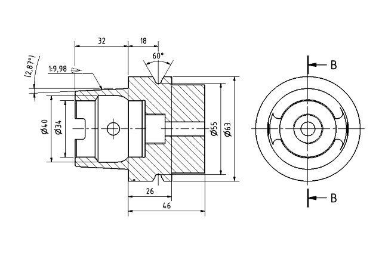Рис. Пример чертежа. Источник: https://ru.wikipedia.org/wiki/Чертёж
На чертеже изображается какая-либо деталь, ее размеры, различные параметры: ширина, высота и т.д. Класс это примерно то же самое, что чертеж, рисунок или шаблон какой-то детали. Сам по себе этот шаблон в принципе бесполезен. Зачем нужны шаблоны? Шаблоны нужны для того, чтобы по ним что-то можно было сделать. Т.е. мы посмотрели на чертеж и уже на основе чертежа мы можем создать какую-то деталь.
Объект - как раз и есть эта деталь, которая создается на основе шаблона, или класса. У объекта есть также второе имя - “экземпляр” (instance) или “экземпляр класса” (class instance).
Классы и объекты в программировании это почти то же самое, что классы и объекты в жизни. Шаблон один, объектов много. По одному чертежу можно создать сколько угодно деталей:
TODO: сделать 3D модель детали вверху и нарисовать несколько деталей
Также и класс - один, объектов много. Мы можем объявить один класс и создать на его основе множество объектов:
```
class Car
end
car1 = Car.new
car2 = Car.new
car3 = Car.new
```
Все эти объекты будут храниться в памяти компьютера. Вот в общем-то и все объяснение, теперь вы знаете что такое классы и что такое объекты.
Состояние (state) - важное понятие в объектно-ориентированном языке. Руби это объектно-ориентированный язык. Другие примеры объектно-ориентированных языков: Java, C#, JavaScript. Существуют также другие, частично объектно-ориентированные языки (Golang - https://golang.org/doc/faq#Is_Go_an_object-oriented_language), т.н. функциональные языки программирования (Erlang/Elixir, Haskell) и пр.
Основное отличие объектно-ориентированного языка от не-объектно-ориентированного в том, что в объектно-ориентированном языке есть такое понятие как состояние объекта. Что же такое состояние?
Обратимся к нашему примеру с автомобилем BMW модели E34. Итак, где-то на заводе в Германии существует чертеж этого автомобиля, именно этой модели. По этому чертежу фабрикой было выпущено множество экземпляров автомобиля. Но автомобиль собран из отдельных деталей:
Двигатель
Лобовое стекло
Кузов
Двери
Колеса, и т.д.
Все эти объекты бездушные, не живые, и не представляют никакой ценности. Кто в своем уме купит колесо от автомобиля просто ради того, чтобы принести его домой? В этом нет никакого смысла. Но будучи собранным, автомобиль превращается в живой организм, в объект, у него появляется состояние.
Несмотря на то, что все выпущенные машины на заводе за много лет были одинаковыми, у всех у них на данный момент сейчас совершенно разное состояние. Состояние отличает один конкретный автомобиль от множества точно таких же. В чем же выражается это состояние?
Во-первых, пробег. Автомобиль довольно сложный механизм, и вряд ли у двух автомобилей существует одинаковый пробег с точностью до метра. Во-вторых, это может быть любой другой параметр: например, бензин в баке. Количество бензина в баке отражает состояние конкретного объекта “автомобиль BMW марки E34”. Мы знаем, что количество бензина меняется: мы можем приехать на заправку и изменить состояние этого объекта, долив бензина. В-третьих, включен автомобиль или выключен - это тоже состояние.
Другими словами, в объектно-ориентированном языке объект - это живой механизм, у которого есть состояние. Это состояние каким-то образом можно менять. Это можно делать извне, а можно делать и изнутри. Если мы подходим к автомобилю и открываем дверь, то мы меняем объект извне. А если заводим его, находясь в автомобиле - то меняем состояние изнутри. Автомобиль сам может менять свое состояние. Например, когда двигатель нагревается до определенной температуры, включается принудительное охлаждение.
Попробуем написать программу, которая продемонстрирует вышесказанное:
```
class Car
def initialize
@state = :closed
end
def open
@state = :open
end
def how_are_you
puts "My state is #{@state}"
end
end
car1 = Car.new
car1.how_are_you
car2 = Car.new
car2.open
car2.how_are_you
```
Результат работы программы:
```
My state is closed
My state is open
```
Мы создали класс “Car” - начертили “чертеж” автомобиля с помощью языка руби. Далее мы создали объект (экземпляр) с помощью конструкции “Car.new” и присвоили переменной “car1” ссылку на этот объект. Важно отметить, что переменная car1 не “содержит” сам объект, это просто ссылка на область памяти где на самом деле этот объект хранится. Можно вспомнить аналогию с подъездом. Звонок - это ссылка на квартиру. Также и тут: переменная - это ссылка на объект. Мы можем иметь любое количество переменных, указывающих на один и тот же объект. Захотим и присвоим переменной car777 значение car1:
```
car777 = car1
```
Далее в нашей программе мы спрашиваем у объекта - “how are you”, на что объект сообщает о своем состоянии. Первый объект сообщил, что “My state is closed” (мое состояние - закрыто), но почему это произошло? Дело в том, что мы объявили метод initialize:
```
def initialize
@state = :closed
end
```
Этот метод всегда вызывается при создании нового объекта. Другими словами, когда вы пишите `Car.new`, будет вызван метод `initialize`. Непонятно почему в языке руби выбрали такое длинное слово в котором легко сделать ошибку. Согласитесь, что гораздо проще выглядел бы такой код:
```
class Car
def new
# ...
end
end
Car.new
```
Но к сожалению приходится использовать длинное слово “initialize”. Кстати, этот метод называется “конструктор”, и в языке JavaScript версии ES6 и выше он именуется именно так:
```
class Car {
constructor() {
console.log('hello from constructor!');
}
}
let car1 = new Car();
```
Если запустить программу выше (например, `$ node` и вставить текст), то мы увидим сообщение “hello from constructor!”. Т.е. метод был вызван при создании объекта. Тот же самый код в руби выглядит следующим образом:
```
class Car
def initialize
puts 'hello from constructor!'
end
end
car1 = Car.new
```
Это один из не самых очевидных моментов в языке Ruby - пишем “new”, а вызывается “initialize”.
Для чего существует конструктор? Для того, чтобы определить начальное состояние объекта. Скажем, при выпуске автомобиля мы хотим чтобы: двери автомобиля были закрыты, окна были закрыты, капот и багажник были закрыты, все выключатели были переведены в положение “Выключено” и т.д.
Вы, наверное, обратили внимание, что мы использовали знак “@” (читается как “at”) перед переменной “state” в конструкторе. Этот знак говорит о том, что это будет “instance variable” - переменная экземпляра. Мы как-то говорили об этом в предыдущих главах. Но вообще, существует три типа переменных:
Локальные
переменные.
Это переменные, объявленные в каком-то
методе. Эти переменные недоступны из
других методов. Если вы напишите вот
такой код, то программа выдаст ошибку,
потому что переменная “aaa” не определена
в методе “m2”:
```
class
Foo
def m1
aaa = 123
puts aaa
end
def m2
puts aaa
end
end
foo = Foo.new
foo.m1 # сработает, будет выведено 123
foo.m2 # будет ошибка, переменная не определена
```
Instance variables - переменные экземпляра класса. К ним можно обращаться только через “@”:
```
class Foo
def initialize
@aaa = 123
end
def m1
puts @aaa
end
def m2
puts @aaa
end
end
foo = Foo.new
foo.m1
foo.m2
```
Эти переменные определяют состояние объекта. Желательно объявлять instance variables в конструкторе, чтобы показать намерение: вот эта переменная будет отвечать за состояние, мы будем ее использовать. Однако, не будет синтаксической ошибки если вы объявите instance variable в каком-то методе. Просто этот метод должен быть вызван прежде, чем какой-либо другой метод обратится к этой переменной (а конструктор вызывается всегда при создании объекта). Объявляем переменную в методе “m1” и используем ее в методе “m2”:
```
class Foo
def m1
@aaa = 123
puts @aaa
end
def m2
puts @aaa
end
end
foo = Foo.new
foo.m1
foo.m2
```
Результат работы программы:
```
123
123
```
Если в программе выше поменять две последние строки местами, то фактического сообщения об ошибке не будет, программа сработает, но на экран будет выведена только одна строка:
```
123
```
Руби попытается вызвать метод “m2”, т.к. переменная экземпляра класса не объявлена, то ее значение будет равно по-умолчанию nil, а `puts nil` не выводит на экран строку. В этом заключается первая любопытная особенность instance variable - если эта переменная не объявлена, то ее значение по-умолчанию равно nil. Если локальная переменная не объявлена, то будет ошибка исполнения программы.
Class variables - переменные класса, переменные шаблона, иногда называются статическими переменными. Совершенно бесполезный тип переменных с префиксом “@@”. Смысл в том, что какое-то значение можно будет менять между всеми экземплярами класса. На практике это встречается довольно редко.
Можно выделить еще два типа переменных:
Глобальные переменные (с префиксом `$`) - обратиться к этим переменным можно из любого места программы. Однако, из-за этой особенности возникает большой соблазн их использовать, что только приводит к запутанности программы.
Специальные переменные. Например, переменная `ARGV` содержит аргументы, переданные в программу. А переменная `ENV` содержит параметры окружения (environment) - т.е. параметры, которые заданы в вашей оболочке (shell).
Другими словами, для создания программ в общем случае необходимо усвоить разницу между локальными переменными и instance variables (переменными экземпляра класса, которые определяют состояние объекта).
А теперь вопрос. Что делает следующая программа?
```
puts aaa
```
Кто-то скажет “выводит переменную `aaa` на экран”. И будет прав, ведь можно записать программу полностью следующим образом:
```
aaa = 123
puts aaa
```
Но что если мы запишем программу иначе:
```
def aaa
rand(1..9)
end
puts aaa
```
Программа будет выводить случайное значение (в пределах от 1 до 9). Другими словами, мы не можем точно сказать что именно означает `puts aaa`, мы только знаем, что `aaa` - это или переменная, или метод, или что-то еще. Про “что-то еще” мы поговорим подробнее в следующих главах, когда будем говорить о специальном методе “method_missing” (“метод отсутствует”).
А пока наш класс выглядит следующим образом:
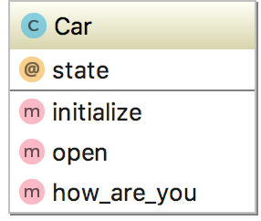
Из картинки видно, что полезных методов только два (два красных круга внизу и один конструктор). Т.е. снаружи мы можем только открыть дверь и попросить рассказать о своем состоянии (или создать объект с помощью конструктора). Состояние хранится в instance variable, и по-умолчанию мы никак не можем обратиться непосредственно к этой переменной снаружи. Состояние может быть каким угодно, мы можем завести 10 переменных, и внутри объекта реализовать любую сложную логику, но интерфейс взаимодействия (API, или сигнатуры методов) остается прежним.
Если продолжить аналогию с реальным автомобилем, то внутри класса мы, может быть, захотим играть музыку. Но до тех пор, пока мы не реализовали это в API нашего объекта, о внутреннем состоянии никто не узнает - играет музыка внутри автомобиля или нет. Это называется инкапсуляция.
Но, допустим, вы ехали по улице и решили подвезти прекрасную девушку. Вы остановились, но девушка такая скромная, что не будет сама открывать дверь. Она бы и рада зайти к вам в машину, но хочет видеть, что дверь открыта. Она хочет прочитать состояние нашего объекта и не хочет говорить “how are you” первому встречному. Другими словами, мы хотим всем разрешить читать состояние объекта. Что делать в этом случае?
Самый простой способ - добавить метод с любым названием, который будет возвращать состояние. Мы могли бы добавить метод “aaa”, но давайте назовем его “state”. Код класса полностью:
```
class Car
def initialize
@state = :closed
end
# новый метод
def state
@state
end
def open
@state = :open
end
def how_are_you
puts "My state is #{@state}"
end
end
```
Получился следующий класс:
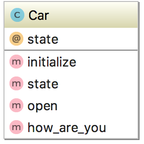
Т.е. само состояние “@state” недоступно, но есть вариант его прочитать с помощью метода “state”. Название состояния и методы похожи и состоят из одного слова, но это для руби это две разные вещи. Мы могли бы назвать метод “aaa”, в этом бы не было ошибки. Отлично, теперь девушка видит, что машина открыта, она может прочитать состояние с помощью метода “state”.
Но вот незадача - снаружи увидеть состояние можно (метод “state”), снаружи можно открыть дверь (“open”), но изменить состояние можно только изнутри. Что в общем-то и нормально -- может быть не потребуется интерфейса для закрытия двери снаружи. Но что если потребуется? Задача программиста - подумать о бизнес-логике, о том, как будет использоваться тот или иной компонент.
Если мы точно знаем, что понравимся девушке, то интерфейс закрытия двери снаружи можно не реализовывать. А что если мы захотим закрывать дверь снаружи? Согласитесь, для автомобиля это полезная функциональность. Мы бы могли написать метод close:
```
def close
@state = :closed
end
```
И проблема была бы решена. Вот один из конечных вариантов класса:
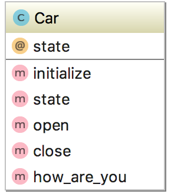
Но что если мы, например, захотим завести автомобиль? Во-первых, наше состояние могло бы быть совокупностью описаний: open, closed, engine_on, engine_off (можно было бы представить его в виде массива). А во-вторых, пришлось бы добавлять еще два метода: on, off. В этом случае к четырем публичным методам прибавилось бы еще два. Получается довольно сложный класс.
Иногда полезно просто оставить возможность управления состоянием извне: делай что хочешь, открывай двери, заводи двигатель, включай музыку. Как вы понимаете, это не всегда приводит к хорошим последствиям, но вполне практикуется.
Для того, чтобы разрешить полное управление переменной экземпляра класса (в нашем случае “@state”), можно написать следующий код:
```
attr_reader :state
attr_writer :state
```
Этот код просто создает в классе два метода, для чтения переменной и для ее записи:
```
def state
@state
end
def state=(value)
@state = value
end
```
Первый метод нам уже знаком - мы его создали для возврата состояния. Второй метод по сути уже содержит в себе знак равно и используется для присваивания. Но attr_reader и attr_writer можно заменить на всего-лишь одну строку:
```
attr_accessor :state
```
(Не путайте “attr_accessor” и “attr_accessible”, которое используется во фреймворке Rails, это разные понятия, но слова выглядят одинаково).
Весь наш класс можно свести к такому простому коду:
```
class Car
attr_accessor :state
def initialize
@state = :closed
end
def how_are_you
puts "My state is #{@state}"
end
end
```
Пример использования:
```
car1 = Car.new
car1.state = :open
car2 = Car.new
car2.state = :broken
car1.how_are_you
car2.how_are_you
```
Результат работы программы:
```
My state is open
My state is broken
```
Визуальное представление класса:
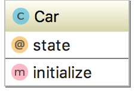
Задание: напишите класс Monkey (“обезьянка”). В классе должно быть 1) реализовано два метода: run, stop; 2) каждый из методов должен менять состояние объекта; 3) you must expose the state of an object так, чтобы можно было узнать о состоянии класса снаружи, но нельзя было его модифицировать (к сожалению, точно перевести на русский язык выражение “expose the state” не получилось. Посмотрите перевод слова “expose” в словаре). Создайте экземпляр класса Monkey, вызовите методы объекта и проверьте работоспособность программы.
Задание: сделайте так, чтобы при инициализации класса Monkey экземпляру присваивалось случайное состояние. Создайте массив из десяти обезьянок. Выведите состояние всех элементов массива на экран.
Читайте также: https://vk.com/@physics_math-skryvaite-sekrety-inkapsuliruite-detali-realizacii
Вроде бы более или менее что такое состояние понятно. Но как оно используется на практике? В чем его преимущество? Зачем держать состояние внутри объекта и зачем нужна инкапсуляция?
Как уже было замечено выше, объект это живой организм. На практике оказалось полезным не заводить несколько переменных с разными именами, а инкапсулировать их под одной крышей. Представим, что у нас есть робот, который движется по земле, а мы на него смотрим сверху вниз. Робот начинает движение в какой-то точке и может ходить вверх, вниз, влево и вправо произвольное количество шагов.
Кажется, что мы могли бы обойтись и без класса. Завели бы две переменных: x, y. Если робот ходит вправо, к переменной “x” прибавляется единица. Если вверх, то к переменной “y” прибавляется единица. Не нужны никакие объекты и классы. Все это так, но сложность возникает когда нужно создать двух роботов.
Что получается? Нужно завести 4 переменные, по 2 на каждого робота. Первую пару мы назовем “x1” и “y1”, вторую “x2” и “y2”. Уже неудобно, но можно и обойтись. Но что если роботов будет больше? “Можно обойтись массивом”, - скажет читатель и будет прав. Можно создать массив переменных. Это просто будет какая-то структура данных, и какие-то методы будут знать как с ней работать. Но постойте, работать со структурой данных сложнее, чем просто с переменными!
Намного проще написать `x = x + 1`, чем например `x[5] = x[5] + 1`. Другими словами, объекты и классы облегчают создание программы. Давайте создадим описанный класс робота:
```
class Robot
attr_accessor :x, :y
def initialize
@x = 0
@y = 0
end
def right
self.x += 1
end
def left
self.x -= 1
end
def up
self.y += 1
end
def down
self.y -= 1
end
end
robot1 = Robot.new
robot1.up
robot1.up
robot1.up
robot1.right
puts "x = #{robot1.x}, y = #{robot1.y}"
```
Во-первых обратите внимание на альтернативный синтаксис обращения к переменной экземпляра (instance variable) - через `self.` вместо `@`. Если не указать `self.` или `@`, то руби подумает, что мы хотим объявить локальную переменную в методе (даже если похожая переменная или accessor-метод уже существует).
А во-вторых, попробуйте догадаться что выведет на экран программа? Правильный ответ:
```
x = 1, y = 3
```
Робот сделал 4 шага и его координаты равны 1 по “x” и 3 по “y”.
Для того, чтобы создать 10 таких роботов, мы просто создаем массив:
```
arr = Array.new(10) { Robot.new }
```
А теперь применим трюк и для каждого робота из массива вызовем случайный метод:
```
arr.each do |robot|
m = [:right, :left, :up, :down].sample
robot.send(m)
end
```
Трюк заключается в двух строках внутри блока. Первая строка выбирает случайный символ из массива и присваивает его переменной m. Вторая строка “отправляет сообщение” объекту - это просто такой способ вызвать метод (в руби могли бы назвать этот метод более понятным словом: “call” вместо “send”).
Другими словами, выше мы не только создали объекты определенного рода, но и смогли относительно легко произвести взаимодействие с целой группой объектов. Согласитесь, это намного проще, чем взаимодействовать с объектами по-одиночке.
Ради наглядного эксперимента “вообразим” на экране компьютера плоскость размером 60 на 25 и поставим каждого робота в середину. Каждую секунду будем проходить по массиву роботов, менять их положение случайным образом и перерисовывать нашу плоскость, отображая роботов звездочкой. Посмотрим, как роботы будут расползаться по экрану в случайном порядке.
Ниже приведен код такой программы с комментариями.
```
# Класс робота
class Robot
# Акцессоры - чтобы можно было узнать координаты снаружи
attr_accessor :x, :y
# Конструктор, принимает хеш. Если не задан - будет пустой хеш.
# В хеше мы ожидаем два параметра - начальные координаты робота,
# если не заданы, будут по-умолчанию равны нулю.
def initialize(options={})
@x = options[:x] || 0
@y = options[:y] || 0
end
def right
self.x += 1
end
def left
self.x -= 1
end
def up
self.y += 1
end
def down
self.y -= 1
end
end
# Класс "Командир", который будет командовать и двигать роботов
class Commander
# Дать команду на движение робота. Метод принимает объект
# и посылает (send) ему случайную команду.
def move(who)
m = [:right, :left, :up, :down].sample
who.send(m)
end
end
# Создать объект командира,
# командир в этом варианте программы будет один
commander = Commander.new
# Массив из 10 роботов
arr = Array.new(10) { Robot.new }
# В бесконечном цикле (для остановки программы нажмите ^C)
loop do
# Хитрый способ очистить экран
puts "\e[H\e[2J"
# Рисуем воображаемую сетку. Сетка начинается от -30 до 30 по X,
# и от 12 до -12 по Y
(12).downto(-12) do |y|
(-30).upto(30) do |x|
# Проверяем, есть ли у нас в массиве робот с координатами x и y
found = arr.any? { |robot| robot.x == x && robot.y == y }
# Если найден, рисуем звездочку, иначе точку
if found
print '*'
else
print '.'
end
end
# Просто переводим строку:
puts
end
# Каждого робота двигаем в случайном направлении
arr.each do |robot|
commander.move(robot)
end
# Задержка в полсекунды
sleep 0.5
end
```
Результат работы программы после нескольких итераций:
```
.............................................................
.............................................................
.............................................................
.............................*...............................
.............................................................
...........................*.......*.........................
.............................................................
...........................*.................................
............................*................................
...............................*.*...........................
............................*................................
.............................................................
.............................................................
.............................................................
........................*.......*............................
.............................................................
.............................................................
.............................................................
.............................................................
```
Демо: https://asciinema.org/a/jMB47AhjBnxgMofSgIVzHObIH
Задание: пусть метод initialize принимает опцию - номер робота. Сделайте так, чтобы номер робота был еще одним параметром, который будет определять его состояние (также как и координаты). Измените методы up и down - если номер робота четный, эти методы не должны производить операции над координатами. Измените методы left и right - если номер робота нечетный, эти методы также не должны производить никаких операций над координатами. Попробуйте догадаться, что будет на экране при запуске программы.
В объектно-ориентированном программировании много замысловатых понятий и определений. Однако, не все зарабатывающие программисты могут точно сказать что же такое полиморфизм и что такое duck typing. Происходит это потому, что некоторые принципы с легкостью усваиваются на практике, и часто откровение приходит потом: “ах вот что такое полиморфизм!”.
Давайте заглянем в словарь, чтобы разобраться с этимологией самого загадочного слова - “полиморфизм”. Что это означает? Сайт wiktionary подсказывает: “возможность существования чего-либо в различных формах”, биологическое: “наличие в пределах одного вида резко отличных по облику особей, не имеющих переходных форм”. Другими словами, что-то похожее, но “резко отличное”. Ничего себе!
Если рассматривать полиморфизм в программировании, то его можно проиллюстрировать известной шуткой. Брутальный байкер в кожаной куртке, весь в цепях с огромной злой собакой вызывает лифт, открываются двери - в лифте дедушка и бабушка божий одуванчик. Байкер заходит в лифт и командует громким голосом: “сидеть!”. Садятся трое: собака, бабушка и дедушка.
См. также отрывок видео из “Полицейской академии”: https://www.youtube.com/watch?v=GLc9n3MV9ZE
Что же произошло? Программист бы сказал, что у всех объектов одинаковый интерфейс. Объекты разные, но все объекты восприняли команду, которую отправил байкер: `obj.send(:sit)` и не выдали ошибки.
Для того, чтобы сделать подобное в статически-типизированных языках, необходимо на самом деле объявить интерфейс. Пример программы на C#:
```
interface IListener {
void Sit();
}
class Dog : IListener {
public void Sit() {
// ...
}
}
class Human : IListener {
public void Sit() {
// ...
}
}
```
Мы объявили интерфейс “слушатель”. И собака с человеком реализуют этот интерфейс каким-то образом. Другими словами, мы можем приказать собаке сидеть: `dog.Sit()` и приказать сидеть человеку: `human.Sit()`. Только в случае наличия интерфейса программа на C# будет работать. Точнее, байкер сможет обратиться к произвольному объекту зная только его интерфейс и не зная точно к кому именно он обращается (который называется “слушатель”, “listener”).
Но в языке руби интерфейсов нет. Это язык с динамической типизацией, и вместо интерфейсов в руби есть duck typing (что переводится как “утиная типизация” - но так редко кто говорит, говорят в основном по-английски). Duck typing сводится к следующему простому принципу:
If it walks like a duck, and it quacks like a duck, then it has to be a duck.
(Перевод: если что-то ходит как утка и квакает как утка, то это должно быть утка)
Но какой же в этом смысл? А смысл в следующем. Если есть какие-либо классы, у которых есть одинаковые методы, то с точки зрения потребителя это одинаковые классы. Другими словами, с точки зрения байкера в шутке выше человек и собака это одно и тоже, потому что объекты реализуют одинаковый интерфейс с одним методом sit. Сама утка может быть реализована следующим образом:
```
class Duck
def walk
end
def quack
end
end
```
Если мы реализуем два этих метода в собаке, то с точки зрения командира уток это будет утка. Командир будет приказывать собаке квакать и она будет квакать. Так работают динамически типизированные языки (руби, JavaScript, python и т.д.). Пример программы:
```
# Утка
class Duck
def walk
end
def quack
end
end
# Собака
class Dog
def walk
end
def quack
end
end
# Утиный командир, который дает команды
class DuckCommander
def command(who)
who.walk
who.quack
end
end
# Создадим утку и собаку
duck = Duck.new
dog = Dog.new
# Покажем, что утиный командир может командовать собакой
# и уткой, и при этом не возникнет никакой ошибки
dc = DuckCommander.new
dc.command(duck)
dc.command(dog)
```
-- Но зачем это все? -- спросит читатель -- Это все сложно, какое этому может быть применение в реальной жизни?
На самом деле это облегчает программы. Попробуем добавить в нашу программу с десятью роботами еще один класс - собаку. И представим, что собаке надо пройти из левого верхнего угла в нижний правый и не столкнуться с роботами. Если робот поймал собаку - игра окончена.
С чего начать? Во-первых, собака должна быть как-то иначе отображена на экране. Робот это звездочка. Пусть у собаки будет символ “@”. Вспомним “интерфейс” робота (а точнее duck typing), какие в нем реализованы методы? Up, down, left, right, x, y. Это подходит и для собаки. Чтобы различать робота и собаку, добавим еще один метод, `label`:
```
class Robot
# ...
def label
'*'
end
end
class Dog
# ...
def label
'@'
end
end
```
В итоге у нас получилось два “совершенно одинаковых” класса и в то же время разных. Помните что такое полиморфизм? “Возможность существования чего-либо в различных формах”. Одинаковы классы тем, что они реализуют единый интерфейс, они одинаковы с точки зрения потребителя этих классов. Разные они в том плане, что называются они по-разному и содержат разную реализацию. Робот может ходить во все стороны и выглядит как звездочка. Собака может ходить только слева направо и сверху вниз (см.код ниже), и выглядит как ‘@’.
Давайте немного изменим программу, которую мы уже писали выше и посмотрим что такое полиморфизм на практике.
```
# Класс робота
class Robot
# Акцессоры - чтобы можно было узнать координаты снаружи
attr_accessor :x, :y
# Конструктор, принимает хеш. Если не задан - будет пустой хеш.
# В хеше мы ожидаем два параметра - начальные координаты робота,
# если не заданы, будут по-умолчанию равны нулю.
def initialize(options={})
@x = options[:x] || 0
@y = options[:y] || 0
end
def right
self.x += 1
end
def left
self.x -= 1
end
def up
self.y += 1
end
def down
self.y -= 1
end
# Новый метод - как отображать робота на экране
def label
'*'
end
end
# Класс собаки, тот же самый интерфейс, но некоторые методы пустые.
class Dog
# Акцессоры - чтобы можно было узнать координаты снаружи
attr_accessor :x, :y
# Конструктор, принимает хеш. Если не задан - будет пустой хеш.
# В хеше мы ожидаем два параметра - начальные координаты собаки,
# если не заданы, будут по-умолчанию равны нулю.
def initialize(options={})
@x = options[:x] || 0
@y = options[:y] || 0
end
def right
self.x += 1
end
# Пустой метод, но он существует. Когда вызывается,
# ничего не делает.
def left
end
# Тоже пустой метод.
def up
end
def down
self.y -= 1
end
# Как отображаем собаку.
def label
'@'
end
end
# Класс "Командир", который будет командовать, и двигать роботов
# и собаку. ЭТОТ КЛАСС ТОЧНО ТАКОЙ ЖЕ, КАК В ПРЕДЫДУЩЕМ ПРИМЕРЕ.
class Commander
# Дать команду на движение объекта. Метод принимает объект
# и посылает (send) ему случайную команду.
def move(who)
m = [:right, :left, :up, :down].sample
# Вот он, полиморфизм! Посылаем команду, но не знаем кому!
who.send(m)
end
end
# Создать объект командира,
# командир в этом варианте программы будет один.
commander = Commander.new
# Массив из 10 роботов и...
arr = Array.new(10) { Robot.new }
# ...и одной собаки. Т.к. собака реализует точно такой же интерфейс,
# все объекты в массиве "как будто" одного типа.
arr.push(Dog.new(x: -12, y: 12))
# В бесконечном цикле (для остановки программы нажмите ^C)
loop do
# Хитрый способ очистить экран
puts "\e[H\e[2J"
# Рисуем воображаемую сетку. Сетка начинается от -12 до 12 по X,
# и от 12 до -12 по Y
(12).downto(-12) do |y|
(-12).upto(12) do |x|
# Проверяем, есть ли у нас в массиве кто-то с координатами x и y.
# Заменили "any?" на "find" и записали результат в переменную
somebody = arr.find { |somebody| somebody.x == x && somebody.y == y }
# Если кто-то найден, рисуем label. Иначе точку.
if somebody
# ВОТ ОН, ПОЛИМОРФИЗМ!
# Рисуем что-то, "*" или "@", но что это - мы не знаем!
print somebody.label
else
print '.'
end
end
# Просто переводим строку:
puts
end
# Проверка столкновения. Если есть два объекта с одинаковыми
# координатами и их "label" не равны, то значит робот поймал собаку.
game_over = arr.combination(2).any? do |a, b|
a.x == b.x && \
a.y == b.y && \
a.label != b.label
end
if game_over
puts 'Game over'
exit
end
# Каждого объекта двигаем в случайном направлении
arr.each do |somebody|
# Вызываем метод move, все то же самое, что и в предыдущем
# варианте. Командир не знает кому он отдает приказ.
commander.move(somebody)
end
# Задержка в полсекунды
sleep 0.5
end
```
Несколько оговорок по поводу программы выше. Во-первых, чтобы собака примерно ходила по диагонали, размер поля был уменьшен до 12х12. Во-вторых, класс Commander остался точно таким же. Он не изменился, потому что этот класс изначально подразумевал duck typing - “если это ходит вверх, вниз, влево, вправо, то мне не важно кто это, робот или собака”. В-третьих, мы использовали хитрый способ определения столкновения. Он был честно найден в Интернете по запросу “ruby any two elements of array site:stackoverflow.com” -- часто программисту нужно только уметь найти правильный ответ!
Результат работы программы:
```
.........................
.........*...............
.........................
...........*.............
........@................
...............*.*.......
........*.....*..........
.........................
............*............
...*.....................
```
Демо: https://asciinema.org/a/KsenHLiaRbTilZa081EhZSFXF
Задание: удалите все комментарии в программе выше. Способны ли вы разобраться в том, что происходит?
Задание: добавьте на поле еще 3 собаки.
Задание: исправьте программу: если все собаки дошли до правого или нижнего края поля, выводить на экран “Win!”
-- Что такое наследование?
-- Быстрый способ разбогатеть!
Наследование это третий кит, на котором стоит объектно-ориентированное программирование после инкапсуляции и полиморфизма. Но в то же время, наследование - весьма противоречивый концепт. Существует множество мнений по этому поводу. Тем не менее, сначала мы рассмотрим возможность, которую нам предлагает язык руби, а потом поговорим о том, почему это плохо.
Давайте представим, что на поле с роботами и собаками мы захотели добавить еще одного игрока, человека (класс “Human”). Всего в игре получилось бы три типа: `Robot`, `Dog`, `Human`. Что сделал бы начинающий ООП-программист, знакомый с наследованием? Он бы сделал следующий трюк.
Очевидно, что есть методы `up`, `down`, `left`, `right` - которые выполняют какие-то действия. Очевидно, что есть методы `x`, `y` (переменные экземпляра `@x` и `@y`, но `attr_accessor` добавляет методы, которые называются getter и setter). Есть метод label - который для каждого типа разный. Методы `up`, `down`, `left`, `right` реализуют какую-то функциональность, которая почти всегда одинакова.
Другими словами, есть что-то повторяющееся, а есть что-то совершенно уникальное для каждого объекта (label). Пока наши методы `up`, `down`, `left`, `right` относительно простые - всего 1 строка и мы по сути копируем эти методы из объекта в объект:
```
class Robot
def right
self.x += 1
end
def left
self.x -= 1
end
def up
self.y += 1
end
def down
self.y -= 1
end
end
class Dog
# ...
def right
self.x += 1
end
def down
self.y -= 1
end
end
class Human
def right
self.x += 1
end
def left
self.x -= 1
end
def up
self.y += 1
end
def down
self.y -= 1
end
end
```
Но что если каждый из этих методов будет по 10 строк или мы вдруг захотим что-нибудь улучшить (например, добавить координату “z”, чтобы получить трехмерное поле)? Придется копировать этот код между всеми классами. И если возникнет какая-либо ошибка, придется исправлять сразу в трех местах.
Поэтому начинающий ООП-программист видит повторяющуюся функциональность и говорит: “ага! Вот это повторяется! Почему бы нам не воспользоваться наследованием? Есть робот, у которого есть все нужные методы, так почему бы не “переиспользовать” (reuse, share) уже встречающуюся функциональность?”:
```
class Robot
attr_accessor :x, :y
def initialize(options={})
@x = options[:x] || 0
@y = options[:y] || 0
end
def right
self.x += 1
end
def left
self.x -= 1
end
def up
self.y += 1
end
def down
self.y -= 1
end
def label
'*'
end
end
class Dog < Robot
def up
end
def left
end
def label
'@'
end
end
class Human < Robot
def label
'H'
end
end
```
Мы использовали символ “<”, который говорит о том, что Человек и Собака являются классами, производными от робота. Сам символ как бы подсказывает, что вся функциональность из робота “поступает” в человека и собаку: `class Human < Robot`, `class Dog < Robot`. Говорят “класс Human наследует функциональность класса Robot”.
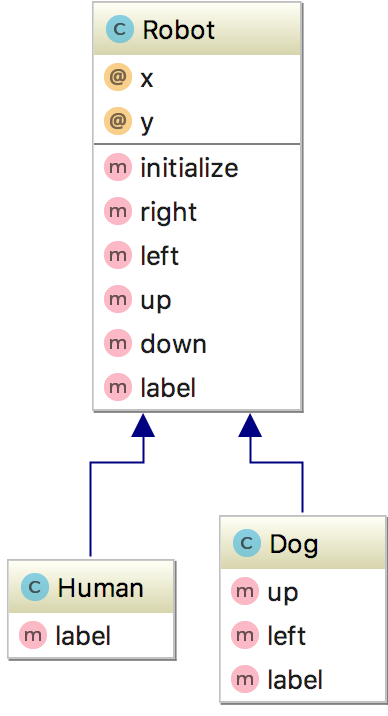
Рис. Отображение диаграммы классов в RubyMine
После того, как классы определены таким образом, мы можем создавать экземпляры класса обычным способом:
```
robot = Robot.new
human = Human.new
dog = Dog.new
```
В классе `Human` все методы, за исключением `label` являются реализацией из класса `Robot`. Но если вы посмотрите на код и диаграмму, то вы увидите, что в классе `Dog`, помимо `label`, реализованы свои собственные классы `up` и `left`. А все остальное также берется из класса Robot.
Этот подход кажется гениальным! Посудите сами, класс `Dog` занимал 28 строк, а сейчас занимает 11. Класс Human мог бы занимать 28 строк, а занимает всего 5. Просто потому что мы воспользовались наследованием! Если мы применим наследование к нашему примеру программы, которую мы писали ранее, то программа будет прекрасно работать. Но, к сожалению, есть один неприятный момент.
Этот момент не технический. Другими словами, в техническом плане все прекрасно. Представьте, что к вам приходит коммерсант, который просит написать программу. Вы пишите программу, она работает и вы получаете деньги. Коммерсант не заглядывает в код, т.к. он не понимает, как этот код работает. Достаточно результата на экране.
Так пишется большинство программ, ведь деньги платит бизнес. А бизнесу важно, чтобы работали бизнес-процессы. Чтобы люди, например, развлекались глядя на то, как четыре собаки хотят пересечь поле с роботами (и, возможно, делали ставки). Бизнесу важно, чтобы пользователи вводили значения в поля и формы и на выходе выдавался правильный конечный результат. Бизнесу не важно что именно происходит внутри и как именно работает программа, работа программы - всегда (или почти всегда) на совести программиста.
Но с точки зрения профессиональной разработки наша программа написана неправильно. Неправильно, потому что объектно-ориентированное программирование очень просто использовать не по-назначению. Это является ошибкой многих программистов, и вообще есть мнение, что “наследование” в объектно-ориентированном программировании не должно существовать (https://www.yegor256.com/2016/09/13/inheritance-is-procedural.html).
Давайте разберемся что же в нашей программе неправильно. Если вкратце - то мы позаимствовали функциональность робота, но сделали это без уважения. Определение наследования из Википедии:
Наследование — концепция согласно которой тип данных может наследовать данные и функциональность некоторого существующего типа, способствуя повторному использованию компонентов программного обеспечения.
Вроде бы все правильно. Есть тип данных Human, есть тип данных Dog. Есть существующий тип Robot. Мы использовали наследование и способствовали повторному использованию кода, так в чем же дело? Для этого обратимся к определению слова “Inherit” (наследовать) в Оксфордском словаре:
Derive (a quality, characteristic, or predisposition) genetically from one's parents or ancestors.
Перевод: Получать (качество, характеристику, предрасположенность) генетически от какого-либо родителя или предка.
Дело в том, что у человека с роботом и у собаки с роботом нет ничего общего. Они не могут получить характеристики робота генетически. То, что мы сделали - генная инженерия, мы просто скопировали функциональность и “притворились”, что робот - это предок человека и собаки. Такого ведь не бывает в реальном мире? Более того, методы робота становятся основной для двух остальных классов, и, следовательно, при изменении робота нам нужно думать о том, чтобы случайно “не повредить” человека и собаку.
Робот уже не живой организм. Вроде бы он независимый и у него нет ничего общего с человеком и собакой, но нам нужно держать в голове мысль о том, что у робота существует два потомка. И вся эта сложность только из-за того, чтобы избежать дублирования кода и сделать нашу программу короче!
Другими словами, мы выбрали неправильную абстракцию. Это самая часто встречающаяся ошибка объектно-ориентированных программистов. Конечно, ошибки делать всегда хорошо, мы на них учимся. Но чтобы увидеть ошибку в объектно-ориентированном проектировании, требуется опыт. А само объектно-ориентированное программирование требует большей силы мысли.
Начинающему программисту очень просто попасть в ловушку и выбрать неправильную абстракцию. Сэнди Мэтз говорит о том, что дублирование кода обходится значительно дешевле (в будущем), чем неверная абстракция. И если вы не уверены в выбранной абстракции, то лучше продублировать код (см. https://www.sandimetz.com/blog/2016/1/20/the-wrong-abstraction). Получается, что все это наследование, которое мы только что разобрали, не нужно и можно было просто обойтись дублированием кода?
Да, можно было просто обойтись дублированием кода. Это то, с чем стараются бороться некоторые команды любыми средствами. Однако, дублирование кода не всегда плохо. Скажем, в тестировании программ (разбирается дальше в этой книге) дублирование кода не является большой проблемой. Если мы говорим не о тестах, а об обычных программах, то в некоторых случаях тоже лучше продублировать код, чем пытаться от него избавиться (если вы упоминаете об этом на интервью, то вашу точку зрения нужно будет аргументированно подтвердить).
В руби существует отдельный механизм для дублирования кода - модули. Т.е. первый способ избавления от неверной абстракции может состоять в создании и использовании модуля.
Модуль (module) - это участок программы, который можно “включить” (include) в тот или иной класс:
```
module MyModule
attr_accessor :x, :y
def initialize(options={})
@x = options[:x] || 0
@y = options[:y] || 0
end
def right
self.x += 1
end
def left
self.x -= 1
end
def up
self.y += 1
end
def down
self.y -= 1
end
end
class Robot
include MyModule
def label
'*'
end
end
class Dog
include MyModule
def up
end
def left
end
def label
'@'
end
end
class Human
include MyModule
def label
'H'
end
end
```
Выше мы определили модуль с помощью конструкции `module … end` и включили его в наши классы с помощью ключевого слова `include`. Диаграмма классов при этом выглядит следующим образом:
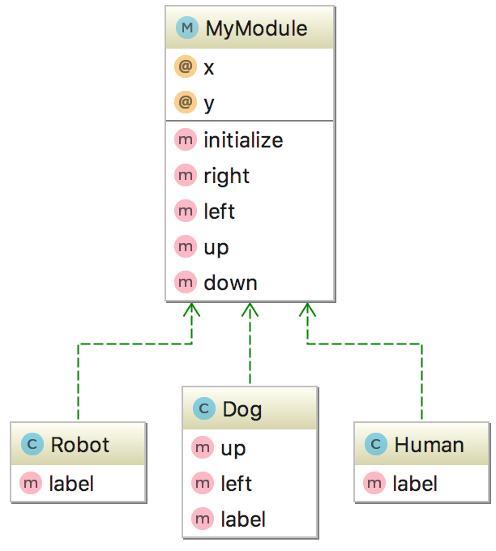
Рис. Диаграмма классов, построенная в RubyMine. Три класса делят (share, или копируют) функциональность с помощью модуля.
Визуально это похоже на наследование, но только в случае с модулями все немного более честно. Мы не говорим о том, что мы нашли что-то генетически общее между этими сущностями. Мы не говорим о том, что мы выделили главную абстракцию и несколько ее подвидов. Мы заявляем честно - мы скопировали код из модуля в эти три класса.
Subtyping (субтипирование) против наследования
Помимо модулей существует еще один, более верный способ “наследовать данные и функциональность, способствуя повторному использованию”. Речь идет не о том, чтобы бездумно использовать механизм наследования для копирования методов и переменных из любого объекта в любой другой, а о том, чтобы на самом деле выделить подтипы.
Например, утка, кукушка и страус это подтипы одного типа - птица:
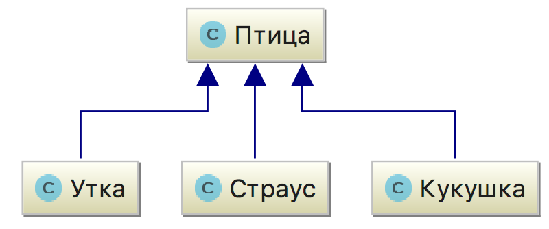
В этом случае на основе нашего жизненного опыта мы можем сказать - да, подтипы правильные, а значит и абстракция целиком верна. И это, кстати, то что разрешает (enables) полиморфизм. Вне зависимости от того, какая именно это птица, мы можем: напоить птицу, накормить птицу, выпустить погулять и так далее.
С технической точки зрения, в языке руби subtyping осуществляется также, как и наследование. Например:
```
class Птица
end
class Утка < Птица
end
class Кукушка < Птица
end
class Страус < Птица
end
```
В языке C# мы бы воспользовались интерфейсами (а не наследованием):
```
interface Птица {
void Накормить();
void Напоить();
}
interface Утка : Птица {
}
interface Кукушка : Птица {
}
interface Страус : Птица {
}
```
Особенность интерфейсов в том, что в них нет кода - только определение методов. Поэтому нельзя бездумно скопировать код. Но в динамически типизированных языках типа руби, мы или держим интерфейсы в голове, или вводим некий абстрактный класс (“Птица” выше) и используем наследование.
Для записи программы с человеком, роботом и собакой можно было бы использовать следующий подход. Ввести некий абстрактный класс, который не имеет смысла сам по себе. И унаследовать от него все три сущности. Например, можно ввести абстрактный класс Player (игрок) и создать следующую взаимосвязь между классами:
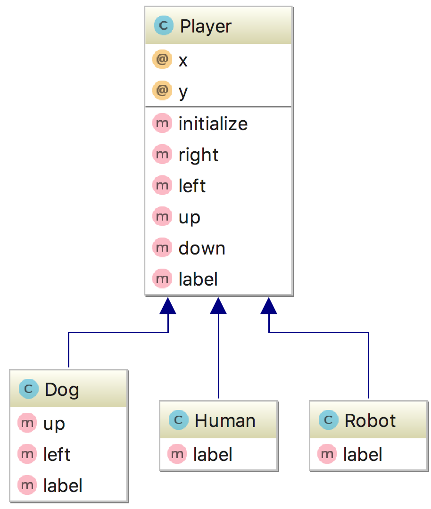
Этот подход очень похож на использование модулей. Правда, в этом случае мы точно говорим - мы видим абстракцию, это некий “игрок”. Чего бы не случилось в игре, у игрока будут всегда реализованы методы left, right, up, down, label, всегда будут известны координаты. Любой метод, который будет принимать объект Dog, Human или Robot может рассчитывать на то, что эти методы присутствуют. Мы также даем понять, что Dog, Human и Robot - это разные сущности. У них есть что-то общее, они являются игроками на поле. Но мы не наследуем человека от робота, как это было раньше. Все общее между этими объектами - методы игрока.
Задание: не подсматривая в код, который написан чуть ниже, попробуйте написать программу по диаграмме классов на представленном рисунке.
Код программы выглядит следующим образом:
```
class Player
attr_accessor :x, :y
def initialize(options={})
@x = options[:x] || 0
@y = options[:y] || 0
end
def right
self.x += 1
end
def left
self.x -= 1
end
def up
self.y += 1
end
def down
self.y -= 1
end
def label
end
end
class Robot < Player
def label
'*'
end
end
class Dog < Player
def up
end
def left
end
def label
'@'
end
end
class Human < Player
def label
'H'
end
end
```
Мы использовали subtyping и одновременно наследование для копирования функциональности. К сожалению или к счастью, в языке руби нет интерфейсов, поэтому сделать классический subtyping и определить конкретный интерфейс (тип) не получится.
Руби является очень гибким языком и дает свободу: все, что вы делаете, остается на вашей совести. Выделить абстракцию можно множеством способов. Более того, язык руби не запрещает создавать экземпляр абстрактного класса Player. Все из-за того, что в руби нет понятия об абстрактных классах. Также ничто не мешает программисту изменить классы Dog, Human или Robot, добавив в каждый из этих классов разные методы, которые бы “испортили” универсальный интерфейс.
Возможно, это не такая большая проблема, когда программа небольшая. Но представьте, что вы пришли на новую работу и перед вами большой проект. Программист Геннадий создал класс Player, вы посмотрели через git (система контроля версий и изменений файлов) - файл “player.rb” был добавлен 5 лет назад. Программист Геннадий больше не работает в компании. Как узнать о его намерении? Можно ли сейчас, через 5 лет, создавать экземпляр класса Player? А если очень хочется?
В любом случае, использовать или не использовать наследование в языке руби - решать вам. Если вы не уверены в выбранной абстракции, используйте модули и честно копируйте код. Если вам кажется, что абстракция правильная, то создавайте абстрактный класс, который будет содержать общие для всех подклассов методы и данные.
Существуют методы экземпляра класса (instance methods), а существуют методы класса (class methods). В других языках программирования методы класса называются "статические методы". То же самое можно сказать и про переменные, существуют instance variables, а существуют class variables. Разницу между двумя разными типами методов (и переменных) необходимо усвоить, т.к. она часто встречается в литературе. Но в чем же заключается эта разница?
Представьте себе чертёж какой-либо детали. На чертеже присутствует рисунок, в котором указаны размеры, по этому образцу будет изготавливаться деталь. Это все переменные и методы экземпляра, они не имеют смысла без создания экземпляра этой детали. Но внизу чертежа есть также место, в котором указан автор чертежа. Представьте, что было изготовлено 1000 деталей и вдруг меняется автор. Каким-то образом оказалось, что на самом деле над чертежом работал не Иванов, а Сидоров. Поэтому берут стерку, и стирают фамилию "Иванов" на самом чертеже и пишут новую.
Для тысячи изготовленных деталей это не очень важно, они будут прекрасно работать и без этой мета-информации. Но если кто-то спросит "А кто сделал такой хороший болт?", то ответ уже будет другим. Так вот, мета-информация это и есть переменные и методы класса (class methods, class variables, часто говорят "статические методы", "статические переменные"). А размеры и другие технические детали это обычные переменные и методы экземпляра (instance methods, instance variables).
Многие программисты не любят статические методы и переменные, и этому есть объяснение. Наверное, не очень приятно когда при изготовлении деталей в какую-либо рабочую тетрадь была записана фамилия инженера "Иванов", а потом эта фамилия на чертеже поменялась. Придется просматривать все рабочие тетради и делать там исправления. Но это еще пол-беды. Представьте, что на чертеже указан материал изготовления, и материал был "сталь", а стал "пластик". Уже готовые детали, которые захотят узнать о том, из чего они сделаны будут получать неправильный ответ.
Поэтому статические методы и статические переменные нужно использовать с осторожностью, особенно когда в одном классе существуют как статические, так и нестатические переменные или методы. Для лучшего понимания рассмотрим класс со статическим методом:
```
class Person
def self.say_something
puts 'Hi there!'
end
end
Person.say_something
```
В последней строке мы вызываем этот класс особым образом, указывая имя класса и после этого название метода. Обратите внимание, что мы не создаем экземпляра класса. Сравните этот код с аналогичным, но без использования статического метода:
```
class Person
def say_something
puts 'Hi there!'
end
end
dude = Person.new
dude.say_something
```
Мы объявили переменную `dude`, которая представляет собой экземпляр какого-то человека. И после этого мы просим этот экземпляр что-нибудь сказать.
Кажется, что две программы выше выполняют одну и ту же функцию, но все меняется, когда появляется состояние. Представим, что нам нужно чтобы человек сказал свое имя. Что мы сделаем, когда мы объявляем программу обычным образом? Передадим в конструктор имя, которое и будет частью состояния:
```
class Person
def initialize(name)
@name = name
end
def say_your_name
puts "My name is #{@name}"
end
end
dude = Person.new('Sam')
dude.say_your_name
```
Все, что написано выше до последней строки - подготовительная работа для создания живого организма. Когда он создан, вызывается `dude.say_your_name`. Объект `dude` живой, у него есть состояние. Можно было бы задать и другие параметры - давление крови, список друзей и так далее. Но когда мы говорим про статический класс, все выглядит иначе. Чтобы вывести имя нам нужно передать его в качестве аргумента:
```
class Person
def self.say_your_name(name)
puts "My name is #{name}"
end
end
Person.say_your_name('Sam')
```
Несмотря на то, что программа выглядит проще, в ней нет живого объекта. Есть только имя, которое существует независимо ни от чего. Мы вроде бы обращаемся к человеку (ведь класс называется "Person"), но этот класс не представляет живого человека. Можно написать:
```
Person.say_your_name('Sam')
Person.say_your_name('Pat')
Person.say_your_name('Val')
```
И все это будет исполнено. Это не выглядит естественно. Программа выглядела бы более правильно, если бы класс и методы назывались иначе:
```
class Megaphone
def self.say_loudly(whatever)
puts whatever.upcase
end
end
Megaphone.say_loudly('Hello')
```
Т.е. существует какой-то мегафон, возможно в единственном виде, нигде таких больше нет. И в этот мегафон можно что-то сказать, и он будет говорить громко. В этом случае использование статического метода выглядит оправдано, с некоторыми оговорками. Даже в этом случае мы можем сказать "а ведь мегафон может быть разного цвета, иметь разные характеристики". Возможно это не важно сейчас, но вы никогда не знаете что будет в будущем, вдруг потребуется раскрасить мегафон в разные цвета?
Мы пришли к выводу, что иногда статические методы использовать оправдано, а иногда в них не много смысла. Многие профессиональные программисты советуют избегать статических методов, но правда состоит в том, что статические методы присутствуют в сторонних библиотеках, фреймворках, а также в самом языке руби. Поэтому вам придется с ними сталкиваться.
Правило хорошего тона заключается в том, чтобы использовать статические методы там, где состояния нет и точно не будет. Но в этом случае инструмент статического анализа кода Rubocop может выдать предупреждение о том, что "если не планируется создавать экземпляры класса, то лучше использовать модули", см. https://github.com/rubocop-hq/ruby-style-guide#modules-vs-classeshttps://github.com/rubocop-hq/ruby-style-guide#modules-vs-classes
Поэтому более правильным будет использовать модуль, а не статический класс:
```
module Megaphone
module_function
def say_loudly(whatever)
puts whatever.upcase
end
end
Megaphone.say_loudly('Hello')
```
(значение module_function объясняется по той же ссылке чуть ниже)
Так мы и пришли к выводу, что делать классы только со статическими методами не рекомендуется - нужно использовать модули. А модуль это по сути набор методов, сгруппированных по какому-либо признаку. По какому именно признаку - решает только программист. В языке руби существуют модули, которые предназначены для работы с файловой системой. Предполагается, что файловая системе одна, и мы можем только записать или только прочитать данные, и не может существовать более одной файловой системы в одной операционной системе (что в общем-то неправда, но мы можем с этим согласиться).
Объектно-ориентированное программирование было создано как средство для борьбы с возрастающей сложностью и запутанностью кода. Основная задача ООП сугубо экономическая - избавиться от дублирования кода, упростить систему, сделать ее более поддерживаемой, и сократить финансовые расходы на разработку.
Однако, существует множество других мнений. Некоторые программисты считают, что “дублирование кода значительно дешевле, чем неправильно выбранная абстракция”. В этом есть определенный смысл, ведь ООП это не только инкапсуляция, полиморфизм и наследование. Это также приемы и шаблоны проектирования, которые имеют свои преимущества и недостатки.
Чтобы правильно применить шаблон, нужна не только теоретическая подготовка, но и опыт. Часто случается, что над проектом работает несколько программистов, при этом некоторые программисты уходят из команды и новые приходят на их место. Существует ли гарантия того, что абсолютно все из них будут знакомы с шаблонами проектирования и смогут понять все тонкости ООП?
Да и у людей с серьезной теоретической базой и многолетним опытом может быть свой взгляд на вещи. Часто эти взгляды сходятся, и сторонники и противники ООП разделяются на два лагеря. Вот что говорят про ООП некоторые известные профессионалы:
Эдсгер Вибе Дейкстра (нидерландский учёный, труды которого оказали влияние на развитие информатики и информационных технологий):
“Объектно-ориентированные программы предлагаются как альтернатива правильным”.
“Объектно-ориентированное программирование исключительно плохая идея, которая могла зародиться только в Калифорнии”
"TUG LINES," Issue 32, August 1989
Пол Грэм (американский предприниматель, эссеист, программист): “ООП представляет собой обоснованный способ написания спагетти-кода”, http://www.paulgraham.com/hundred.html
Роберт Пайк (канадский программист, разработчик операционных систем, один из разработчиков языка программирования Go): “ООП, идея которого не более чем программирование с использованием данных, привязанных к определенному поведению - мощнейшая идея! Но не всегда лучшая идея… Иногда данные это просто данные, а функции это просто функции”.
См. еще https://www.yegor256.com/2016/08/15/what-is-wrong-object-oriented-programming.html
Язык руби предлагает разработчику простоту и намеренно упрощает классическое ООП, реализованное в Си++ и Java. Несмотря на то, что иногда простота и свобода использования языка руби способствует написанию не самого качественного кода, практика показала, что руби имеет право не только называться объектно-ориентированным языком, но и может эффективно решать реальные бизнес-задачи.
Ключ к эффективному созданию объектно-ориентированных программ заключается в том, чтобы не усложнять архитектуру, а упрощать. Иногда нужно идти на компромиссы: дублирование кода - не такая уж и плохая вещь, если концепция и общее видение в голове еще не утряслось. Часто понимание системы, принципов взаимодействия разных сущностей приходит со временем.
При создании программ помните, что у кода есть два читателя: человек и компьютер. Компьютеру все равно как вы пишите программу, если она работает. Человеку нужно время. Часто этот человек не вы сами, а ваш коллега, который может быть только через несколько лет будет смотреть на ваш код. Так постарайтесь его сделать простым! Написать сложный код просто, а написать простой - сложно. Желаем успехов в объектно-ориентированном программировании!
Отладка (debugging) это ничто иное как процесс поиска багов (ошибок). Само слово “debugging” говорит об избавлении от багов (de-bug). Когда компьютеры были очень простыми, об отладке программ в том виде, в котором она существует сейчас, никто не слышал. Однако, существовали способы проверить работоспособность готового кода. Но зачем проверять код?
Обычно небольшая программа работает без каких-либо проблем, но когда программа становится сложнее, возникает вероятность возникновения ошибки. Например, в вашей программе одна конструкция if...else, то существует два варианта работы программы, в зависимости от условия “if”. Если таких конструкции две, то вариантов работы программы уже четыре, т.к. в каждом условии “if” запускается та или иная ветвь кода. Для десяти условий “if” вариантов выполнения одной и той же программы может быть уже 1024. И это если не учитывать ввода пользователя.
В реальной жизни обычного программиста отладка занимает примерно столько же времени, сколько и написание кода. Авторам книги удавалось создать приложение практически без использования отладчика, путем упрощения программы, правильного (на наш скромный взгляд) использования объектно-ориентированного программирования и тестов (см. https://github.com/ro31337/libretaxi). Однако, любому начинающему программисту просто критически необходимо знать о том, как отлаживать программу.
Существует несколько способов отладки программы, написанной на языке руби. Вот некоторые из них:
С использованием вывода в консоль (puts, print)
С использованием консольного отладчика
С использованием отладчика, встроенного в текстовый редактор или среду разработки (IDE)
Рассмотрим подробнее каждый из способов выше.
Отладка с использованием вывода информации в консоль
Это один из самых эффективных способов отладки программы, несмотря на кажущуюся простоту. В любом месте программы мы можем написать выражение:
```
puts something.inspect
```
“inspect” это метод, который реализован в объекте любого типа. Этот метод возвращает строковое представление объекта. Внимательный читатель спросит - а зачем использовать “puts something.inspect”, когда можно просто написать “puts something”?
Дело в том, что `puts nil` и `puts ""` выведут на экран пустую строку. Тогда как с “.inspect” на экран будет выведено `nil` и `""` соответственно:
```
$ pry
> puts nil
> puts nil.inspect
nil
> puts ""
> puts "".inspect
""
```
Для тех, кто работает с фреймворком Rails, полезна будет следующая конструкция:
```
puts '=' * 80
puts something.inspect
puts '=' * 80
```
Код выше напишет 80 знаков “равно”, потом переменную, а потом еще 80 знаков “равно”. Вывод переменной в этом случае не затеряется среди “простыни” служебных сообщений. Чтобы прервать выполнение программы на этом участке кода, можно воспользоваться ключевым словом “raise”, которое выбросит исключение (стандартную ошибку) и завершит работу:
```
puts '=' * 80
puts something.inspect
puts '=' * 80
raise
```
Т.к. руби - язык с динамической типизацией, по исходному коду не всегда можно сказать где именно определен тот или иной метод, пока программа не запустится и не дойдет до определенной точки. В RubyMine существует комбинация клавиш Cmd + B (на macOS) или Ctrl + B (на ОС Windows и Linux), которая покажет где именно находится тот или иной метод. Однако, RubyMine не всегда способен определить точное месторасположение вызываемой функции. В этом случае поможет следующая конструкция:
```
puts method(:something).source_location
```
Если в объекте определен метод “something”, то на экран будет выведен путь к файлу с номером строки. Если код выполняется в цикле, то иногда полезно комбинировать “if” и “puts”:
```
puts something.inspect if i == 100
```
В случае если требуется узнать стек вызова (последовательность вызова функций), можно вывести массив “caller”. Это зарезервированное слово, которое доступно в любом месте:
```
def random_pow
pow(rand(1..10))
end
def pow(x)
puts "=" * 80
puts caller
puts "=" * 80
x ** 2
end
puts random_pow
```
Результат работы программы:
```
========================================================
-:2:in `random_pow'
-:12:in `<main>'
========================================================
64
```
Мы видим, что первый вызов функции “random_pow” произошел на 12 строке, а второй вызов на 2-ой. Таким образом, `caller` ничто иное как call stack (стек вызовов).
В языке JavaScript существует похожий метод отладки, только вместо `puts` нужно использовать `console.log`, который может принимать один или несколько параметров и также выводит информацию в консоль:
```
console.log(some_variable);
```
Существует похожий метод, который выводит более подробную информацию об объекте:
```
console.dir(some_variable);
```
О том, что такое JavaScript консоль мы поговорим в разделе про отладку с IDE.
Отладка с использованием консольного отладчика
Мы уже знакомы с альтернативным REPL, который называется Pry. В pry реализовано больше возможностей, чем в irb. Также pry может использоваться не только как REPL, но и как отладчик. В этой главе мы рассмотрим минимальные возможности pry в качестве отладчика. Умение пользоваться этим инструментом может сэкономить вам массу времени.
Если по каким-то причинам pry еще не установлен в вашей системе (а это можно проверить с помощью консольной команды `which pry`), то это легко исправить с помощью команды:
```
$ gem install pry pry-doc
```
С помощью этой команды мы устанавливаем два gem’a. Сам pry и pry-doc, который является плагином для pry и предоставляет расширенную документацию по “нативным” (native) методам языка руби.
Запускать pry мы уже умеем. А команда “help” выводит справку по возможным командам:
```
$ pry
> help
```
По каждой команде из этого списка можно получить подробную справку, если ввести название команды и через пробел в конце добавить `-h`. Возможности pry раскрываются более полно не в качестве REPL, а в качестве отладчика. Посмотрим на программу, которая возводит в квадрат какое-то случайное число:
```
def random_pow
pow(rand(1..10))
end
def pow(x)
x ^ 2
end
puts random_pow
```
После того как мы запустили эту программу, на экран было выведено число 6. Очень странно, ведь функция rand на второй строке генерирует целое случайное число от 1 до 10, а следовательно возможный результат это одно из следующих значений: 1, 4, 9, 16, 25, 36, 49, 64, 81, 100 (в программе намеренно допущена ошибка, сможете ли вы ее увидеть?).
Как найти ошибку в этой программе? Один из способов - воспользоваться puts и привести программу к следующему виду:
```
def random_pow
pow(rand(1..10))
end
def pow(x)
puts "Pow parameter: #{x}"
x ^ 2
end
puts random_pow
```
После запуска программы мы можем увидеть передаваемый в функцию параметр и результат вычисления:
```
Pow parameter: 3
1
```
Хм. Входной параметр 3, а тройка в квадрате это 9, но никак не 1. Что же тут происходит? В случае с такой простой программой опытный программист найдет ответ довольно быстро. Но когда программа большая, а функция скрыта и “добраться” до ее вызова сложно (например, нужно пройти через несколько этапов - регистрация, подтверждение емайла, и т.д.), изменять каждый раз программу и проходить эту последовательность действий может быть очень накладно - потребуется много времени. Поэтому нам нужен другой способ.
Программисты говорят - нужно установить breakpoint (точку остановки) в определенном месте программы. И когда программа дойдет до этой точки, она будет остановлена и управление будет передано человеку. Человек с помощью специальных инструментов сможет проанализировать программу именно в этой точке: посмотреть на переменные, переданные параметры, на стек вызова, другими словами - иметь на руках какой-то текущий контекст, а не просто код на экране и теоретическое представление о том, как он работает.
Давайте установим breakpoint с помощью pry:
```
require 'pry'
def random_pow
pow(rand(1..10))
end
def pow(x)
binding.pry
x ^ 2
end
puts random_pow
```
Первая строка говорит о том, что мы требуем (require) загрузки библиотеки “pry”. По-умолчанию, для быстроты выполнения программы, абсолютно все установленные gem’ы не загружаются. Поэтому нужно воспользоваться специальным синтаксисом и написать “require”. Разумеется, что gem при этом должен быть установлен в вашей системе. С точки зрения руби gem это просто сторонний код, который написал какой-то неизвестный разработчик. Поэтому при установке gem’ов (команда “gem install …”) они скачиваются из Интернета, а при “require” они загружаются в память с вашего диска.
Примечание: в будущем вы будете использовать фреймворк Rails, в котором достаточно поместить gem в специальный список (файл `Gemfile`), и если все сделать правильно, то все gem’ы из этого списка будут загружены в память автоматически.
“binding.pry” мы поместили на ту же строку, где раньше был puts с выводом отладочной информации. “binding.pry” это специальный синтаксис, который нужно запомнить. Он говорит о том, что в этом месте должна произойти остановка программы и должен быть вызван отладчик.
Обратите внимание, что раньше мы запускали “pry” непосредственно из командной строки. А в этот раз мы запустили программу обычным способом:
```
$ ruby app.rb
```
Программа запустилась, было определено два метода, был запущен метод random_pow, который в свою очередь вызвал pow, и в котором мы в итоге оказались:
```
$ ruby app.rb
From: /Users/ro/work/book/app.rb @ line 8 Object#pow:
7: def pow(x)
=> 8: binding.pry
9: x ^ 2
10: end
[1] pry(main)>
```
Сейчас вместо “пустого” состояния pry, которое мы раньше получали при запуске “pry” из терминала, мы находимся в состоянии запущенной программы, но с тем же самым инструментом “pry”. Что это нам дает в плане отладки:
Мы можем посмотреть значения переменных (например, переменной “x”)
Мы можем изменить значения переменных
Мы можем вызвать какой-либо метод один или несколько раз
Мы можем вставить (например, скопированный из буфера обмена код) и посмотреть как он работает
Мы можем попытаться вычислить результат выполнения следующей строки (например, путем ее копирования или просто ввода с клавиатуры) и посмотреть что произойдет
Другие возможности “pry”, когда мы находимся в точке остановки:
Команда “next” выполнит следующую строку. После этого снова можно посмотреть значение переменных, чтобы понять что не так с программой
Команда “exit” вернет выполнение в программу
Команда “whereami” (от англ. Where Am I - где я?) может быть полезна когда, например, после вывода большого текста на экран (или очистки экрана кодом из нашей программы) мы все еще хотим знать в каком месте программы мы в данный момент находимся
Научиться пользоваться сразу всеми командами за один раз вряд ли получится, поэтому выше перечислены только основные команды без которых не обойтись. Рекомендуем почаще пользоваться командой “help” и пробовать новые возможности.
Но что делать в нашем случае и как найти ошибку? Давайте попробуем вывести текущее значение “x”, а потом ввести с клавиатуры следующую строку (`x ^ 2`) и посмотреть на результат выполнения этой операции:
```
[2] pry(main)> whereami
From: /Users/ro/work/book/app.rb @ line 8 Object#pow:
7: def pow(x)
=> 8: binding.pry
9: x ^ 2
10: end
[3] pry(main)> x
2
[4] pry(main)> x ^ 2
0
```
Любопытно! С помощью отладчика мы узнали, что значение “x” равно двум, а результат вычисления выражения “x ^ 2” равен нулю. Что является не тем результатом, который мы ожидаем. Мы ожидаем, что два в квадрате будет равно четырем, но не нулю!. Другими словами, с помощью “pry” удалось найти ту строку, в которой присутствует ошибка.
Запись `x ^ 2` является неправильной в языке руби (но правильной в некоторых других языках). Для возведения в степень необходимо использовать `**`. Правильная программа должна выглядеть следующим образом:
```
def random_pow
pow(rand(1..10))
end
def pow(x)
puts "=" * 80
puts caller
puts "=" * 80
x ** 2 # ПРАВИЛЬНОЕ ВОЗВЕДЕНИЕ В КВАДРАТ
end
puts random_pow
```
Мы познакомились с основными возможностями pry. Отныне если в вашей программе возникнет ошибка, вы будете знать как ее найти: установить breakpoint и попытаться понять что происходит во время работы программы.
Отдельно хотелось бы отметить малознакомую, но полезную команду `system('reset')`. Эта команда не является стандартной в pry: `system` это просто метод языка руби, который выполняет команду оболочки `reset` (не путайте с командой `reboot`, которая перезагружает компьютер). Если ввести `system('ls')`, то можно получить список файлов в текущей директории, а `system('pwd')` покажет путь к текущей директории процесса.
Справка по `reset` (запустите `man reset` в вашем терминале) говорит о том, что команда используется для сброса настроек оболочки в настройки по-умолчанию.
Что же это могут быть за настройки и зачем вызывать `reset` из “pry”? Если вы разрабатываете небольшую программу, то эта команда вам не нужна. Но на практике программист обычно работает с (относительно) большим Rails-проектом. В больших проектах существует множество gem’ов, которые в зависимости от разных обстоятельств, могут выводить в консоль отладочную информацию в самый неподходящий момент. Такая же отладочная информация может поступать и от самого приложения (например, вывод отладочной информации в консоль по таймауту). Иногда эта информация сбивает каким-то образом настройки терминала и возникает необходимость вернуть эти настройки обратно без перезапуска отладчика. Сделать это можно с помощью `system('reset')` или просто взяв слово `reset` в обратные кавычки (backticks):
```
[1] pry(main)> `reset`
(произошла очистка экрана)
""
[2] pry(main)>
```
Отладка с использованием графического отладчика
До этого момента мы использовали только консольные инструменты для отладки. Некоторые программисты предпочитают не только консольные инструменты отладки, но и консольные инструменты разработки - например, текстовые редакторы, которые работают только в вашем терминале (например, Vim, Emacs и другие).
Преимущество консольных инструментов в том, что они работают на любом “хосте”: на компьютере разработчика или на удаленном сервере с установленным Linux (который, в большинстве случаев, настроен исключительно на обслуживание подключений, но никак не для разработки). Другими словами, имея навык работы с консольными инструментами можно отладить программу не только на локальном компьютере, а практически на любом сервере - достаточно доступа по SSH.
Однако, удобство графических средств отладки сложно переоценить. Авторы книги не часто практикуют отладку программ на руби в графической среде разработки, но упомянуть о ней стоит. Вот как выглядит отладчик в платной IDE RubyMine:

Рис. Графический отладчик в IDE RubyMine.
Как видно из рисунка, для отладки программы в RubyMine нет необходимости вводить “binding.pry” и устанавливать gem “pry” (правда, RubyMine автоматически установит другой gem). Слева от шестой строки (см.рисунок выше) с помощью указателя мыши можно активировать breakpoint: появится красный кружок. Отладка запускается из меню: Run → Debug:
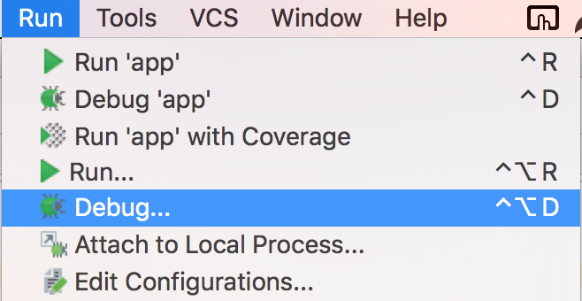
Рис. Запуск отладки в RubyMine
Когда отладчик запущен и программа остановилась в точке остановки, мы, также как и в pry, можем выполнять команды в консоли, переходить к следующей строке (F8 вместе “next”), добавлять другие точки остановки и пользоваться всеми преимуществами графической IDE (например, перейти с помощью комбинации ⌘ + B в определение какого-либо метода).
Использовать графический отладчик немного проще, чем pry. Однако, один из недостатков RubyMine заключается в сложности настройки самой среды. Некоторые опции могут находиться в не самых очевидных местах:
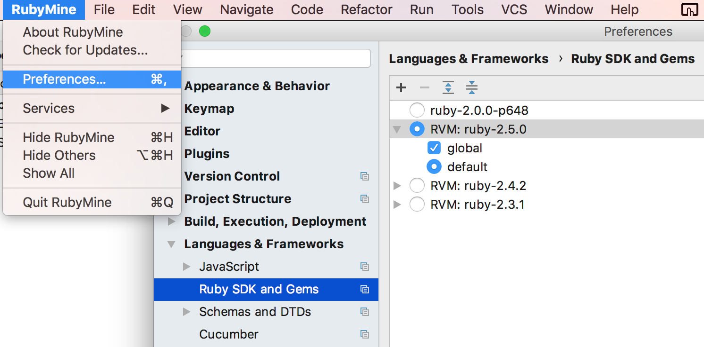
Рис. Настройка RVM в RubyMine
Но с другой стороны, это дело привычки. Также эта среда разработки является платной (требуется годовая подписка), и техническая поддержка всегда готова ответить на ваши вопросы (в т.ч. на русском языке).
Практическое занятие: подбор пароля и спасение планеты
Мы познакомились с отладчиком, а значит теперь сможем не только создавать программы, но и более уверенно работать с кодом. Отладчик позволяет приостановить выполнение программы и заглянуть внутрь, а это значит что мы сможем наблюдать за поведением программы когда это поведение от нас не зависит.
Представьте, что вы создаете программу, которая скачивает какие-то данные из сети. Все написано верно, но ответ от сервера это всегда неопределенность. Иногда может случиться так, что сервер выдает ошибку. Иногда нет соединения с Интернетом. Иногда приходит ответ в совершенно неожиданном формате. В таких случаях можно установить брейкпоинт и посмотреть на сам ответ.
В этой главе мы сделаем практическое упражнение. Машины захватили мир, вас зовут Джон, и вы должны спасти планету. Для того, чтобы это сделать, нужно пройти на центральный сервер и ввести пароль. Однако, вам известно только имя пользователя - “admin”. Пароль предстоит подобрать.
Для выполнения этого упражнения нам потребуется установить Docker (далее “докер”, также известный как “Docker for developers” или “Docker community edition (CE)”). Скачать докер для Windows или macOS можно на официальном сайте: https://www.docker.com/get-started.
Для Linux возможна установка тремя совершенно разными способами: 1) через добавление репозитория 2) через скачку deb-файла 3) через вспомогательный скрипт. Все способы установки описаны на сайте https://docs.docker.com/install/linux/docker-ce/ubuntu/, но самая простая установка докера на Linux - через скрипт:
```
$ curl -fsSL https://get.docker.com -o get-docker.sh
$ sudo sh get-docker.sh
```
После этого возможно потребуется перезагрузить компьютер и терминал. Проверьте, что докер установлен и работает:
```
$ docker -v
Docker version 17.06.2-ce, build cec0b72
```
После того, как докер установлен, можно приступать к “поднятию” тренировочного хоста. Если вкратце, то докер это система виртуализации. Она позволяет запустить на вашем компьютере мини-операционные системы. Эти мини-ОС созданы на базе Linux. Другими словами, на вашем компьютере может быть запущена сотня мини-линуксов. Но откуда возникла эта необходимость?
Дело в том, что программисты работают с большим количеством дополнительного (third party) софта. Например, базы данных, веб-серверы, системы кеширования. Программные системы становятся все сложнее, и для локальной разработки порой нужно установить несколько совершенно разных баз данных. Но вот незадача, бывает так, что две базы данных требуют совершенно разной, несовместимой конфигурации. Можно настроить свой компьютер двумя разными способами, но эти способы несовместимы друг с другом (например, требуется разная версия Linux). Что же делать?
На помощь пришел докер. Он позволяет изолировать выполнение программ внутри своей мини-ОС. И позволяет запустить несколько таких мини-ОС одновременно, потому что они изолированы друг от друга. С помощью нехитрых параметров можно сделать так, чтобы программист видел только порты этих мини-ОС (например, порт 1234 и 5555) и не беспокоился о том, что там внутри.
Образ такой мини-ОС создали для вас авторы этой книги. Вы можете скачать его и запустить на своем компьютере с помощью следующей команды оболочки:
```
$ docker rm xxx; docker run -it --name xxx -p 4567:4567 ro31337/rubybook-save-the-planet
```
Команда выше состоит из двух команд:
`docker rm xxx` - удаляет контейнер с именем “xxx” (если он существует)
`docker run -it --name xxx -p 4567:4567 ro31337/rubybook-save-the-planet` (запускает контейнер и “пробрасывает” порт 4567 на локальный хост)
(т.к. общая команда оболочки разделена с помощью точки с запятой, а не с помощью `&&`, то при отсутствии контейнера `xxx`, выполнение не прервется).
Вывод команды (чтобы завершить выполнение контейнера, нажмите Ctrl + C):
```
Unable to find image 'ro31337/rubybook-save-the-planet:latest' locally
latest: Pulling from ro31337/rubybook-save-the-planet
...
Digest: sha256:2502efd4cb6dde62b9998bb5ca203830d013e58b15f68410d07bcd34a83c4127
Status: Downloaded newer image for ro31337/rubybook-save-the-planet:latest
[2018-08-15 02:25:13] INFO WEBrick 1.4.2
[2018-08-15 02:25:13] INFO ruby 2.5.1 (2018-03-29) [x86_64-linux]
== Sinatra (v2.0.3) has taken the stage on 4567 for development with backup from WEBrick
[2018-08-15 02:25:13] INFO WEBrick::HTTPServer#start: pid=1 port=4567
```
Попробуйте пройти по адресу http://localhost:4567/, вы должны увидеть наш экспериментальный веб-сайт:
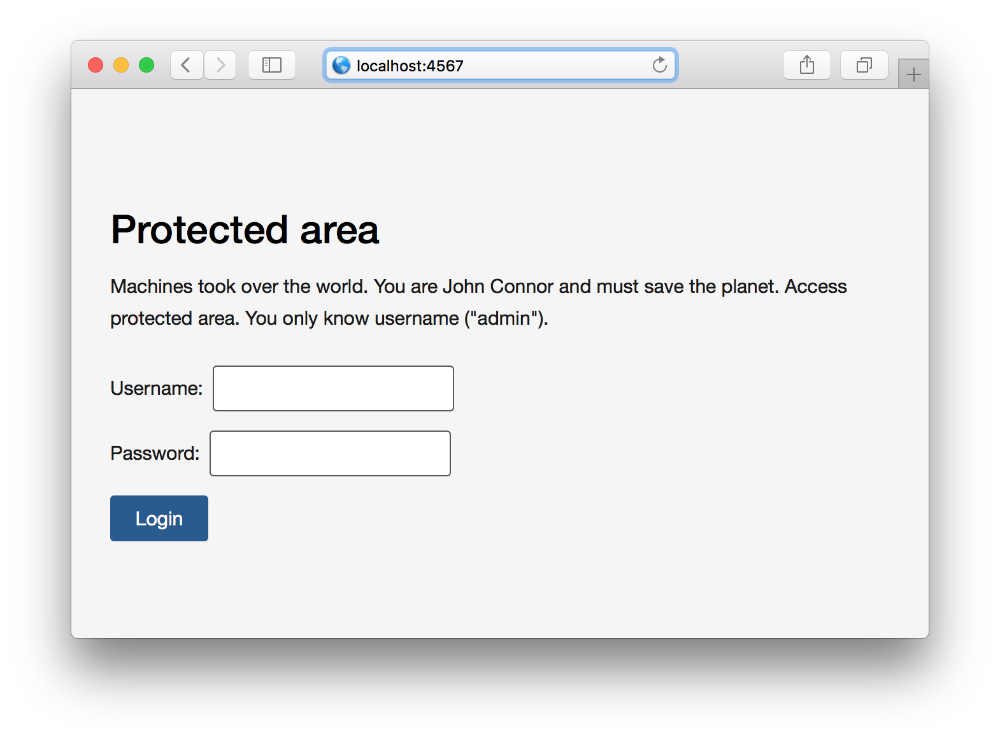
Рис. Сайт к которому попробуем подобрать пароль.
Все, что мы можем сделать - ввести неправильный логин и пароль (попробуйте это сделать). Мы знаем только логин (“admin”), но каким образом можно узнать пароль и спасти планету от машин?
Во-первых, нам потребуется файл с паролями. Он уже находится на нашем хосте по адресу http://localhost:4567/passwords.txt - в нем представлены 10 тысяч самых популярных паролей. Вы можете скачать этот файл к себе в директорию с помощью команды wget:
```
$ wget http://localhost:4567/passwords.txt
```
Точно известно, что один из паролей в этом списке является правильным. Давайте подумаем еще - как мы можем использовать язык руби и наши знания для того, чтобы продвинуться дальше?
Первым правильным шагом была бы итерация по этому списку. Все равно пароль должен быть сохранен в какой-нибудь переменной в нашей программе. Поэтому вначале неплохо было бы разобраться как именно мы можем выполнить итерацию по каждой строке из файла `passwords.txt`.
Существует несколько методов прохода по каждой строке какого-либо текстового файла:
Прочитать содержимое файла в память как большую строку, разбить на строки с помощью `.split("\n")`
Получить содержимое строк какого-либо файла сразу в виде массива, и сделать обход массива
Воспользоваться методом, который специально предназначен для чтения строк из файлов
Все методы имеют право на реализацию. Но мы воспользуемся последним вариантом, т.к. “под капотом” этот метод не читает файлы в память целиком, а читает только строки: одну за одной. Представьте, что у вас есть огромный файл на сотни гигабайт, и вы хотите сделать проход по каждой строке. Наверное, не имеет смысла читать его целиком в память, когда можно обойтись без этого и читать по одной строке?
Постойте, скажет внимательный читатель, так ведь в любом случае мы файл прочитаем целиком. Так какая разница - прочитать его сразу или постепенно? Дело в том, что при чтении по одной строке руби будет “избавляться” от предыдущих строк. Это будет происходить автоматически с помощью механизма “сборки мусора” (garbage collection или GC).
Руби достаточно умен, и когда какое-то значение уже не нужно, участок памяти будет помечен к удалению. Позднее, когда будет достигнут какой-то предел (он зависит от разных настроек), все эти помеченные участки будут освобождены. А это значит, что на это место можно будет записать новые данные. Таким образом, мы читаем файл целиком, но читаем его частями. И файл целиком в памяти никогда не хранится. Впрочем, для нашей задачи это несущественные технические детали.
Давайте посмотрим на метод `each_line` из класса `IO` (“IO” расшифровывается как “input output” - “ввод вывод”, этот класс отвечает за операции ввода-вывода, т.к. за работу с диском). Небольшая документация по этому методу доступна по ссылке http://ruby-doc.org/core-2.5.1/IO.html#method-i-each_line
Задание: не подсматривая решение данное ниже, попробуйте обратиться к документации и написать программу, которая считывает из файла все строки и выводит на экран длину каждой строки. Проверьте свой результат.
Ниже представлен код программы, которая считывает каждую строку в файле `passwords.txt` и выводит ее длину:
```
File.new('passwords.txt').each do |line|
password = line.chomp
puts password.size
end
```
Запустим программу:
```
$ ruby ruby save_the_planet.rb
```
Результат работы программы:
```
…
6
5
8
6
6
```
Ура! Мы получили что-то на экране. Однако, настоящий программист никогда себе не верит. Надо каким-то образом проверить, что программа работает. Давайте воспользуемся особенностью оболочки, которая называется “pipe” (“труба”). С помощью “pipe” (`|`) мы перенаправим вывод куда-нибудь еще. Например, в shell-команду `wc -l`. Справка по `wc` (запустите `man wc`) сообщает нам о флаге `-l`:
> The number of lines...
Другими словами, в каждой операционной системе (помимо Windows) существует команда “wc”, которая расшифровывается как “word count”. Если запустить ее с параметром `-l`, то она посчитает строки (lines). Мы подаем на стандартный ввод этойт команды результат работы нашей программы. И считаем количество строк. Должно быть 10000: под одной строке (в виде цифры, но это не важно) на каждую строку из файла “passwords.txt”:
```
$ ruby save_the_planet.rb | wc -l
10000
```
Отлично, результат совпадает и идентичен результату подсчета строк в самом файле `passwords.txt`:
```
$ cat passwords.txt | wc -l
10000
```
Т.к. после запуска `ruby save_the_planet.rb` в терминале нам видны длины последних строк, попробуем вывести на экран пять последних строк из файла `passwords.txt` с помощью команды `tail`:
```
$ tail -5 passwords.txt
eighty
epson
evangeli
eeeee1
eyphed
```
И попробуем сравнить длины этих пяти слов с тем, что выводит наша программа в самом конце:
```
6
5
8
6
6
```
Создавая любую программу, необходимо двигаться постепенно и проверять себя на каждом шаге. Ошибка, которую начинающий программист мог допустить в этом примере - забытый оператор `chomp`. В итоге вывод выглядел бы как `8, 7, 10, 8, 8`, а это на два символа больше в каждом слове. Файл `passwords.txt` содержит нестандартное (для ОС семейства Linux) окончание строки: CRLF (“\r\n”) вместо LF (“\n”).
Следующий шаг в нашем задании - непосредственно отправка данных на сервер. Давайте посмотрим на то, как это происходит, когда пользователь вводит какие-либо данные. Для этого нам понадобится браузер Chrome. Откройте нашу тестовую страницу http://localhost:4567
Нажмите правой кнопкой (или двумя пальцами одновременно на macOS) на любой свободной области и выберите опцию “Inspect” из выпадающего меню:
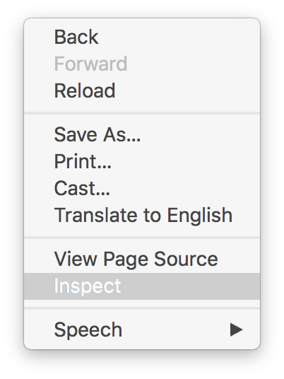
Рис. Контекстное меню в Google Chrome. При выборе “Inspect” вызывается Chrome Developer Tools.
Внизу появится панель, которая называется “Chrome Developer Tools”:

Это мощный инструмент, который содержит в себе навигатор по элементам HTML (вкладка “Elements” - активна на рисунке выше), JavaScript консоль (REPL, вкладка “Console”), отладчик (вкладка “Sources”), анализатор сетевых пакетов (вкладка “Network”) и многое другое.
В зависимости от предпочтений и размера экрана вашего компьютера, инструмент можно расположить в разных частях страницы или в виде отдельного окна:
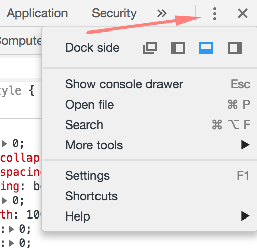
На данном этапе нас будет интересовать вкладка “Network” - анализатор сетевых пакетов. Откройте эту вкладку, заполните поля логин и пароль на самой странице (не важно что вы введете, можно ввести “admin” и “123456”), и нажмите на кнопку “Login”, после этого вы увидите сообщение об ошибке на странице (ожидаемо, ведь пароль нам неизвестен), и строку с кодом 200 чуть ниже:
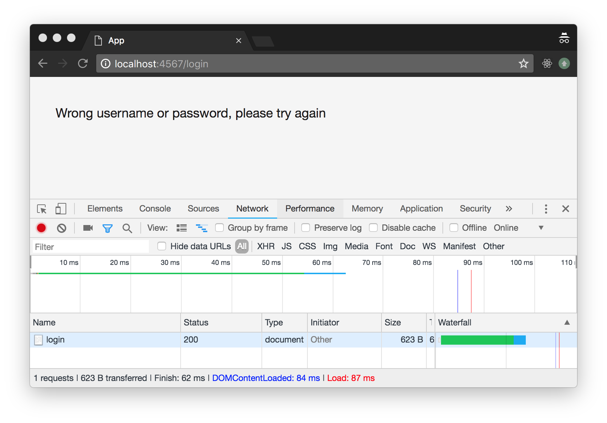
При нажатии на эту строку можно увидеть основные параметры запроса:
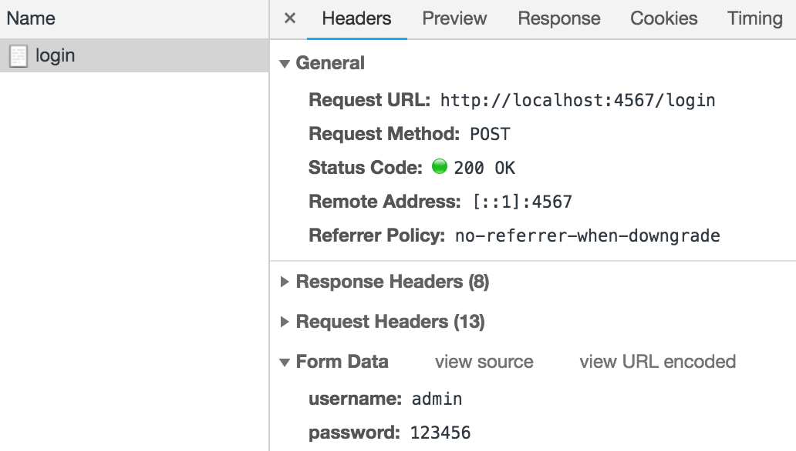
Нас интересуют четыре параметра:
Request URL (иногда говорят “endpoint”): `http://localhost:4567/login`
Request Method (или просто “method”): `POST`
`username`
`password`
К сожалению, Chrome Developer Tools не позволяют увидеть оригинальный запрос в текстовом виде. Однако, такие инструменты как Fiddler (преимущественно для Windows, существуют бета-версии для macOS и Linux) или Charles Proxy (платный, для macOS) позволяют увидеть запрос в “сыром” виде:
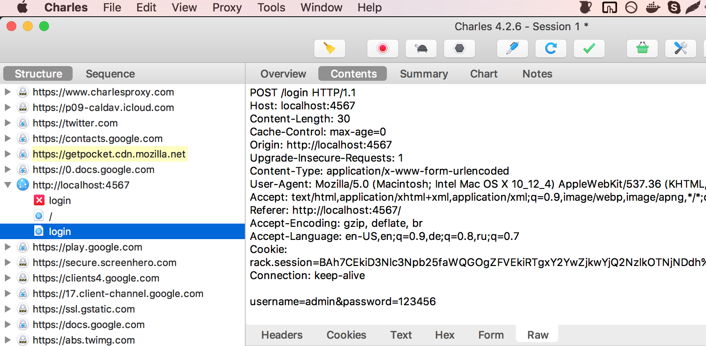
Другими словами, если мы подключимся с помощью какой-нибудь простой программы (например, telnet) и отправим текст, который виден на рисунке, то мы получим точно такой же ответ от сервера, который получает браузер.
Задание: современные инструменты позволяют представить ответ от сервера в виде таблиц и структурированных данных, хотя на самом деле протокол HTTP это всего лишь текст, разбитый на несколько строк. Это касается как запросов (request), так и ответов (response, reply). Попробуйте зайти в на свой любимый сайт с помощью пароля и посмотреть на этот запрос в Chrome Developer Tools. Сравните этот запрос с “сырыми” данными, которые вы можете получить при помощи других инструментов.
Примечание: во время работы с некоторыми прокси-инструментами авторы заметили нестабильность в работе docker. Если соединения с localhost не будет, возможно придется перезагрузить компьютер или перезапустить docker контейнер.
Задание: попробуйте подключиться к локальному серверу с помощью telnet и отправить GET-запрос вручную: `telnet localhost 4567`. После того, как подключение установится, введите `GET / HTTP/1.0` и два раза нажмите Enter.
Задание: попробуйте подключиться к локальному серверу с помощью telnet и отправить POST-запрос вручную: `telnet localhost 4567`. После того, как подключение установится, вставьте следующий текст и нажмите Enter:
```
POST /login HTTP/1.0
Content-length: 30
username=admin&password=123456
```
После того, как мы разобрались с тем, что GET и POST запросы и ответы это всего лишь текст, осталось научить руби делать то же самое. К счастью, для этих целей в руби существует специальная библиотека “net/http”: https://ruby-doc.org/stdlib-2.5.1/libdoc/net/http/rdoc/Net/HTTP.html Давайте напишем минимальную программу, которая отправляет POST-запрос с именем пользователя “admin” и паролем “123456”.
Задание: попробуйте написать эту программу самостоятельно, изучив документацию, и сравните результат с написанным ниже. Программа должна выводить на экран ответ от сервера, который содержит строку “Wrong username or password, please try again”.
Код рабочей программы всего 5 строк (одна из которых пустая):
```
require 'net/http'
uri = URI('http://localhost:4567/login')
res = Net::HTTP.post_form(uri, username: 'admin', password: '123456')
puts res.body
```
По большей части этот код скопирован из документации. Первая строка подключает библиотеку. Третья строка создает объект `uri`, т.н. Universal Resource Identifier. Он называется так потому, что содержит в себе 4 составляющих: протокол (http), имя хоста (localhost), порт (4567), путь (`/login`). Четвертая строка это всего лишь вызов метода `post_form` из библиотеки “net/http”, в который мы передаем uri и хеш с параметрами. Эту строку можно было бы записать иначе, явно указав хеш:
```
res = Net::HTTP.post_form(uri, { username: 'admin', password: '123456' })
```
Но в этом случае инструмент статического анализа кода Rubocop выдал бы предупреждение: “Redundant Curly Braces” (“фигурные скобки без необходимости”).
Последняя, пятая строка выводит на экран содержимое ответа:
```
<!DOCTYPE html>
<html lang="en">
<head>
<meta charset="utf-8">
<title>App</title>
<meta name="viewport" content="width=device-width, initial-scale=1.0">
<link rel="stylesheet" href="tacit-css.min.css"/>
</head>
<body >
<div>
<p>Wrong username or password, please try again</p>
</div>
</body>
</html>
```
Давайте попробуем совместить две программы: программу для итерации по строкам из файла и программу для создания http запросов:
```
require 'net/http'
uri = URI('http://localhost:4567/login')
File.new('passwords.txt').each do |line|
password = line.chomp
puts "Trying #{password}..."
res = Net::HTTP.post_form(uri, username: 'admin', password: password)
puts res.body
end
```
Программа работает, пробует каждый пароль из файла и выводит на экран результат. Т.к. пароль точно в этом списке, то однажды эта программа выведет какой-то другой результат. И все, что нам остается - наблюдать. Но есть два момента, которые могут быть улучшены:
Для наблюдений в “ручном” режиме и в реальном времени скорость программы слишком высока (около 10 паролей в секунду). Человек не сможет распознать какой-то другой вывод (какой именно это будет вывод - мы не знаем). Этого можно избежать, если добавить задержку.
Нет различия между правильным и неправильным вариантом. Если пароль правильный - программа продолжает перебирать остальные.
Эти два недочета легко исправить с помощью условия: если в теле ответа `res.body` содержится слово “Wrong”, то нужно продолжать. Иначе - выходить из программы. Давайте внесем это изменение и посмотрим на результат:
```
require 'net/http'
uri = URI('http://localhost:4567/login')
File.new('passwords.txt').each do |line|
password = line.chomp
puts "Trying #{password}..."
res = Net::HTTP.post_form(uri, username: 'admin', password: password)
if res.body.include?('Wrong')
# не делать ничего, просто продолжать
else
puts "Password found: #{password}"
exit
end
end
```
Результат работы программы:
```
Trying password...
Trying 123456...
Trying 12345678...
Trying 1234...
Trying qwerty...
Trying 12345...
...
Password found: (чтобы вам было интереснее, мы не стали его приводить в книге)
```
Ура, мы нашли пароль и спасли планету! Попробуем ввести логин “admin” и пароль в веб-интерфейсе и мы получим следующий результат на экране:
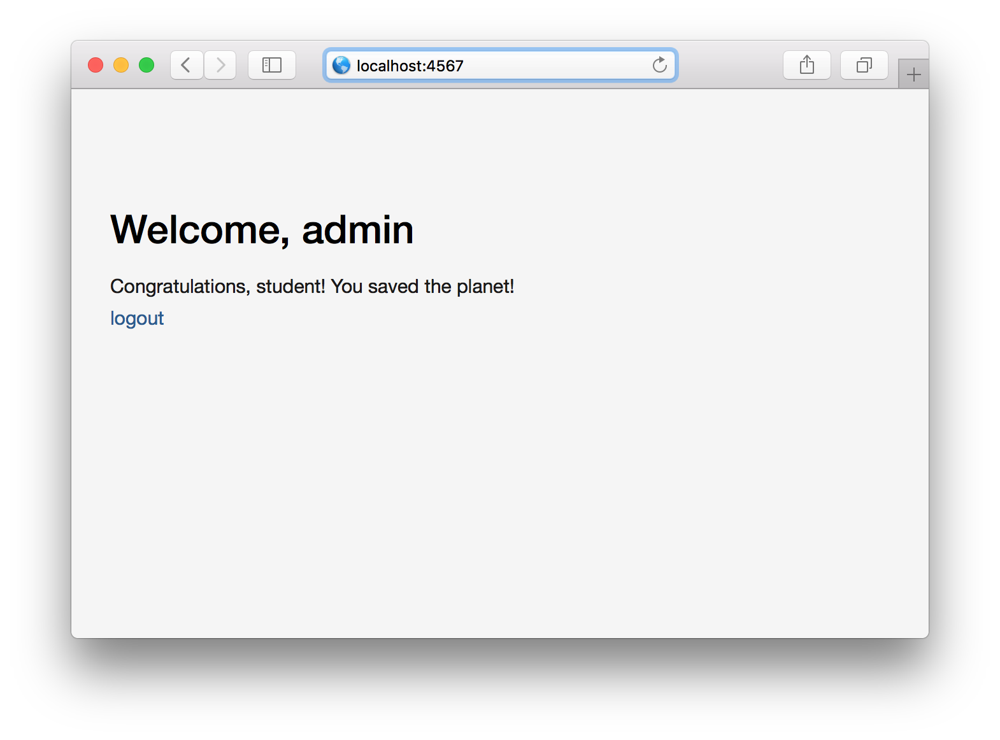
Задание: попробуйте запустить программу и спасти планету. Подумайте как можно улучшить конструкцию “if” чтобы она была более наглядной и лаконичной.
Задание: когда правильный пароль найден, введите текст ниже в своей текстовый редактор и замените “123456” на найденный пароль:
```
POST /login HTTP/1.0
Content-length: 30
username=admin&password=123456
```
Скопируйте текст в буфер обмена, попробуйте подключиться к локальному серверу с помощью `telnet localhost 4567`, отправьте скопированный POST-запрос вручную и нажмите Enter. Убедитесь, что ответ от сервера содержит слово “Congratulations”.
Немного про виртуализацию, Docker, основные команды Docker
Т.к. мы затронули тему виртуализации и контейнеров, стоит ознакомиться с основными понятиями. На сегодняшний день существуют три основных подхода к виртуализации.
Первый - запуск операционных систем внутри вашей собственной ОС. Например, у вас установлена ОС Windows и вы хотите запустить ОС Linux не выходя из Windows. В этом случае можно воспользоваться такими решениями как VirtualBox (бесплатно) или VMWare Workstation (работает лучше, но не бесплатно). Таким же образом можно запускать, например, Windows не выходя из Linux.
Рис. Linux Mint запущен внутри Windows с помощью VMWare Workstation
Преимущество этого способа - операционные системы “думают”, что они запущены на отдельном компьютере и ведут себя точно также, как если бы их установили на другой компьютер. Программы для виртуализации позволяют видеть настоящий графический экран запущенной операционной системы при помощи виртуализации, подключать устройства (например, по USB), проигрывать звук одновременно из двух ОС.
Недостатков у этого способа виртуализации несколько. Во-первых, образы получаются довольно тяжеловесными. Даже Linux с графической подсистемой требует нескольких гигабайт места на диске и как минимум одного гигабайта оперативной памяти для работы. Во-вторых, из-за полной виртуализации и требований памяти сложно запустить несколько работающих контейнеров, операционная система начинает подтормаживать. В-третьих, как правило, отсутствует интерфейс командной строки - невозможно из терминала включать, выключать, останавливать, запускать команды внутри контейнера.
Второй подход к виртуализации - использование инструмента, который называется vagrant. Он позволяет не только запускать, но и конфигурировать (provisioning) запускаемый контейнер с помощью отдельного файла (Vagrantfile). В этом файле можно прописать конкретные шаги, указать начальный образ ОС, задать общую (shared) папку, которая будет доступна, например, и на Windows, и на Linux.
Этот инструмент является более гибким и рассчитан на разработчиков. Вся “стандартная” функциональность по-умолчанию выключена. Например, для того, чтобы “пробросить” звук из контейнера наружу, придется написать отдельный скрипт.
Преимущество инструмента заключается в наличии скриптового синтаксиса (который, кстати, ничто иное как программа на языке руби). У программистов появилась возможность обмениваться небольшими программами в виде Vagrantfile. На основе Vagrantfile каждый раз создается один и тот же, точно такой же, контейнер.
Vagrant является надстройкой над VirtualBox (или VMWare), а поэтому позволяет запускать любые операционные системы внутри контейнера (в т.ч. Windows). Если речь идет про Linux, то программисты предпочитают запускать эту ОС в Vagrant без графической подсистемы. Это экономит память и позволяет запускать несколько контейнеров одновременно.
Часто Vagrant используется в виде окружения для разработки, т.к. Vagrant позволяет задать т.н. “shared folder” - папку, которая будет доступна внутри контейнера и снаружи. В этом случае запуск программ происходит внутри контейнера, а редактирование исходного кода происходит снаружи. Например, вы можете редактировать файлы в Windows, а запускать программы в Linux.
Представьте, что вы устроились на новую работу программистом, первый день, вам дают новый компьютер и инструкцию. В инструкции написано:
Дорогой друг! Добро пожаловать в нашу команду. Мы работаем над проектом Х, это веб-приложение на Ruby on Rails, для того, чтобы ты смог начать разработку, тебе необходимо установить:
MySQL (займет 1 час)
Ruby, node.js, rvm, nvm (3 часа)
Установить redis (20 минут)
Установить git и задать его параметры (1 час)
“Склонировать” последнюю версию кода
Запустить команды для обновления базы данных
На каждый пункт - отдельная инструкция. Где и какую версию взять, как поставить, какие параметры указать при установке и так далее. Но более профессиональная команда разработчиков могла бы дать другие инструкции:
Дорогой друг! Добро пожаловать в нашу команду. Мы работаем над проектом Х, это веб-приложение на Ruby on Rails. Для того, чтобы ты смог начать разработку, тебе достаточно установить Vagrant, “склонировать” этот репозиторий и запустить “vagrant up”. Процесс займет какое-то время, но все произойдет автоматически, а ты пока можешь попить кофе. Когда все будет готово, ты увидишь рабочую программу! Если что-то пойдет не так, то это будет наша проблема, ведь у нас существует единый контейнер, это единый стандарт среды разработки для всех членов команды, и мы поддерживаем этот контейнер в актуальном состоянии.
Третий способ виртуализации - Docker, с которым мы уже немного знакомы. Докер позволяет запускать легковесные контейнеры, которые были созданы специально для виртуализации. Например, образ на основе Linux alpine может занимать всего 5 мегабайт. Следовательно, на одном компьютере можно запустить десятки и даже сотни таких легковесных контейнеров.
При работе с докером полезно отличать контейнер (container) от образа (image). Образ - это какой-то шаблон, как чертёж, класс в программировании. Сам по себе образ не является живым организмом, он просто хранится на диске, в сети (например, в хранилище образов, которое называется Docker Hub). Но контейнер это уже деталь, изготовленная на основе чертежа, это экземпляр класса, объект. Поэтому возможны следующие основные операции:
с контейнером: создать и запустить (run и start), остановить (stop), удалить (rm), просмотреть список запущенных ("ps" - от "process status")
с образом (image): удалить (rmi), просмотреть список доступных (images)
Имея в голове представление об образах и контейнерах гораздо проще понять работу с докером. У нас нет цели дать исчерпывающее руководство по этому инструменту, но некоторые команды могут быть полезны на начальном этапе:
`docker version` - показывает версию докера
`docker ps` - показывает список запущенных контейнеров (аналогично shell-команде `ps`)
`docker ps -a` - показать список всех контейнеров
`docker images` - список образов
`docker rm container_name` - удалить контейнер по имени
`docker rm f767ff6ecebf` - удалить контейнер по ID
Запуск контейнера нам уже знаком:
```
docker run -it --name xxx -p 4567:4567 ro31337/rubybook-save-the-planet
```
Посмотреть справку по команде "run" можно с помощью команды оболочки `docker run --help` (вместо "run" можно ввести любую другую команду докера).
Полезны также следующие команды (они используются как основа для скрипта ниже):
`docker ps -a -q` - вывести список всех идентификаторов существующих контейнеров
`docker images -q` - вывести список всех идентификаторов существующих образов
Скрипт, который позволяет остановить все контейнеры, удалить все контейнеры и удалить все образы:
```
docker stop $(docker ps -a -q)
docker rm $(docker ps -a -q)
docker rmi $(docker images -q)
```
Скрипт выше можно использовать в случае когда что-то пошло не так, и вы хотите начать с чистого листа.
Информация в этом разделе является очень важной для любого начинающего руби программиста. Возможно, стоило бы дать эту информацию в самом начале, но наша основная задача заключалась в быстром старте. А информация про менеджер версий руби (ruby version manager или сокращенно rvm) может потребовать понимания и привычки. Поэтому мы не хотели пугать новичков переде тем, как они напишут первую программу и сделают что-то осмысленное.
Примечание: если информация из этой главы вам покажется сложной, можно отложить ее до лучших времен.
Rvm это надстройка для вашей оболочки (shell), которой может являться или bash, или zsh, или что-то еще (например, RubyMine). Каждый программист запускает программу в своем терминале с помощью команды `ruby app.rb`. Но откуда берется исполняемый файл `ruby`? Давайте посмотрим что выдает команда `which` на системе без rvm:
```
$ which ruby
/usr/bin/ruby
```
Другими словами, интерпретатор руби находится в `/usr/bin/ruby`. Если удалить этот файл, то программы запускаться не будут. Но откуда система знает, что руби нужно брать именно из каталога `/usr/bin`? Давайте посмотрим значение переменной `$PATH` (путь) в нашей оболочке (ваш вывод может немного отличаться):
```
$ echo $PATH
/usr/local/bin:/usr/bin:/bin:/usr/sbin:/sbin
```
Ага, переменная `$PATH` содержит несколько директорий, разделенных двоеточием:
/usr/local/bin
/usr/bin (директория с интерпретатором руби)
/bin
/usr/sbin
/sbin
Когда вы вводите команду `ruby` оболочка пытается найти файл в первой директории, если не находит то во второй и так далее. Если переопределить эту переменную особым образом, то можно заставить оболочку искать исполняемый файл где-либо еще (вы уже поняли, что для переопределения надо добавлять новый путь в начало, а не в конец). Но где добавлять этот путь?
Настройки bash хранятся в вашем домашнем каталоге (получить путь к дом.каталогу можно с помощью команды `echo $HOME` или `echo ~`) в файле с именем `.bashrc`. Настройки zsh хранятся в `~/.zshrc`. Возможно, в этих файлах уже есть определение переменной `PATH`. Но зачем это нужно нам?
Дело в том, что на самом деле существует много различных языков руби. Да-да, тот руби, про который мы все это время говорили это не просто руби, а руби какой-то определенной версии. Узнать свою версию можно с помощью команды:
```
$ ruby -v
ruby 2.3.3p222 (2016-11-21 revision 56859) [universal.x86_64-darwin17]
```
Системный руби - тот самый, который находится в директории `/usr/bin` и который поставляется вместе с вашей операционной системой (если это не Windows). Скорее системный руби не является самой последней версией языка. Вполне вероятно, что существуют более актуальные версии, с новыми возможностями и улучшенной производительностью. Но как об этом узнать и как пользоваться всегда самой последней версией?
Но не будем спешить. "Cамая последняя версия языка руби" скорее всего вам не понравится. Дело не в том, что руби плохой, а в том, что самая последняя и самая свежая версия языка руби (а также многих других программных продуктов) не самая стабильная. Существуют т.н. "ночные сборки" (nightly builds). Смысл в том, что все изменения, которые произошли за последний день собираются в одну ветку и в автоматическом режиме компилируются.
Краткая справка: компиляция это трансляция исходного кода в код машинный. А вот программы, написанные на руби, не компилируются, а интерпретируются: мы ведь запускаем программы с помощью команды `ruby app.rb`, а не просто `app`. Поэтому такого понятия как "сборка" (build) в руби не существует. Однако, по привычке многие программисты называют "билдом" успешный запуск всех тестов. Сам же язык руби написан на языке Си. Если вызвать команду `show-method loop` в "pry", то можно в этом убедиться. Поэтому ночная сборка самого языка существует.Однако, по привычке многие программисты называют "билдом" успешный запуск всех тестов. Сам же язык руби написан на языке Си. Если вызвать команду `show-method loop` в "pry", то можно в этом убедиться. Поэтому ночная сборка самого языка существует.
К слову, известный браузер Firefox тоже существует в виде ночных сборок. Вот что такое ночная сборка по версии команды разработчиков Firefox (с сайта https://wiki.mozilla.org/Nightly):
> Каждый день разработчики Mozilla пишут код, который сливается в общий репозиторий кода, и каждый день этот код компилируется. Таким образом создается пре-релизная версия Firefox, основанная на этом коде с целью тестирования. Вот что мы называем ночной сборкой. Когда этот код становится стабильным, он сливается в репозиторий со стабильным кодом (Beta и Dev edition), где этот код будет отполирован пока мы не достигнем уровня качества, который позволит нам выпустить новую окончательную версию Firefox для сотен миллионов людей.
Помимо ночной сборки языка руби существует также и preview-сборка, которая отличается от ночной тем, что она немного стабильнее. Но сборка, которая интересует нас так и называется - "стабильная" (stable). Поэтому мы не заинтересованы в самой последней версии языка, нас интересует стабильная версия. Чтобы узнать какая именно версия стабильная, можно пройти на официальный сайт в раздел "Downloads" https://www.ruby-lang.org/en/downloads/, где будет написано:
> The current stable version is...
Можно скачать эту версию на свой компьютер. Файл обычно скачивается в виде tar.gz-архива, поэтому потребуется его распаковать:
```
$ tar xzf ~/Downloads/ruby-X.Y.Z.tar.gz
```
Но распаковав этот файл вы увидите исходный код языка, а не готовый исполняемый файл (войдите в директорию: `cd ruby-X.Y.Z` и выполните команду `ls -lah`). Поэтому язык руби нужно "собрать", просто для того, чтобы у вас в итоге получился исполняемый файл, с помощью которого уже можно будет запускать программы:
```
$ cd ruby-X.Y.Z
$ ./configure
checking for ruby... /usr/bin/ruby
tool/config.guess already exists
tool/config.sub already exists
checking build system type... x86_64-apple-darwin17.6.0
checking host system type... x86_64-apple-darwin17.6.0
checking target system type... x86_64-apple-darwin17.6.0
checking for clang... clang
checking for gcc... (cached) clang
...
$ make
CC = clang
LD = ld
...
```
После сборки в текущей директории появится бинарный исполняемый файл, который можно запустить:
```
$ ./ruby -v
ruby 2.5.1p57 (2018-03-29 revision 63029) [x86_64-darwin17]
```
Префикс `./` говорит о том, что нужно запустить файл в текущей директории, а не тот, который находится у вас в пути (переменная оболочки `PATH`). Сравните с тем, что написано выше:
```
$ ruby -v
ruby 2.3.3p222 (2016-11-21 revision 56859) [universal.x86_64-darwin17]
```
Если выполнить команду `sudo make install`, то можно заменить системный руби только что скомпилированной версией языка. Вот только на macOS новая версия языка будет установлена в /usr/local/bin. А текущий системный руби установлен в /usr/bin. Но это не проблема, т.к. первая директория находится перед последней в переменной PATH (выполните команду `echo $PATH`). Необходимо перезапустить ваш терминал чтобы оболочка приняла изменения (или выполнить команду `source ~/.bashrc`, `source ~/.zshrc` - в зависимости от типа используемой оболочки).
Согласитесь, что все это как-то сложно и не очень удобно. Но зачем это сделано? Дело в том, что руби один, а операционных систем много. Это не только Windows, macOS, Linux, но также и разные версии этих операционных систем. Каждая ОС имеет свои настройки, которые оказывают влияние на производительность. Чтобы язык руби использовал все эти возможности, необходимо "собрать" (build) этот язык на точно таком же компьютере как у вас (или на вашем собственном). Ведь даже на одинаковых операционных системах может отличаться тип процессора! А одна оптимизация на уровне процессора работает на одном компьютере, и не работает на другом. Например, один компьютер может быть новее, с более мощным и усовершенствованным процессором, а другой с устаревшим.
Мы собрали язык руби, обновили системный руби, и больше через этот этап мы проходить не будем! Но, как говорил Стив Джобс, "there is one more thing". Не все так просто в мире разработки (и именно за это нам платят деньги).
Вы, наверное, обратили внимание, что версия почему-то выражается в трех цифрах. Не руби 1, 10, 42, а руби 2.3.3, руби 2.5.1 и так далее. Зачем нужны три цифры вместо одной?
Существует такое понятие как “Semantic Versioning” (или сокращенно “SemVer”, “семантические версии” или “семантическая версионность”). Подробная информация по semver доступна по адресу https://semver.org/lang/ru/. Вот краткая справка с этого сайта:
===
Учитывая номер версии МАЖОРНАЯ.МИНОРНАЯ.ПАТЧ, следует увеличивать:
МАЖОРНУЮ версию, когда сделаны обратно несовместимые изменения API.
МИНОРНУЮ версию, когда вы добавляете новую функциональность, не нарушая обратной совместимости.
ПАТЧ-версию, когда вы делаете обратно совместимые исправления.
Дополнительные обозначения для предрелизных и билд-метаданных возможны как дополнения к МАЖОРНАЯ.МИНОРНАЯ.ПАТЧ формату.
===
Другими словами, в версии руби 2.3.1 мажорная версия это 2, минорная это 3, а патч это 1. Попробуем в этом разобраться, потому что это важно.
Дело в том, что процесс разработки любой программы может включать:
исправление багов - увеличивается патч-версия
улучшение функциональности (добавление фич) - увеличивается минорная версия
серьезные изменения всей программы - увеличивается мажорная версия
В случае исправления багов программа остается в принципе такой же. Две версии может и отличаются, но ненамного. Две версии языка руби в этом случае были бы абсолютно идентичными, за исключением каких-то, возможно редких, исправленных багов. Можно было бы заменить одну версию на другую без особых проблем. Но чтобы понять какая версия лучше, увеличивают патч.
Например, программа была версии 0.1.0 (рекомендуемая начальная версия в semver), а стала 0.1.1. Значит что-то исправили и 0.1.1 лучше. Или, например, программа была версии 0.1.9, а стала 0.1.10. Что-то исправили в версии 0.1.9 и увеличили патч-версию на единицу. Но по сути 0.1.10 можно заменить даже на 0.1.0, ничего страшного не должно произойти.
В случае улучшения функциональности какой-либо программы, в старых версиях этой функциональности не существует. Что это означает для языка руби? Например, в новой версии появляется новый оператор "yeah", который выводит на экран строку "Oh, yeah!". Мы пишем программу на новой версии, а потом по какой-то причине "откатываемся" на старую. Но в старой версии нет этого оператора и наша программа не работает! Чтобы дать остальным понять, что эта программа новая и обратно с нее откатываться нельзя, мы увеличиваем минорную версию (та, что посередине), а заодно и сбрасываем патч-версию в ноль. Например, программа была 0.1.10, а будет 0.2.0. Разумеется, что новая версия включает в себе все патчи из предыдущей. Но т.к. она содержит новую функциональность, минорная версия увеличена на единицу.
Если посмотреть на язык руби, то версия 2.3.3 и 2.5.1 отличается на 2 по минорной версии. Это значит, что в версии 2.4.x и 2.5.x была представлена какая-то новая функциональность. И если написать программу на 2.5.x с использованием этой функциональности, то она не будет работать на всех версиях ниже (на 2.4.x, 2.3.x и т.д.).
Мажорную версию увеличивают в двух случаях:
С нуля до единицы когда софт точно готов к использованию в production (об этом не говорится в документации к semver)
С единицы выше - когда вводятся обратно-несовместимые изменения (говорят "breaks backwards compatibility") или когда происходит серьезное обновление.
Другими словами, если версия была 0.2.0, а стала 1.0.0, то есть большая вероятность того, что программы написанные на 0.2.0 не будут работать в версии 1.0.0. Другими словами, при увеличении мажорной версии все что вы написали раньше превращается в тыкву! Приходится переписывать все заново!
Но это в самом худшем случае. Обычно при обновлении мажорной версии даются подробные инструкции о том, как перейти именно на новейшую версию. Отсюда возникает философия разработки любого программного продукта, а в особенности фреймворка или языка программирования. Как развивать программу?
Что делать, быстро двигаться вперед, не оглядываясь на то, что было сделано ранее, ломать обратную совместимость и забыть про прошлое?
Или все-таки исповедовать консервативный подход - поддерживать старые версии, т.к. существует множество уже написанного кода. Выкатывать новую версию означает в какой-то момент перестать поддерживать старую. Но у старой версии есть пользователи, что с ними делать?
Многие команды, отвечающие за выпуск языков, фреймворков и других программных продуктов пытаются найти баланс. Например, открыто заявляют о том, какие версии поддерживаются (maintained), какие уже пришли к EOL (end of life - конец жизни), а какие поддерживаются сейчас только в режиме исправления проблем с безопасностью (security maintenance phase). В любом случае, руби не стоит на месте, компании вынуждены переходить с более старых версий на новые. Ведь никто не хочет оказаться наедине с версией языка ruby, которой уже пришел EOL. Поэтому компании платят деньги нам, программистам, и мы аккуратно переводим системы с одной версии на другую (и тут нам очень помогают наши юнит-тесты).
Мы разобрались с проблемами, которые существуют в виду того, что язык руби растет и развивается. И у бизнеса возникает резонный вопрос: "окей, версии языка бывают разные, где-то можно обновить версию языка на новую, где-то нельзя и приходиться пользоваться старой, но системный руби-то всегда одной версии! Что нам делать, если у нас два проекта? Один требует старой, другой новой версии. Каждый раз перекомпилировать руби и устанавливать его в систему? А если проекта два и один через API общается с другим, и при этом их нужно запустить на одном и том же компьютере?".
Но все гениальное просто! Давайте просто создадим директорию, в которой будем хранить все версии языка:
2.5.1
2.3.3
2.0.0
и так далее. Каждый руби назовем по-своему: `ruby-2.5.1`, `ruby-2.3.3`, и т.д. И вместо запуска `ruby app.rb` будем использовать `ruby-2.5.1 app.rb`. Отличное решение! Но... there is one more thing.
Помимо исполняемого файла `ruby` существует еще исполняемый файл `gem` (введите `which gem` чтобы посмотреть где этот исполняемый файл находится). Концепция gem'ов это концепция дополнительных библиотек от авторов со всего мира, которые скачиваются из Интернета при выполнении команды `gem install …` и куда-то помещаются на вашем жестком диске.
При этом каждый gem имеет параметр, который называется `required_ruby_version`. Другими словами, если вы установили gem для версии 2.5.1, не факт что он будет работать для версии 2.3.3. Поэтому вместе с созданием директории для разных версий руби нам нужно еще создать директории для разных версий gem’ов. Получается, что иметь на одном компьютере сразу несколько версий руби невозможно?
Возможно. Если бы мы продолжали наши эксперименты, то рано или поздно мы бы нашли способ самостоятельно установить разные версии руби таким образом, чтобы все прекрасно работало. Однако, эта проблема беспокоила не только нас. Программисты со всего мира пришли к выводу, что должны быть способы проще. И родилась концепция “менеджера версий руби” - Ruby Version Manager, или RVM.
RVM сам по себе не является чем-то уникальным для руби. Для других языков тоже существуют менеджеры версий. Например, для языка JavaScript существует NVM - Node.js Version Manager. Мы рассмотрим rvm, но основные концепции также справедливы и для многих других языков.
Для начала про установку. Инструкции для установки доступны на сайте https://rvm.io/, а краткая справка сообщает о том, что это такое:
> RVM это инструмент для командной строки, который позволяет вам легко установить, управлять, и работать с несколькими руби-окружениями: от интерпретаторов до наборов gem’ов
Sets of gems - набор gem’ов (или gemset) важное понятие, мы вскоре с ним познакомимся. RVM устанавливается с помощью двух команд (скопируйте их с сайта rvm, т.к. команды ниже могут устареть):
```
$ gpg --keyserver hkp://keys.gnupg.net --recv-keys 409B6B1796C275462A1703113804BB82D39DC0E3 7D2BAF1CF37B13E2069D6956105BD0E739499BDB
$ \curl -sSL https://get.rvm.io | bash -s stable
```
Если присмотреться к логам установки, то можно увидеть следующий текст (у вас он может быть немного другим):
```
Installing RVM to /Users/ro/.rvm/
Adding rvm PATH line … /Users/ro/.bashrc /Users/ro/.zshrc.
Adding rvm loading line to ... /Users/ro/.bash_profile /Users/ro/.zlogin.
Installation of RVM in /Users/ro/.rvm/ is almost complete:
* To start using RVM you need to run `source /Users/ro/.rvm/scripts/rvm`
in all your open shell windows, in rare cases you need to reopen all shell windows.
```
Установщик рекомендует вам выполнить `source /Users/ro/.rvm/scripts/rvm`, если вы хотите начать использовать rvm без перезапуска терминала. Теперь мы можем запустить rvm и посмотреть его версию:
```
$ rvm -v
rvm 1.29.4 (latest) by Michal Papis, Piotr Kuczynski, Wayne E. Seguin [https://rvm.io]
```
Или справку:
```
$ rvm --help
Usage:
rvm [--debug][--trace][--nice] <command> <options>
for example:
rvm list # list installed interpreters
rvm list known # list available interpreters
rvm install <version> # install ruby interpreter
rvm use <version> # switch to specified ruby interpreter
rvm remove <version> # remove ruby interpreter
rvm get <version> # upgrade rvm: stable, master
...
```
Установщик rvm также изменил переменную PATH, о которой мы говорили выше. При этом rvm установил себя в домашнюю директорию в каталог `.rvm` (можете посмотреть ее содержимое с помощью `ls -lah ~/.rvm`). “Перехватив” таким образом путь, rvm будет “подсовывать” вам ту или иную версию руби в зависимости от обстоятельств. Но какие это обстоятельства и каким образом rvm будет “подсовывать” вам ту или иную версию руби?
Тут заключается магия rvm, за которые этот менеджер версий многие не любят. Секрет заключается в том, что rvm подменяет команду оболочки `cd` (change directory - сменить директорию). Когда вы меняете директорию, rvm пытается определить какой руби нужно использовать сейчас. Алгоритм очень простой (о нем чуть ниже) и у rvm есть два варианта действий после того, как вы сменили директорию:
Молча (или почти молча) “Подсунуть” вам нужную версию руби, чтобы вы ничего не заметили
Не делать ничего
Но как именно rvm решает, что нужно подсунуть вам какую-то версию, в чем заключается алгоритм? Все очень просто: в руби-сообществе было достигнуто соглашение о том, текущая версия руби для определенного проекта должна храниться в файле `.ruby-version` (с точкой вначале) в директории проекта. Этот файл должен просто содержать строку с версией руби, например `2.5.1`. И при смене директории в терминале, rvm попробует “подсунуть” вам эту версию руби “почти молча”: если она еще не была скачена из интернета, то rvm сообщит об этом.
Давайте создадим любую директорию, попробуем войти в нее, записать в `.ruby-version` версию руби, потом выйти из директории и снова в нее войти - это нужно для того, чтобы сработал rvm, ведь изначально файла `.ruby-version` в директории не будет. Но прежде, чем это сделать, посмотрим на текущий руби и его версию:
```
$ ruby -v
ruby 2.5.1p57 (2018-03-29 revision 63029) [x86_64-darwin17]
$ which ruby
/usr/local/bin/ruby
```
Теперь можно попробовать магию rvm:
```
$ mkdir rvm-test # создаем rvm-test
$ cd rvm-test # переходим в эту директорию
$ echo "2.3.1" > .ruby-version # записываем версию 2.3.1 в наш файл
$ cd .. # выходим на уровень вверх
$ cd rvm-test # и снова переходим в эту директорию
Required ruby-2.3.1 is not installed.
To install do: 'rvm install "ruby-2.3.1"'
```
Вот это да! Получилось! RVM выдал нам сообщение о том, что руби версии 2.3.1 не установлен и сразу же команду для установки (напоминаем, что список всех команд доступен в справке: `rvm --help`).
Запустим эту команду, RVM попробует найти уже откомпилированный (бинарный) файл этой версии ruby именно для вашей операционной системы где-то у себя на серверах:
```
Searching for binary rubies, this might take some time.
No binary rubies available for: osx/10.13/x86_64/ruby-2.3.1.
```
Если файл не будет найден, то будет этой версии будет скачан с официального сайта и будет откомпилирован на вашем компьютере! Согласитесь, что это немного проще, чем компиляция с помощью `./configure`, `make` и т.д., которую мы делали ранее?
После того как файл будет откомпилирован и установлен, мы сможем проверить версию воспользоваться установленной версией языка руби:
```
$ ruby -v
ruby 2.3.1p112 (2016-04-26 revision 54768) [x86_64-darwin17]
$ which ruby
/Users/ro/.rvm/rubies/ruby-2.3.1/bin/ruby
```
Другими словами, rvm подменил нам руби на тот, который был указан в `.ruby-version`:
|
|
Было: |
Стало: |
|
Версия руби: |
ruby 2.5.1p57 |
ruby 2.3.1p112 |
|
Путь к руби: |
/usr/local/bin/ruby |
/Users/ro/.rvm/rubies/ruby-2.3.1/bin/ruby |
При этом старый файл `/usr/local/bin/ruby` остался на диске. Просто была подмена PATH, переменной, которая отвечает за пути к файлам. И теперь наша оболочка просто обращается к другой директории. И все это в автоматическом (окей, полу-автоматическом) режиме.
Иметь `.ruby-version` в директории проекта очень важно, т.к. другие программисты будут точно знать какой версией руби вы пользовались, когда создавали работали над проектом. Этот файл позволит избежать вопросов в команде “а какую версию руби мне устанавливать для проекта Х?”. Это, как говорят, single source of truth (единый источник истины). Если версия обновилась, то вся команда будет знать, где смотреть. Более того - если этой версии на компьютере разработчика нет, то RVM подскажет как ее установить.
Выше мы установили нужную версию руби, зная про секрет RVM. Но можно ли как-нибудь установить версию руби без этого секрета, без создания `.ruby-version`?
Можно. Воспользуемся двумя командами:
`rvm list known` - выдает список доступных версий руби. Нас интересует версии MRI.
`rvm install ...` - установить руби определенной версии, вместо троеточия необходимо указать версию языка.
```
$ rvm install 2.5.1
Searching for binary rubies, this might take some time.
No binary rubies available for: osx/10.12/x86_64/ruby-2.5.1.
Continuing with compilation. Please read 'rvm help mount' to get more information on binary rubies.
...
```
Выше мы ввели команду для установки руби версии “2.5.1”. Появилась отладочная информация, которая сказала о том, что скомпилированной (готовой) версии руби 2.5.1 для нашей операционной системы (macOS 10.12) пока не существует, поэтому сейчас будет скачаен и откомпилирован исходный код языка руби на нашем компьютере.
Как вы могли заметить, RVM пытается найти где-то на своих серверах версии руби по следующим признакам:
`osx` - тип ОС, может быть Linux, Windows или что-то еще (теоретически)
`10.12` - версия ОС, существует множество разных версий как macOS, так и остальных ОС
`x86_64` - архитектура процессора
`ruby-2.5.1` - версия языка
Если перемножить количество всевозможных типов ОС на количество различных версий этих ОС, на количество возможных архитектур процессора (не так много), и на количество версий языка, то получится довольно большое число. Другими словами, RVM держит на своих серверах тысячи откомпилированных версий руби. Некоторые из этих версий были откомпилированы на точно таких же компьютерах, как и у вас.
Возникает вопрос: а зачем нужны откомпилированные версии? Дело в том, что скачивание откомпилированной версии занимает секунды, а компиляция - во много раз больше. Также можно было бы откомпилировать одну версию руби сразу для определенного семейства ОС (например, для macOS от 9 до 10 версий), но каждая ОС может содержать свои настройки производительности или тонкие моменты, о которых компилятору хорошо бы знать.
Но с точки зрения “потребителя” особенности работы RVM не очень важны, нас интересует вопрос как установить и использовать RVM без дот-файла (файла, начинающегося с точки: `.ruby-version`). Мы разобрались с тем, как установить: например, `rvm install 2.5.1`. Но что же с использованием?
Представьте, что установлено несколько версий: 1, 2, 3. Если дот-файлов в каталогах нет, то нам надо как-то выбирать какую именно версию мы хотим использовать. Для этого существует команда оболочки `use`, с очень простым синтаксисом:
```
$ rvm use 2.5.1
Using /Users/ro/.rvm/gems/ruby-2.5.1
$ ruby -v
ruby 2.5.1p57 (2018-03-29 revision 63029) [x86_64-darwin16]
$ rvm use 2.3.1
Using /Users/ro/.rvm/gems/ruby-2.3.1
$ ruby -v
ruby 2.3.1p112 (2016-04-26 revision 54768) [x86_64-darwin16]
```
Чтобы вывести список всех установленных руби существует команда `list`:
```
$ rvm list
ruby-2.3.1 [ x86_64 ]
ruby-2.4.2 [ x86_64 ]
* ruby-2.5.0 [ x86_64 ]
=> ruby-2.5.1 [ x86_64 ]
# => - current
# =* - current && default
# * - default
```
Также в RVM существует такое понятие как “default” версия (версия по-умолчанию). Другими словами та версия, которая будет автоматически использоваться при открытии терминала. Ее можно установить с помощью команды `alias`:
```
$ rvm alias create default 2.5.1
Creating alias default for ruby-2.5.1.....
$ rvm use default
Using /Users/ro/.rvm/gems/ruby-2.5.1
```
Отныне каждый раз когда мы будем говорить `rvm use default` будет использоваться версия 2.5.1.
На этом наше знакомство с инструментом RVM закончено. Возможно, что где-то вы услышите выражение “gemset”, которое означает ничто иное как “набор gem’ов”. Но сейчас оно все реже используется, т.к. при использовании инструмента Bundler последних версий отпадает необходимость в таком понятии как “gemset”. По сути понятие о gemset’ах это возможность иметь разные наборы gem’ов для одной и той же версии руби. Но Bundler уже позволяет иметь разные наборы gem’ов, и каждый раз когда вы вносите исправления в Gemfile и вводите “bundle”, все происходит автоматически и без каких-либо проблем.
Запоминать все настройки RVM не нужно, но иметь представление о том, что это такое полезно, ведь помимо RVM существуют очень похожие инструменты для других языков:
NVM - Node.js Version Manager для JavaScript
VirtualEnv для Python
И т.д.
Перед тем, как мы познакомимся с тестированием, необходимо определиться а что же такое тестирование. Это понятие достаточно широкое, а следовательно могут существовать разные типы тестов.
Например, перед тем как настоящий инженер захочет послушать только что собранный из радиодеталей приёмник, он быстро включит и выключит питание чтобы посмотреть - не пойдет ли дым, не допущена ли где-нибудь фундаментальная ошибка. Такое тестирование называют smoke-тестами (smoke - дым). Затем инженер может приступить к "happy path" (дословно: "счастливый путь") тесту: включить приёмник и посмотреть - идет ли звук и настраивается ли он на частоту хотя бы какой-нибудь радиостанции.
Перед запуском в продажу могут быть другие тесты. Например, нагрузочные: посмотреть как приёмник расходует батарею. А также тесты на качество сборки, на стабильность работы и так далее. Количество и глубина этих тестов зависят от требований. Делаем ли мы радиоприёмник для розничной продажи или это военный образец? Ответы на эти фундаментальные вопросы определяют какое именно тестирование нам нужно.
Похожая картина наблюдается и при разработке программ. Существует большое количество тестов для программ: ручные тесты, автоматизированные, юнит-тесты (модульные тесты), интеграционные тесты, нагрузочные. Чтобы познакомиться со всеми типами тестов потребуется не один день. Мы рассмотрим тесты, с которыми чаще всего встречается программист: это юнит-тесты (unit tests, от англ. "unit" - модуль или часть). Что же такое юнит-тест и зачем он нужен?
Не так давно про тесты никто не думал. Программы создавали в текстовом редакторе, проверяли их работу и сразу же запускали (или отправляли своим клиентам на дискетах, CD-ROM'ах, а позднее и через Интернет). Если возникала какая-то ошибка, то ее исправляли. Таким образом, в новой версии (новом релизе) программы могло быть исправлено несколько ошибок.
Но сложность программ возрастала. Возрастало и количество разработчиков в командах. Нередко получалось так, что небольшое, казалось бы, улучшение вызывает ошибку. Эти ошибки, конечно, отлавливались командой ручных тестировщиков. Но от времени появления ошибки до момента ее выявления могло пройти несколько дней.
Поэтому возник вопрос о выявлении ошибок на более ранних этапах. Если существует какая-то часть программы, можно ли каким-то образом хотя бы сделать "защиту от дурака"? По аналогии с реальной жизнью: вы выходите из дома и знаете, что утюг и газовая плита выключены, но на всякий случай вы делаете то, что называется double check (двойная проверка). В 99% случаев все будет так, как вы ожидаете, но в 1% случаев эта двойная проверка даст положительный результат. Тем более, цена двойной проверки очень мала.
В программировании есть что-то подобное, но:
вместо проверки утюга и газовой плиты проверяется множество частей разной программы (например, один небольшой авторский проект LibreTaxi.org содержит более 500 тестов).
вместо проверки только один раз, проверка происходит после каждого изменения.
Согласитесь, что это удобно: разработчик изменил программу, запустил тесты и проверил что ничего фундаментального не сломалось. Если сломалось, то тут же исправил. В итоге, от появления ошибки до момента ее выявления прошли минуты, но никак не дни (запуск 500 тестов занимает около двух минут). Получается, что на относительно небольшом проекте на каждые 100 изменений будет запущено по 500 тестов на каждое изменение, что в общей сложности дает 50 тысяч запусков разных тестов. Этот подход позволил значительно улучшить качество написанных программ. Однако, у юнит-тестирования есть и недостатки.
Во-первых, вместе с написанием кода программы программисты также должны писать тесты. Несмотря на то, что тесты писать легче, все равно необходимо уделять этому какое-то время. Для создания хороших тестов необходимо иметь знания фреймворков для юнит-тестирования, знания общепринятых подходов, и какой-то минимальный опыт.
Во-вторых, юнит-тестирование никогда не покрывает абсолютно все участки кода. Десять конструкций "if...else" уже дают 1024 (двойка в десятой степени) возможных вариантов выполнения вашей программы. В некоторых проектах используют такое выражение как "покрытие кода" (code coverage), которое выражается в процентах. Например, говорят: "code coverage для нашего проекта составляет 80%" (при этом это является предметом гордости). На самом деле вопрос в том, как считаются эти проценты. Да, отдельные модули могут быть покрыты тестами. Но даже 100% покрытие не является панацеей от абсолютно всех ошибок: возможных вариантов выполнения программы всегда во много раз больше, чем тестов, которые может написать человек.
В-третьих, существует особенность о которой редко говорят. Юнит-тесты обычно пишут сразу после написания какого-либо кода. Но на начальном этапе программный дизайн функциональности обычно еще не зафиксирован.
Как художник перед написанием полотна рисует этюды, так и программист чаще всего (порой даже неосознанно) сначала делает работоспособный набросок. Этот набросок потом может меняться, ведь со временем мысль в голове имеет свойство оформляться в более изящные формы. Так почему какая-то часть программы не может быть улучшена сразу после того, как она была написана в текстовом редакторе?
Юнит-тесты фиксируют дизайн программы на этапе когда дизайн еще достаточно свеж и может поменяться. Если поспешить с написанием юнит-тестов, то есть вероятность того, что тесты нужно будет переписывать.
Но несмотря на все недостатки, юнит-тестирование оказало неоценимый вклад в развитие индустрии программных продуктов. Юнит-тестирование является стандартом в индустрии, и абсолютно для каждого языка программирования существует фреймворк для создания тестов (очень часто таких фреймворков существует сразу несколько). В нашей книге мы рассмотрим более наиболее популярный фреймворк для языка руби, который называется Rspec.
Совершенно нет необходимости рассматривать стандартную библиотеку для тестирования, т.к. очень высока вероятность, что вы будете использовать не стандартную библиотеку, а очень популярный фреймворк, который называется RSpec. В списке инструментов для тестирования https://github.com/markets/awesome-ruby#testing он занимает первое место.
Нужно отметить, что существует множество мнений по поводу лучшего фреймворка для создания тестов. Например, один из создателей фреймворка Rails DHH не любит RSpec, о чем не стесняется говорить:
> RSpec раздражает меня эстетически: без ощутимой выгоды в обмен на сложность, которую он привносит в юнит тесты
Источник: https://twitter.com/dhh/status/52807321499340800 (и др.)
Но руби-сообщество придерживается другого мнения. Хотя и с мнением DHH можно согласиться: когда тесты разрастаются и начинаются умные (“smart”) трюки RSpec’а, то тесты на самом деле становятся менее читаемы. Это чем-то похоже на спортивную машину, которая едет по загруженному шоссе, постоянно перестраивается, но в итоге все равно едет в общем потоке. Поэтому иногда лучше быть не smart, а simple (проще), и писать более понятные тесты.
Плюс, изначальная конфигурация RSpec может занять какое-то время у начинающего программиста. Но хорошая новость в том, что этот инструмент уже прошел фазу взросления, и на подавляющее большинство проблем, с которыми вы можете столкнуться, уже будет готовый ответ в Интернете.
На практике качество тестов в проекте очень зависит от команды. Неважно каким именно инструментом вы пользуетесь: если бы существовал инструмент, который решает все проблемы, то ему не было бы цены. И вопрос читаемых тестов это не вопрос инструмента, а вопрос баланса smart vs simple.
Основой RSpec является т.н. DSL - Domain Specific Language (“предметно-ориентированный язык”). Само название говорит о том, что это какой-то язык, созданный специально для описания каких-то предметов,
Это, можно сказать, особый синтаксис, который появляется в языке после установки gem’a “rspec”. Помимо стандартных ключевых слов, появляются новые: describe, it, let, before, after. В этой книге мы не рассматривали как именно работает механизм DSL. Для наших целей пока достаточно знать, что этот механизм позволяет создавать свой синтаксис внутри языка руби.
Попробуем установить и настроить rspec с нуля и написать первый тест. Для начала установим последнюю версию стабильную версию руби. Для этого введем команду `rvm list known`, она покажет список доступных версий языка для установки. Нас интересует версия “MRI” (Matz's Ruby Interpreter, версия языка от создателя языка руби Юкихиро Мацумото, эта версия является основной). Для установки достаточно ввести:
```
$ rvm install 2.5.1
```
Или любую другую версию без суффикса “-preview”. После этого создадим каталог приложения и “закрепим” версию руби за этим приложением:
```
$ mkdir rspec_demo
$ cd rspec_demo
$ echo "2.5.1" > .ruby-version
```
Проверим, что версия установленная версия руби соответствует ожидаемой (ваш вывод может немного отличаться):
```
$ ruby -v
ruby 2.5.1p57 (2018-03-29 revision 63029) [x86_64-darwin17]
```
Если изменения не были “подхвачены”, необходимо выйти и снова войти в каталог:
```
$ cd ..
$ cd rspec_demo
```
Раньше мы устанавливали gem’ы (дополнительные библиотеки) с помощью команды “gem install …”, но полезно где-то держать список всех необходимых gem’ов для вашего приложения. Для этих целей есть специальный файл, который называется Gemfile. Лучше создать его с помощью команды:
```
$ bundle init
```
Gemfile будет выглядеть следующим образом:
```
# frozen_string_literal: true
source "https://rubygems.org"
git_source(:github) {|repo_name| "https://github.com/#{repo_name}" }
# gem "rails"
```
Теперь необходимо установить rspec. Это можно сделать при помощи команды `gem install rspec`, но раз уж мы договорились держать все одном месте, изменим Gemfile на следующий:
```
source "https://rubygems.org"
gem "rspec"
```
И введем команду bundle (“связка”, “связать”):
```
$ bundle
…
Fetching rspec 3.8.0
Installing rspec 3.8.0
Bundle complete! 1 Gemfile dependency, 7 gems now installed.
Use `bundle info [gemname]` to see where a bundled gem is installed.
```
Если вы посмотрите на текущую директорию, то увидите файл `Gemfile.lock`. Этот файл был создан автоматически, не рекомендуется менять его вручную. Он указывает какие именно версии gem’ов были использованы для вашего приложения. Как и все в этом мире, gem’ы обновляются и могут менять версии. Не факт, что следующая версия будет совместима с предыдущей. Но вы же хотите, чтобы ваша программа работала через 5-10 лет? Поэтому мы “локаем” (от слова “lock” - “замок”) ее на определенные версии gem’ов, и в будущем автоматического обновления gem’ов не будет. Не переживайте, мы всегда сможем обновить gem’ы вручную, когда мы этого захотим.
В директории вашего приложения должно быть три файла: `.ruby-version`, `Gemfile`, `Gemfile.lock` (воспользуйтесь командой `ls -a`, т.к. все файлы, начинающиеся с точки не выводятся с помощью команды `ls`). Но возникает вопрос - если rspec был установлен, то куда?
Все верно, когда мы ввели команду “bundle”, пакет “rspec” был скачан из Интернета и размещен где-то в вашей файловой системе. Команда `gem which rspec` поможет вам увидеть точный путь, но знать точный путь обычно никогда не требуется. Все остальные программисты вашей команды будут также вводить “bundle” и на основе трех файлов смогут “воссоздать” точно такую же среду исполнения, какая сейчас существует на вашем компьютере, с точно такими же gem’ами. Правда, может отличаться номер патча. Например, версия руби “ruby 2.5.1p57” согласно SEMVER (www.semver.org) говорит о том, что патч в руби версии “2.5.1” это единица. Но метка “p57” по сути тоже означает номер патча: пятьдесят седьмой патч. Это, скажем так, тоже патч, но еще менее значимый. Какие-то очень незначительные изменения, исправление багов, улучшение безопасности. Звучит сложно? Но за это нам и платят деньги!
Команда `rspec --help` поможет определить что делать дальше: нас интересует команда `rspec --init`:
```
$ rspec --init
create .rspec
create spec/spec_helper.rb
```
Было создано два файла (`.rspec` и `spec_helper.rb`) и одна директория `spec`. Теперь можно поговорить о том, что такое “spec”. Это то же самое, что и тест. Это слово образовано от другого слова: “specification” (спецификация). По-русски иногда говорят “спек” или “спеки”.
Файл `spec_helper.rb` достаточно объемный (порядка сотни строк), но по большей части это комментарии. Этот файл является вспомогательным и служит для настройки инструмента “rspec”. Настраивать на данном этапе мы ничего не будем, поэтому оставим все настройки по-умолчанию. Посмотрим на структуру нашего приложения:
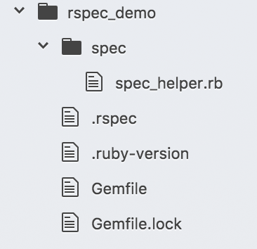
Рис. Структура приложения без какого-либо “полезного” кода.
Что видно из этого рисунка? Программа еще не написана, но уже существует 5 файлов! Два файла являются т.н. dot-файлами (dotfiles, начинаются с точки). Есть файл с подчеркиванием (snake_case), есть файл с дефисом (kebab-case). Есть файлы, начинающиеся с большой буквы, есть файлы начинающиеся с маленькой буквы. Есть файлы с расширением, есть без. Остается только сказать, что мы живем не в идеальном мире, а перфекционисты в программировании могут почувствовать себя не очень уютно.
Давайте напишем какой-нибудь “полезный” код, а потом покроем его тестами. И тут сразу же нужно сделать отступление. В сообществе разработчиков не утихают дебаты по поводу правильного подхода: что нужно делать сначала: писать полезный код, а потом тесты? Или же сначала создавать тесты, а потом код? (т.н. Test Driven Development, TDD).
На сайте Youtube есть видео дебатов DHH (одного из создателей фреймворка Rails), Кента Бека (основателя методологии TDD) и Мартина Фаулера (известного автора трудов по основам объектно-ориентированного программирования и проектирования). Авторы этой книги солидарны с DHH и придерживаются мнения, что сначала нужно написать код, а потом покрывать существующий код тестами.
Наш “полезный” код уже нам знаком:
```
def total_weight(options={})
a = options[:soccer_ball_count] || 0
b = options[:tennis_ball_count] || 0
c = options[:golf_ball_count] || 0
(a * 410) + (b * 58) + (c * 45) + 29
end
x = total_weight(soccer_ball_count: 3, tennis_ball_count: 2, golf_ball_count: 1)
```
Мы рассматривали этот метод, когда считали общий вес заказа. Выше мы умножаем количество футбольных мячей “a” на вес каждого футбольного мяча (410 грамм), количество мячей для тенниса “b” на вес каждого мяча для тенниса (58 грамм), количество мячей для гольфа “c” на вес каждого мяча для гольфа (45 грамм) и прибавляем вес коробки (29 грамм).
Сейчас с этим методом все в порядке. Но почему именно этот метод стоит покрыть тестами? Чтобы ответить на этот вопрос, подумаем что может пойти не так.
Во-первых, речь идет о деньгах - о стоимости посылки. Там где деньги, там нужен точный расчет и нужна надежность. Какой-нибудь программист через год или два может заглянуть в этот метод и добавить новую функциональность. Например, новый тип мячей. Чтобы убедиться в том, что ничего не сломано, нужно хотя бы запустить этот метод и сравнить результат с ожидаемым. Но лучше делать это автоматически.
Во-вторых, кто-то может посчитать, что конструкция `|| 0` лишняя. Это мнение имеет право на существование, т.к. следующий код вполне работоспособен (попробуйте запустить в pry):
```
def total_weight(options={})
a = options[:soccer_ball_count]
b = options[:tennis_ball_count]
c = options[:golf_ball_count]
(a * 410) + (b * 58) + (c * 45) + 29
end
x = total_weight(soccer_ball_count: 3, tennis_ball_count: 2, golf_ball_count: 1)
```
Но только до той поры, пока код вызывается со всеми параметрами. Когда один из них отсутствует, будет выдана ошибка:
```
$ pry
...
x = total_weight(soccer_ball_count: 3, tennis_ball_count: 2)
NoMethodError: undefined method `*' for nil:NilClass
from (pry):12:in `total_weight'
```
Хороший тест предотвратит эту ошибку.
В-третьих, представьте какой-нибудь более сложный сценарий. Например, если общий вес мячей больше определенного значения, то требуются две коробки. Или мы знаем, что при покупке хотя бы одного мяча для тенниса в коробку кладется рекламный буклет весом 25 грамм.
Конечно, можно было бы обойтись и без тестов. Достаточно написать правильный метод, проверить его вручную (например, в pry) и использовать в приложении. Но согласитесь, что неплохо бы было дать другим программистам возможность проверить написанный вами код. А еще лучше сделать так, чтобы этот код был представлен в общем наборе тестов, среди всех других проверок, чтобы одной с помощью одной консольной команды можно было запустить все тесты сразу и убедиться, что все впорядке.
Добавим в наше приложение одну директорию `lib` и два файла: `shipment.rb` и `app.rb`:
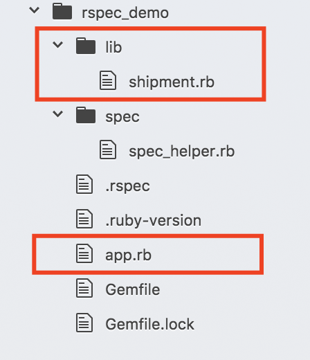
`app.rb` будет выглядеть следующим образом:
```
require './lib/shipment'
x = Shipment.total_weight(soccer_ball_count: 3, tennis_ball_count: 2, golf_ball_count: 1)
puts x
```
`lib/shipment.rb` будет содержать упомянутую выше функцию, но код будет представлен в виде модуля:
```
module Shipment
module_function
def total_weight(options={})
a = options[:soccer_ball_count] || 0
b = options[:tennis_ball_count] || 0
c = options[:golf_ball_count] || 0
(a * 410) + (b * 58) + (c * 45) + 29
end
end
```
Можно было бы создать класс и объявить метод в виде метода класса `self.total_weight`, но не рекомендуется создавать классы, когда мы не собираемся создавать их экземпляры (см. https://github.com/rubocop-hq/ruby-style-guide#modules-vs-classes). Поэтому мы ограничимся модулем и специальным синтаксисом `module_function`.
При запуске `app.rb` на экран выводится вес отправления:
```
$ ruby app.rb
1420
```
Выше мы разбили программу на две части (на два юнита): часть, которая содержит логику `shipment.rb`. И часть, которая вызывает логику `app.rb`. Мы создадим тест для первого юнита, `shipment.rb`, который содержит основную логику. Второй юнит пока не является чем-то сложным, поэтому покрывать тестом мы его не будем.
Добавьте в директорию `spec` файл `shipment_spec.rb`:
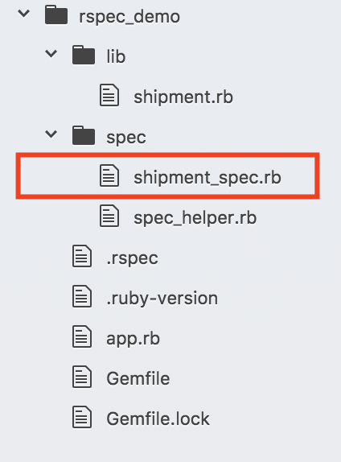
Cо следующим содержимым:
```
require './lib/shipment'
describe Shipment do
it 'should work without options' do
expect(Shipment.total_weight).to eq(29)
end
end
```
И запустите тесты (параметры устанавливают форматирование в значение “d” - documentation, в этом случае rspec выводит имена тестов):
```
$ rspec -f d
Shipment
should work without options
Finished in 0.00154 seconds (files took 0.09464 seconds to load)
1 example, 0 failures
```
Тест отлично отработал, но что же произошло в программе? Давайте разберемся. Вот код программы с комментариями:
```
# подключаем юнит
require './lib/shipment'
# специальный синтаксис, который дословно говорит:
# "описываем Shipment (отправление)"
describe Shipment do
# специальный синтаксис, который дословно говорит:
# "это должно работать без опций"
# (то, что в кавычках - это строка, мы сами её пишем, слово "it" служебное)
it 'should work without options' do
# ожидаем, что общий вес отправления будет равен 29 (eq от англ."equal")
expect(Shipment.total_weight).to eq(29)
end
end
```
Согласитесь, что код выглядит не вполне обычно. То, что вы видите выше это т.н. rspec DSL (Domain Specific Language - язык предметной области). Он работает только в rspec. Давайте добавим еще один тест и посмотрим на результат:
```
require './lib/shipment'
describe Shipment do
it 'should work without options' do
expect(Shipment.total_weight).to eq(29)
end
it 'should calculate shipment with only one item' do
expect(Shipment.total_weight(soccer_ball_count: 1)).to eq(439)
expect(Shipment.total_weight(tennis_ball_count: 1)).to eq(87)
expect(Shipment.total_weight(golf_ball_count: 1)).to eq(74)
end
end
```
Результат:
```
$ rspec -f d
Shipment
should work without options
should calculate shipment with only one item
Finished in 0.00156 seconds (files took 0.09641 seconds to load)
2 examples, 0 failures
```
Что произошло выше? “It should calculate shipment with only one item” дословно переводится как “это должно рассчитывать отправление только с одной вещью”. Другими словами, как раз то, что мы желаем проверить: код должен работать в тех случаях, когда программист передает только 1 аргумент в функцию `total_weight`. Кстати, вместо непонятных цифр 439, 87, 74 лучше написать ожидаемый результат в виде сложения. В будущем возможно потребуется заменить 29 на какое-то другое значение, да и вообще, полезно иметь возможность понять откуда взялись эти цифры:
```
expect(Shipment.total_weight(soccer_ball_count: 1)).to eq(410 + 29)
expect(Shipment.total_weight(tennis_ball_count: 1)).to eq(58 + 29)
expect(Shipment.total_weight(golf_ball_count: 1)).to eq(45 + 29)
```
Давайте подробнее разберем строку:
```
expect(something).to eq(some_value)
```
которая также может быть представлена как:
```
expect(something).to be(some_value)
```
О разнице между "eq" и "be" немного ниже. Эта строка похожа на предложение в английском языке. Например, мама говорит мальчику: "Son, when you go to school, I expect you to be a good boy" ("Сынок, когда ты идешь в школу, я ожидаю, что ты будешь хорошим мальчиком"). На языке RSpec DSL это может быть записано следующим образом:
```
expect(son).to be(a_good_boy)
```
Или немного иначе:
```
expect(son).not_to be(a_bad_boy)
```
Если бы мы записывали программу на чистом руби, то мы скорее всего написали бы что-то вроде:
```
if son != a_good_boy
panic
end
```
Но RSpec дает нам возможность записать все в виде одной строки, и в более естественном (с точки зрения RSpec) виде. Под капотом там, конечно, используется обычная конструкция "if". Другими словами, в тестах мы не пишем "if", а сообщаем о наших ожиданиях. Мы не используем императивный стиль, а используем декларативный. Мама не говорит мальчику что конкретно делать ("не обижай девочек", "учись хорошо"), она говорит что она от него ожидает ("будь хорошим"). Другими словами, это spec, спецификация, которая где-то задана и которой надо соответствовать.
Выражения типа `expect(son).to` и `expect(son).not_to` являются ожиданием (expectation). А выражения `eq(...)` (от слова "equal"), `be(...)` называют матчерами (matchers). Матчеры и ожидания бывают разных типов. Обычно ожидания могут принимать или вид выражения, или вид блока:
Выражение (expression) в ожидании используется, когда мы проверяем какое-то существительное, или результат действия. Например: мальчик, вес мяча, вес посылки:
```
expect(son).to be(a_good_boy)
expect(soccer_ball_weight).to eq(410)
expect(Shipment.total_weight(soccer_ball_count: 1)).to eq(439)
```
Блоки в ожидании используются когда требуется или проверить что-то во время операции, или сделать какое-то измерение. Например: проверить, что метод выдает исключение, если запущен с определенными параметрами; проверить, что метод меняет состояние экземпляра класса - например, добавляем товар в корзину, а общее количество элементов в корзине увеличилось на один. Если в случае выражений мы просто помещали их в скобки, то в случае с блоками мы передаем их в фигурных скобках:
```
expect { Shipment.total_weight(ford_trucks: 100) }.to raise_error
expect { some_order.add(item) }.to change { order.item_count }.by(1)
```
Синтаксис является немного необычным и требует привыкания. Ожидания и стандартные матчеры доступны на официальном сайте по адресу https://relishapp.com/rspec/rspec-expectations/docs/built-in-matchers. Хочется заметить, что из практики программирования этого набора обычно достаточно.
У нас нет задачи дать полную справку по rspec, но следует упомянуть о различии матчеров "eq" и "be". "Be" означает "быть", т.е. быть в смысле "точно вот этим". А "eq" означает "равен" ("equals"). Т.е. не обязательно быть точно таким же, но нужно равняться. Например, надписи на заборах из трех букв обычно равны ("eq"), но каждая из них уникальная по-своему, поэтому нельзя применить к ним матчер "be". Ведь надпись может быть нарисована разной краской, разным размером и т.д.
Т.к. все в руби объект, то это важно. Например, переменные "a" и "b" ниже равны, но их идентификаторы разные, т.к. это разные объекты и они расположены в разных областях памяти:
```
$ pry
> a = "XXX"
> b = "XXX"
> a == b
=> true
> a.__id__ == b.__id__
=> false
```
Давайте напишем еще один тест для нашей программы:
```
it 'should calculate shipment with multiple items' do
expect(
Shipment.total_weight(soccer_ball_count: 3, tennis_ball_count: 2, golf_ball_count: 1)
).to eq(1420)
end
```
Ради удобства чтения выражение, которое мы хотим проверить было перенесено на отдельную строку. Результат выполнения всех тестов:
```
$ rspec -f d
Shipment
should work without options
should calculate shipment with only one item
should calculate shipment with multiple items
Finished in 0.00291 seconds (files took 0.19016 seconds to load)
3 examples, 0 failures
```
Все это хорошо, но выше был дан пример тестирования "статического" метода, или метода класса (точнее модуля, что почти одно и то же), но не экземпляра. Заметьте, что мы нигде не создавали никакого объекта, а вызывали класс напрямую. В случае наличия объекта для тестирования все становится намного интереснее.
Можно долго рассказывать про rspec и существуют отдельные книги на эту тему (например, https://leanpub.com/everydayrailsrspec), но самый лучший совет, который могут дать авторы: при написании программ старайтесь думать о том, как вы будете тестировать написанный вами код. Существует множество приёмов, но наша задача - познакомить вас с синтаксисом и дать основы.
Задание: попробуйте заменить 1420 выше на 1421 и посмотрите что произойдет (тест не должен сработать).
Задание: код файла `shipment.rb` был изменен: если в метод “total_weight” не переданы аргументы, генерируется ошибка (также говорят “выбрасывается исключение”):
```
module Shipment
module_function
def total_weight(options={})
raise "Can't calculate weight with empty options" if options.empty?
a = options[:soccer_ball_count] || 0
b = options[:tennis_ball_count] || 0
c = options[:golf_ball_count] || 0
(a * 410) + (b * 58) + (c * 45) + 29
end
end
```
Измените тест таким образом, чтобы тест проверял, что ошибка на самом деле генерируется.
Мы рассмотрели лишь некоторые возможности языка Руби, выполнили задания, заложили фундамент, который позволит уверенно двигаться дальше. Для любого программиста очень важно понимание основ и возможностей инструментов.
Знания, изложенные в этой книге, в течение нескольких лет собирались из разных источников. Они дают неоспоримое преимущество перед другими учащимися. Возможно, вам придется обращаться к этой книге снова -- это нормальный процесс, т.к. полученная информация усваивается постепенно, оседает слоями, каждый раз дополняя общее понимание.
Если какие-то моменты оказались сложны для вашего понимания, мы рекомендуем вернуться к прочитанному материалу через 2-3 месяца. Авторы желают успехов, не останавливаться на достигнутом, двигаться вперед к намеченной цели -- удаленная работа, которая даёт свободу и финансовую независимость.